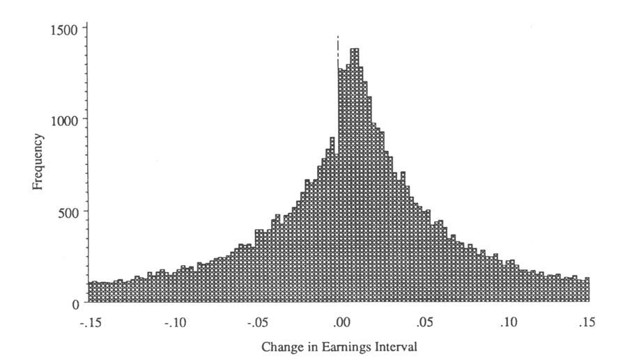
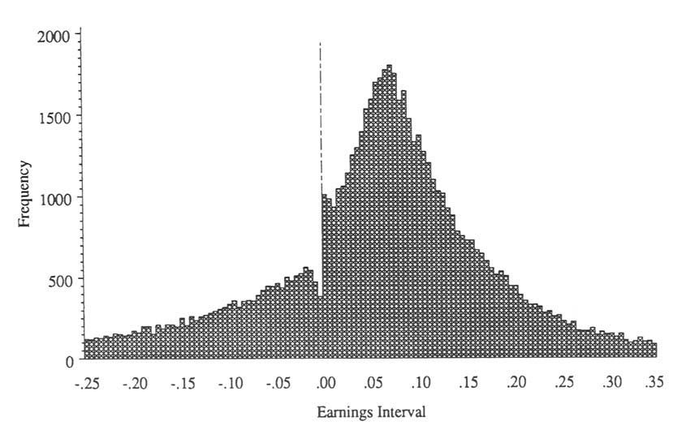
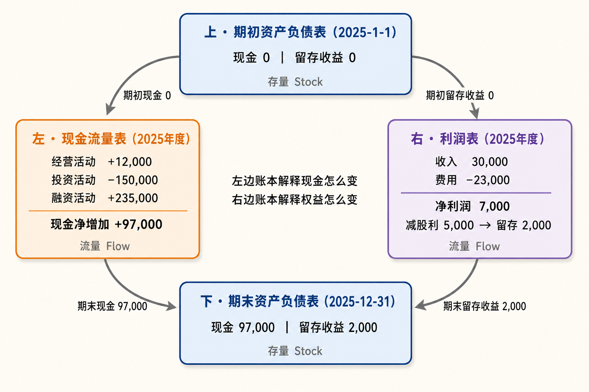

板块一 · 读懂报表 · 打地基
把会计当成一门『商业语言』先学会认字，再看懂三张报表怎么拼成一个整体。
第1章会计：商业语言p1
📖 不是教你记账，而是让你看懂『数字在替企业说什么』——谁在用报表、用来回答什么问题。
本章小节
- 1.1 商业活动的模式
- 1.2 会计：一门商业语言
- 1.3 财务会计的定义
- 1.4 财务会计的使用者
- 1.5 会计流程的介绍
- 1.6 财务会计和管理会计
- 1.7 有效财务报表的质量指标
- 1.8 会计的演变史：从苏美尔到卢卡·帕乔利
是什么会计是描述商业活动的一门『语言』：把企业里买卖、投入、产出这些事，翻译成大家能对账、能比较的货币数字，最终产出三张财务报表。
为什么重要企业和资本提供者是『委托—代理』关系，管理者必须用同一套语言向股东、债权人汇报『钱怎么用、创造了多少财富』。看不懂这门语言，就看不懂谁在替你说话。
决策者怎么用先分清自己是哪类使用者（股东看回报、债权人看偿债、你自己看全局），再带着问题去读对应的表；同时警惕『会计战略』——同一桩生意，合规范围内也能讲出不同的数字。
🗣 一句大白话会计就是生意的『普通话』。不学这门话，董事会上人家报数你只能点头；学会了，你能听出数字里哪句是实话、哪句是修辞。
🎓 课堂补充第1章 · 会计：商业语言上面是预习四段卡，下面精读区是预习底稿
第一讲 · 导论：财务报告体系综述教授讲了财务报告体系的基础理论，并特别强调了"信息"在整个财务报告体系里的重要性。
🗣 大白话：财务报表说到底是一套"信息传递系统"——公司把经营情况翻译成数字，传给看不到公司内部真实运作的人（股东、债权人、监管者），信息越真实、越及时、越可比，这套系统才越有用。这也是为什么后面每一章讲的规则（怎么确认收入、怎么算折旧），本质都是在回答"怎么把信息传得更准确"这一个问题。呼应预习 · 精读区"核心三 · 谁在读这张表"与"六大质量指标"
例子 · 二手车市场（信息不对称模型，三个假设）
出处 · Akerlof (1970) QJEGeorge A. Akerlof, The Market for "Lemons": Quality Uncertainty and the Market Mechanism, Quarterly Journal of Economics 84(3): 488–500。"柠檬"在美国俚语里就是"烂车"。这篇文章让作者拿了 2001 年诺贝尔经济学奖，是"信息不对称"整个领域的开山之作。
假设① 卖家信息完全卖家对自己这辆车的真实车况非常清楚。
假设② 买家信息不足买家不清楚具体某一辆车的真实车况，处于信息弱势、尤其吃亏。
假设③ 市场公开信息买卖双方都知道的公开信息是：市场上所有车的真实质量呈平均分布。
💬 教授课堂提问：基于以上三个假设，买家最多愿意出多少钱买这辆车？
答：作为潜在买家，看不出具体这辆车的好坏，最多只愿意按"均值"出价——教授的例子里就是 50 元（车的真实价值平均分布，中间值 50）。
答：作为潜在买家，看不出具体这辆车的好坏，最多只愿意按"均值"出价——教授的例子里就是 50 元（车的真实价值平均分布，中间值 50）。
🗣 大白话：买家不知道手里这辆是好车还是烂车，只知道"整体上一半好一半坏"，那出价就只能按平均水平来：出高了怕买到烂车吃亏，所以 50 元是买家理性出价的天花板。放到财务报表上也一样：如果投资人完全看不清一家公司的真实情况，就只会按"行业平均水平"给这家公司估值——真正好的公司会被低估，这正是公司需要靠可信的财务报告来"证明自己不是烂车"的原因。
💎 没有信息，就没有市场。教授金句 · 第一讲
🗣 大白话：接着二手车的例子往下推：买家只肯出 50，那些真值 80、90 的好车车主就不愿意卖，退出市场；剩下的车平均质量更差，买家出价再往下压，好车再退出……最后市场上只剩烂车，甚至交易彻底做不成。所以"信息"不是市场的润滑剂，而是市场能存在的前提——财务报告体系存在的根本理由，就是给资本市场提供这份"信息"。
教授 PPT · 实践与实证的证据 · 2) 财务信息的重要性
✓ 复式会计用了 600 多年Double-entry Accounting 最早在意大利的银行和商家中使用。教授给的三个关键词：Longevity（长寿）；Math vs. Art（数学 vs 艺术）；Language, Communication & Story-telling（语言、沟通与讲故事）。
✓ Dechow (1994) JAE假设有效市场（Efficient Market），比较会计收益（权责发生制）与现金流（现金制）在解释公司绩效（同期股票收益）方面的能力。教授引用该文表 3。
✓ Asquith, Mikhail & Au (2005) JFE财务信息对明星分析师的实战意义。教授引用该文表 1。
Earnings（会计收益，利润表 IS）＝ Operating Cash Flows（经营现金流，现金流量表 CFS）＋ Accruals（应计项，资产负债表 BS）
↑ 教授标注：这个等式第二、三讲会展开
↑ 教授标注：这个等式第二、三讲会展开
🗣 大白话：这个等式是整门课的一根主线：利润和经营现金流之间的差额就叫"应计项"——赊出去还没收的钱、买了设备摊到今年的折旧、计提了还没付的工资，全在这里。会计利润之所以比现金流更能解释股价（Dechow 的发现），就是因为应计项把"时间错位"修正掉了；但反过来，应计项也是最容易被人为操纵的地方——第 17 章盈余质量讲的就是这块。呼应预习 · 第 3 章"三张表怎么拼成一台机器"、第 17 章"盈余质量"
🗣 大白话·三个关键词："600 年"说的是这套语言经受住了时间考验（Longevity）；"数学 vs 艺术"说的是记账规则是数学、但判断和估计是艺术；"语言、沟通、讲故事"说的是报表的本质是公司向外界讲述自己的故事——呼应预习第 1 章的标题"会计：商业语言"。
✍️ 板书 ①：A ＝ L ＋ E（资产 ＝ 负债 ＋ 股东权益），会计恒等式。呼应预习 · 概念速查第一条"资产 = 负债 + 净值"
教授 PPT · 实践与实证的证据 · 3) 财务数据被操纵的普遍性证据
✓ Burgstahler & Dichev (1997) JAE 24: 99–126《Earnings management to avoid earnings decreases and losses》。教授引用该文图 1 和图 3。
教授的落点"这些证据从另外一个角度反映了财务信息的重要性"——正因为财务数字对股价、对管理层考核如此重要，才会有人费劲去操纵它。


🗣 大白话：把几万家公司的年度利润画成一张"人口普查图"，正常应该像一座圆滑的山；结果在"零"这条线上出现一道悬崖——线左边的人少得反常，线右边的人多得反常。公司不会集体这么巧，唯一的解释是：眼看要亏一点点（图 3）或者要比去年少赚一点点（图 1）的公司，年底使劲把数字"垫"过线。两张图合起来说的是同一件事：管理层在意的两条线，一条是"不能亏"，一条是"不能比去年差"。这也是权责发生制的另一面：应计项给了会计"判断"的空间，判断的空间就是操纵的空间。呼应预习 · 第 17 章"盈余质量"、案例 2 比亚迪"利润精准下降的艺术"（同样是卡着一条线做数字）
两张图取自 Burgstahler & Dichev (1997) 原文，仅供课堂学习引用，版权归原作者与 Journal of Accounting and Economics 所有。
板书 · DCF（Discounted Cash Flow，现金流折现估值）
先讲底层概念 · TVM（Time Value of Money，金钱的时间价值）教授强调：DCF 的地基就是 TVM——今天的 1 块钱比明年的 1 块钱值钱，因为今天的钱可以拿去投资生息、也没有等待的风险。所以未来的钱要"打折"才能和今天的钱相加。
两个方向往后算叫终值（FV）：今天 100 块，年利率 r，一年后变成 100×(1+r)；往前算叫现值（PV）：一年后的 100 块，今天只值 100÷(1+r)。DCF 用的是后者，把未来每一年的现金流都"往前折"回今天。
🗣 大白话：有人欠你 100 块，说"今天给"和"明年给"，你肯定要今天的——因为今天拿到能存银行吃利息，而且不用担心他明年赖账。这个"宁要今天"的差价就是金钱的时间价值。DCF 整个公式其实就是这一个念头反复用 n 次：把明年、后年、大后年的钱各自折成"相当于今天的多少"，再加起来。
教授板书：V0 ＝ CF0 ＋ CF1 ／ (1 ＋ r)1 ＋ CF2 ／ (1 ＋ r)2 ＋ …
V0：今天的价值 CFt：第 t 年的现金流 r：折现率
板书上圈了三个词：DCF · TVM · WACC——折现率 r 通常用 WACC（加权平均资本成本：股东要求的回报和债权人要求的利息按资本比例加权）
（完整写法会把 n 年之后打包成终值 TVn ＝ CFn+1 ／ (r − g) 再折现）
V0：今天的价值 CFt：第 t 年的现金流 r：折现率
板书上圈了三个词：DCF · TVM · WACC——折现率 r 通常用 WACC（加权平均资本成本：股东要求的回报和债权人要求的利息按资本比例加权）
（完整写法会把 n 年之后打包成终值 TVn ＝ CFn+1 ／ (r − g) 再折现）
🗣 大白话：一家公司值多少钱，等于它未来每年能掏出来的"自由的钱"，一年一年折算成今天的钱再加总。"折算"用的那个 r 就是折现率——明年的 100 块不如今天的 100 块，r 越大折得越狠。公式只有三个零件：未来现金流（分子）、折现率（分母）、终值（n 年之后一笔打包）。三个零件全靠预测和假设，所以 DCF 理论上最正统、实际上最主观——这正好接上前面 Asquith 那篇：分析师嘴上讲 DCF，手上用 P/E 倍数。呼应预习 · 第 17 章"自由现金流 FCFF/FCFE"（分子怎么来）、第 13 章九龙仓"折现率主观性最大"
三个"每股"指标 · 哪个最能解释同期股票回报
每股会计收益（EPS）权责发生制下的利润 ÷ 股数。
每股经营现金流经营活动实际收付的现金 ÷ 股数。
每股净现金流经营＋投资＋筹资三口子合计的现金净变动 ÷ 股数。
💬 教授课堂提问：如果只能选一种指标来评价（解释）同期的股票回报率，选哪个？
教授的答案：每股会计收益。教授课上讲的正是这篇经典文献：Dechow, P. M. (1994). Accounting earnings and cash flows as measures of firm performance: The role of accounting accruals. Journal of Accounting and Economics, 18(1), 3–42. 结论：在同一个会计期间内，会计利润与股票回报的相关性最强，经营现金流次之，净现金流最弱；而且考察期越短、公司营运资本波动越大，利润相对现金流的优势越明显。
教授的答案：每股会计收益。教授课上讲的正是这篇经典文献：Dechow, P. M. (1994). Accounting earnings and cash flows as measures of firm performance: The role of accounting accruals. Journal of Accounting and Economics, 18(1), 3–42. 结论：在同一个会计期间内，会计利润与股票回报的相关性最强，经营现金流次之，净现金流最弱；而且考察期越短、公司营运资本波动越大，利润相对现金流的优势越明显。
🗣 大白话：现金流看着最"实在"，但短期内很闹腾——这个季度多囤了一批货、客户晚付了一个月款，经营现金流就大起大落，跟公司真实的赚钱能力没关系；净现金流更乱，借了笔钱、买了台设备都会把它冲得面目全非。会计利润靠权责发生制把这些"时间错位"熨平了：货卖出去就记收入、设备摊到每年记费用，所以它反而是三者里最能反映"这一期公司到底干得怎么样"的那个数，股价也就跟它走得最近。这正是第 1 章"权责发生制"存在的理由——不是会计爱绕弯子，而是绕完弯子之后的数字信息含量更高。呼应预习 · 概念速查"权责发生制 vs 现金收付制"、第 1 章"收入 ≠ 现金流入"
第一章精读 · 把地基一次夯实
🎧 本章白话语音版（约 5 分钟 · 跑步开车息屏都能听 · 自动记住进度，下次接着播）
这一章不教记账，教的是看财务的底层世界观：企业是台『现金泵』，会计是描述它的语言，而三张报表是这门语言最后写出的文章。下面几张图，是全课的地基。

会计把工厂、货船、货款、契约、单据……全部翻译成一张可对账、可比较的『账』。
核心一 · 企业是一台『现金泵』
图1-1 / 1-3 提炼：现金→资源→产品→更多现金，循环不停；会计是记录并汇报这台泵的语言。
🗣 大白话：公司说白了就是一台『抽水机』——先注一桶水（融资），抽上来更多水（卖货回款），留一部分继续抽、分一部分给出资人。会计干的活，就是在旁边拿本子记：抽了多少、漏了多少、还欠谁的水。看财务，本质是看这台泵抽得动抽不动、水是真水还是虚的。
核心二 · 会计是一门『活的、有弹性』的语言
同一桩生意，合规范围内也能报出不同的数字
会计要反映不断变化的商业现实，所以准则给了一定弹性；这份弹性正当使用叫『会计估计/会计政策』，用过头就成了『盈余管理』。三个真实例子，感受这个弹性有多大：
例1 · 收入确认变更日本永旺(Aeon)换了新的营业收入确认准则，同一年的营业收入口径直接受影响——规则一变，营收就变。
例2 · 折旧年限变更Alphabet(谷歌母公司)把服务器使用寿命从3年调到4年：折旧变少 → 当年净利润增加约20亿美元。一个假设，几十亿利润。
例3 · 准则切换智利LAN航空改用IFRS：净资产降4.3%(约减4200万美元)——生意没变，只是换了把尺子量。
🗣 大白话：会计不是一加一等于二那么死。同样一年的生意，换个记法就能让利润多几十亿、少几十亿，而且都合规。所以决策者读报表，第一反应不该是『数字多好看』，而是『他用的哪把尺子？换尺子了吗？』——这正是后面几天要练的『盈利质量』。
核心三 · 谁在读这张表，就决定了看哪里
股东关心两件事：资产有没有被乱动（看资产负债表）、企业替我创造了多少剩余（看利润表）。
债权人只关心一件事：到期你还得上本、付得起息吗？——盯未来产生现金的能力。
你自己(管理者)是『正在航行的船长』，要对全局有综合判断，内部还要用管理会计看每个环节的努力。
🗣 大白话：同一份报表，不同人看的是不同的角。先搞清楚你现在是哪种身份——是掏钱当股东、是放贷当债主、还是掌舵当老板——再带着那一类人的问题去翻表，才不会看得一头雾水、抓不住重点。
压轴 · 一个威尼斯商人，讲清三张报表怎么来的

书里用了个 600 年前的小故事：15世纪威尼斯商人卡斯特斯（书里叫 VC）凑钱造船、出海贸易、满载而归。妙处在于——跟着故事走一遍，你会亲眼看见那本『账』一页页变厚，三张报表就是这么自然长出来的。每一格漫画后面，都跟着那一刻的账本快照👇
① 凑本金 · 生意还没开张

年轻商人卡斯特斯想跟东方做贸易。家里给了他 100 金币，他单独成立了一家企业（书里叫 VC），自己是唯一股东。可 100 金币造不起一条远洋商船——他又找佛罗伦萨的银行家借了 900 金币（5 年、年息 10%）。此刻 VC 手上有 1000 金币，还没做任何生意。
表1-2 · 开张前的账本
📒 账本第一课：手上有 1000 现金，但其中 900 是借的（负债），真正属于自己的净值只有 100。借来的钱是现金、是负债，但它不是"赚来的"——记住这句，后面有大用。
② 置办家当 · 现金变成船和货

卡斯特斯用这 1000 金币买了船、装满食品和待卖的货、雇好船员，只留一点零用现金在船长手里。船整装待发。注意：VC 的财富一点没多也没少，只是同样的 1000 金币，从"现金"这一种形态，变成了"船 + 货 + 少量现金"。
表1-3 · 出发前的账本
📒 账本第二课：左边（资产）科目全换了脸，但总计还是 1000，净值还是 100。花钱买东西不等于变穷——只是资产换了个样子。这就是"资产 = 负债 + 净值"始终两边相等的道理。
③ 拉朋友入股 · 分掉一半风险

出海要 4 年，卡斯特斯把大部分身家都押进去了，心里没底。于是他找了个有钱朋友，把企业一半的"股份"（对未来利润的索取权）卖给他，换来 600 金币现金。他个人落袋为安、分散了风险，但也让出了将来一半的收益。
表1-4 · 卖掉一半股份后的账本
📒 账本第三课（最反直觉）：朋友那 600 金币进的是卡斯特斯个人的口袋，不是企业的账！所以 VC 的资产、负债、净值一个数字都没变——只是净值 100 里，卡斯特斯的份额从 100% 变成 50%。股东之间买卖股份，是他们的私事，不给公司创造财富。
④ 满载而归 · 净值暴涨

4 年后，船长不仅带回了自家商船，还俘获了 2 艘"敌方"船——三船货卖了 10008 金币！扣掉船长船员奖金、工资、消耗掉的存货、给银行的利息、船的折旧，这趟远征净赚 7900 金币。企业决定转行做更稳的农业，把三条船也卖了。
表1-8 · 归来卖货后的账本
📒 账本第四课（高潮）：净值从 100 暴涨到 8000，多出来的 7900 就是这门生意赚的利润。同时注意：手上现金 8900，比净值 8000 还多 900——那 900 正是还没还银行的债。钱多 ≠ 全是自己的。
看到没？净值涨了 7900（利润），可手上现金是 8900——两个数不一样。差在哪？下面这张图，就是你在书上批注的那个问题。👇
🗣 大白话：这个故事的妙处是——你不用懂会计，也能看懂一家公司的一生：借钱、置办家当、拉合伙人、出去闯、赚钱回来分。会计做的，只是给这五步各拍一张"账面快照"，快照拼起来，就是三张报表。
🖋 一平的批注 · 收入 ≠ 现金流入
这就是全章的『题眼』：现金进来不一定是赚到，赚到的钱也不一定变成现金。
🗣 大白话：你手里的钱变多了，不代表你赚了——可能只是借来的、或是别人预付的。反过来，账上说你赚了，钱也未必到账（货赊出去了）。所以后面丁远教授会反复敲这句话：『利润是观点，现金是事实』。这也是第 16、17 章要专门练现金流的原因。
三张表，各回答一个问题
资产负债表某一天的『家底快照』：我有什么（资产）、欠什么（负债）、剩下多少是自己的（净值）。
利润表一段时间的『成绩单』：这期间创造了多少财富（收入−费用=利润）。
现金流量表一段时间的『钱的进出流水』：钱从经营/投资/筹资三个口子怎么进、怎么出。
财务会计 vs 管理会计 · 一句话分清
财务会计（本课重点）给外部人看（股东/银行/税务）：把企业当一个整体，事后、精炼、受监管，讲究公平真实。
管理会计给内部人看（各级经理）：细到每个产品、每个部门的成本与努力，灵活、随时、不对外。
关键共识两者同源、口径不同，但对『一段时间内创造了多少净财富』最终会给出同一个答案。
什么样的财务信息才『有效』· 六大质量指标
图1-5 提炼：先满足『相关 + 忠实』两条底线，再用另外四条把信息打磨得更好用。
🗣 会计简史一句话（1.8）：从苏美尔人在泥板上刻账，到 1494 年卢卡·帕乔利写下复式记账（现代会计诞生）；中国也有自己的传统——从『三脚账』『龙门账』到四柱结算法：『旧管 + 新收 − 开除 = 实在』（期初 + 本期进 − 本期出 = 期末结存），本质和今天的平衡等式一模一样。会计不是新东西，是人类记录财富的老手艺。
说明：本区为学委对课程主参考书《财务报告与分析——一种国际化视角》（丁远等著）第 1 章的框架提炼与读书笔记，仅呈现方法与结论、便于同学预习，未搬录原书正文；配图为示意漫画。
第2章财务报表导言p40
📖 三张表初相识：资产负债表（家底）、利润表（这一年赚了多少）、以及背后的平衡等式。
本章小节
- 2.1 资产负债表（财务状况表）
- 2.2 股东权益的账面价值和市场价值
- 2.3 商业平衡等式（资产负债表平衡等式）
- 2.4 利润表（损益表）
- 2.5 折旧
- 2.6 利润分配
- 2.7 资源的消耗和存货的估值
- 2.8 财务报表分析
是什么把「资产=负债+股东权益」这条恒等式，拆成一笔笔交易来记账，看三张表怎么一步步长出来。
为什么重要这是全书的地基。看懂了「每笔交易两边永远相等」，后面所有报表分析都有了根。
决策者怎么用拿到一家公司，先在脑子里过一遍：这笔钱进来是借的、是赚的、还是股东投的？三者对企业的意义完全不同。
🗣 一句大白话记账就像走钢丝，左脚动一下右脚必须跟着动，两边始终一样高——这根钢丝叫「平衡等式」。
🎓 课堂补充第2章 · 财务报表导言上面是预习四段卡，下面精读区是预习底稿
第二讲 · 财务报表 · 本讲重点（教授 PPT）整讲的主线是"会计是一门语言"：先学听和读，再学说和写。
1. 年度报告与财务报表Language, Communication & Story-telling——年报是公司用会计语言讲的故事，三张表是故事的骨架。
2. 资产负债表、利润表（损益表）、现金流量表两个抓手：会计恒等式 A ＝ L ＋ E；三张表之间的关系 Earnings (IS) ＝ Operating Cash Flows (CFS) ＋ Accruals (BS)。
3. 经济活动分析与财务报表Language：听 & 读——看到一笔经济活动，能读出它会落在哪张表、哪个科目。
4. 财务报表编制Language：说 & 写——学一些编表的基础，目的不是当会计，而是"为了更好地听 & 读"。
🗣 大白话：学外语先听读后说写，学财报也一样：第 1、2 点是认字（三张表长什么样、靠哪两个等式串起来），第 3 点是听读（一件事发生了，报表上会怎么动），第 4 点是说写（自己动手记几笔账）。教授特意说编表只是"为了更好地听读"——这门课的目标是决策者看懂报表，不是培养会计。呼应预习 · 本章精读"无敌公司 8 笔交易"就是第 3、4 点的练习场；"两张表怎么咬合"对应第 2 点
重点 1 · 年度报告通常包括什么（教授 PPT，按美国 10-K 的 Item 编号）
| 年报组成部分 | 10-K 位置 | 看什么 |
|---|---|---|
| 主要财务指标 | ITEM 6 | 多年关键数字一页看完，先看这里定基调 |
| 公司业务概要 | ITEM 1 | 公司是干什么的、靠什么赚钱 |
| ✓ 风险因素 Risk Factors | ITEM 1A（2005 年起强制） | 教授特别点出：对照"经营情况讨论与分析"和"财务报表附注"一起读，例如金融工具风险 |
| 经营情况讨论与分析（MD&A） | ITEM 7 | 管理层用自己的话解释数字为什么变 |
| 董事、监事、高级管理人员 | ITEM 10 & 11；Proxy Statement 委托声明 | 谁在管、拿多少钱、怎么激励 |
| 财务报告：报表与附注 | ITEM 8 | 三张表 + 附注，本课主战场 |
🗣 大白话：年报是一本书，三张表只是其中一章（Item 8）。会读年报的人不只盯着表：先看 Item 6 的几个关键数定基调，再读 Item 1 知道公司靠什么吃饭，读 1A 知道它怕什么，读 Item 7 听管理层怎么解释，最后才到 Item 8 用表和附注去验证前面说的话是真是假。教授把 Risk Factors 单独打勾，是提醒"风险因素"要和 MD&A、附注三处对着读——公司在一处轻描淡写的风险，往往在另一处露馅。呼应预习 · 比亚迪 2025 年报（班主任发的那份）：MD&A 在"管理层讨论与分析"一节；第 18 章精读"分部 X 光 + 信息来源"
重点 1 · 财务报表 · 时点与时期（Stock vs. Flow）
资产负债表 · 时点（Stock）某一天 24:00 那一刻的家底快照。
利润表 · 时期（Flow）一段时间（一年/一季）里赚了多少的流水账。
现金流量表 · 时期 / 时点本身是一段时间的流量，但它的起点和终点正好是两张资产负债表上的"现金"格子——用流量把两个时点连起来。教授标了 1987 vs. 1998：美国 1987 年（SFAS 95）才强制要求编现金流量表，中国 1998 年才引入，三张表里它最年轻。
合并与母公司财务报表集团年报里通常两套并列：合并报表（把子公司当作一家）和母公司报表（只看母公司自己）。看集团看合并，看分红能力看母公司。
🗣 大白话："时点"像体重秤上的数字——此刻多重；"时期"像这个月吃了多少、消耗了多少。资产负债表是秤，利润表和现金流量表是账本，两本账本解释的是"为什么月初和月末秤上的数字不一样"：利润表解释股东权益那格的变化，现金流量表解释现金那格的变化。现金流量表 1987/1998 才被强制，恰恰说明它是被"利润会骗人"逼出来的——预习第 2 章那家"利润年年翻倍却濒临破产"的公司，正是没有这张表时看不出的病。呼应预习 · 第 2 章"资产负债表 = 某一天的家底照片"、第 3 章"三张表怎么拼成一台机器"（期初 BS → CF → 期末 BS）、第 13 章合并报表
历史小注 · 为什么现金流量表最晚才出现（学委补充）①复式记账（1494）天然产出的是余额表和损益，现金只是一个账户，老板自己管钱袋子；②权责发生制越成熟，利润表越成主角，"钱过手"和"业绩发生"被刻意分开，现金退到幕后；③1975 年美国零售巨头 W.T. Grant 破产，事后发现它多年利润为正、经营现金流连年为负——"赚钱的公司破产了"逼出了改革：美国 1987 年 SFAS 95 强制现金流量表并定下经营/投资/筹资三分法，IAS 7 于 1992 年跟进，中国 1998 年用它取代财务状况变动表。
🗣 大白话：现金流量表不是三张表里"天生"的一员，它是权责发生制的副作用暴露之后追加的一道"验真"程序——这也是它排第三的原因：它是校验另外两张表的工具，不是起点。呼应预习 · 第 2 章"利润年年翻倍却濒临破产"、第 17 章"现金流量表的照妖镜用法"
💬 教授的排序：三张表如果论重要性，他第一选资产负债表，第二选利润表（现金流量表排第三）。
🗣 大白话（学委理解教授为什么这么排）：资产负债表是"存量"，另外两张都是解释存量怎么变的"流量"——有了期初、期末两张资产负债表，利润和现金的变化原则上都能倒推出来，反过来不行。而且第一讲那个等式 Earnings ＝ Operating Cash Flows ＋ Accruals 里，应计项就住在资产负债表上：应收账款、存货、预提费用、折旧……利润的水分和真实，全藏在这张表的科目里。所以教授把它排第一，不是说现金不重要，而是"看懂了家底，才看得懂另外两张表在讲什么"。呼应预习 · 第 15 章"给资产负债表做一次结构体检"、第 17 章盈余质量
重点 1 · 谁需要财务报告 · 外部需求 vs 内部需求
外部需求股东/潜在投资者（要不要买、值多少钱）、债权人/银行（还不还得起）、监管与税务（合不合规）、供应商与客户（这家公司稳不稳）。他们看不到公司内部，只能靠对外披露的财务报告——呼应第一讲二手车市场：报告是缓解信息不对称的工具。
内部需求管理层与各级经理：定价、预算、考核、投资决策，需要更细、更快、不必按准则格式的数字（管理会计范畴）。
🗣 大白话：同一家公司的账，外人和自己人要的东西不一样：外人要的是"可信、可比、按统一格式"，因为他们只能隔着玻璃看，所以要有准则、要有审计；自己人要的是"够细、够快、能指导明天干什么"，格式随意。这门课站在外部使用者（决策者）这一边，主攻财务会计。呼应预习 · 第 1 章精读"核心三 · 谁在读这张表，就决定了看哪里"与"财务会计 vs 管理会计"
教授讲 · 资本化 vs 费用化（一笔支出，进资产负债表还是进利润表？）
资本化（Capitalize）支出先记成资产（BS），以后再通过折旧/摊销分期进费用。适用：这笔钱带来的好处能延续到未来多个期间（买设备、盖厂房、开发软件）。
费用化（Expense）支出当期直接进费用（IS），马上减利润。适用：好处只在当期（工资、广告、日常维修、研究阶段的研发）。
判断标准是否形成"未来经济利益流入"且能可靠计量——能，就资本化；不能或说不清，就费用化（会计的审慎原则：拿不准往费用靠）。
| 同一笔 100 万支出 | 资本化 | 费用化 |
|---|---|---|
| 当期利润 | 只减折旧那一小块（如 5 年 → 减 20 万） | 减 100 万 |
| 当期资产 | 多一项 100 万资产（逐年折旧减少） | 不变 |
| 以后各期利润 | 每年再减 20 万 | 不受影响 |
| 现金流 | 完全一样——钱都是当期付掉的（只是资本化的钱进投资活动、费用化的钱进经营活动） | |
🗣 大白话：资本化 = "这钱不是花掉了，是换成了一件以后还能用的东西"，所以先挂在家底上，再慢慢摊；费用化 = "这钱花了就花了"，当场从利润里扣。两种记法现金一分不差，差的只是利润在"今年"和"以后几年"之间怎么分——这正是应计项的典型例子，也是本课刚讲的 Earnings ＝ OCF ＋ Accruals 里 Accruals 的来源之一。呼应预习 · 第 2 章"折旧 · 把一次性的大钱摊成每年的小费用"、五要素速查表"花钱 ≠ 费用"
为什么它是操纵重灾区把本该费用化的支出资本化，当期利润立刻好看、资产也变厚，现金流却露不出破绽（只是从经营活动挪到投资活动）。经典案例：2002 年 WorldCom 把约 38 亿美元线路租赁费用资本化成资产，成为美国史上最大会计丑闻之一。
常见的灰色地带研发支出（IFRS：研究阶段费用化、开发阶段满足条件可资本化；美国 GAAP 基本全部费用化）；在建工程期间的借款利息（可资本化进工程成本）；大修 vs 日常维修；软件开发。
🗣 大白话：看一家公司利润时多问一句"研发和利息有多少被资本化了"——预习案例 2 比亚迪《利润精准下降的艺术》里，"盈余管理三只手"的第三只手就是费用资本化（研发/利息）。方向可以反着用：想把利润压低也行，多费用化即可。呼应预习 · 案例 2 比亚迪"盈余管理三只手"、第 17 章"两条操纵路径 · 记账笔杆"
教授讲 · 合同资产（Contract Asset）· 和应收账款、合同负债的区别
合同资产货/服务已经交付、收入已经确认，但收款的权利还附带条件（比如要等整个合同里其他部分也交付完、或等客户验收），不只是"等时间到"。是资产，但比应收账款"生"一点。
应收账款收款权利无条件，只差时间（账期一到就该付）。合同资产满足了条件，就转成应收账款。
合同负债反过来：钱先收了（或有无条件收款权），货/服务还没交——欠客户的，就是过去说的"预收账款"。
🗣 大白话：装修公司做一个"设计＋施工＋软装"打包合同：设计做完了，收入可以确认，但合同约定要整套完工才结算——这时对客户的债权就是"合同资产"（活干了，但收钱还得看后面）；等全部完工、开出账单，只剩等客户付款，就变成"应收账款"；如果客户开工前先付了 30% 定金，那 30% 就是"合同负债"。三者的区别只在一句话：货交了没、钱收了没、收钱还有没有附加条件。这三个科目都是 2017 年新收入准则（IFRS 15 / 中国 CAS 14）引入的，看老年报见不到"合同资产"这个词。呼应预习 · 五要素速查表"预收/预付/应收/应付"2×2 矩阵、"反常识警报 · 预收账款是负债"
纸质课件 p.21 · 用比亚迪 2025-12-31 资产负债表讲三大块（年报第 123–125 页，Stock）
教授的第一问：如何区分流动与非流动？一年（或一个营业周期）内能变现/要偿还的算流动，否则非流动。资产负债表就是按这条线切成上下两半。
教授的第二句：流动 vs 固定，是"流动性"和"盈利能力"的对调流动资产（现金、应收、存货）流动性强、但盈利能力差；固定资产（厂房、设备）盈利能力强、但流动性差。资产结构本质上是在这两头之间做取舍。
研究开发费用 · US GAAP vs. IFRS美国 GAAP 基本全部费用化；IFRS（中国准则同）研究阶段费用化、开发阶段满足条件可资本化为"开发支出"——就是上面"资本化 vs 费用化"的现场例子。
同学问：开发支出为什么算资产？它是"还没建完的无形资产"，逻辑和在建工程一样。研发分两段：研究阶段（不知道能不能成）全部费用化；开发阶段（已确定要做成产品，且同时满足五个条件：技术可行、有意图完成、有能力使用或出售、很可能带来未来经济利益、有资源完成且支出可靠计量）先挂"开发支出"，完工转入无形资产再逐年摊销，失败则一次转费用。
🗣 大白话：盖厂房钱花了楼没好，挂"在建工程"；开发新车平台钱花了平台没定型，挂"开发支出"——都是"半成品资产"。要盯它，是因为"很可能带来未来收益"这一条靠管理层判断，多资本化当期利润就好看。
⭐ 教授反复强调 · 研发资本化，是本讲最重要的科目一平课上的判断："教授一直在讲这个，感觉很重要"——按重点备
| 比亚迪研发投入（年报第 39 页） | 2025 年 | 2024 年 | 变动 |
|---|---|---|---|
| 研发投入总额 | 634.4 亿 | 541.6 亿 | +17.1% |
| 研发投入占营业收入 | 7.89% | 6.97% | +0.92 个点 |
| 研发投入资本化的金额 | 54.6 亿 | 9.7 亿 | +465% |
| 资本化研发投入占比 | 8.61% | 1.78% | +6.83 个点 |
| 年报第 40 页"研发投入资本化率大幅变动的原因及其合理性说明" | 勾选"不适用"——资本化率翻了近 4 倍，公司没有给出说明 | ||
🗣 大白话（为什么教授盯着它不放）：①它把第一讲到现在的所有线索串在一起：权责发生制 → 应计项 → 资本化 vs 费用化 → 利润可以被"设计"。②数字会说话：如果比亚迪 2025 年还按 2024 年 1.78% 的比例资本化，资本化金额只有约 11 亿，实际是 54.6 亿——多资本化的约 43 亿没进当期费用，粗算把利润总额（397.5 亿）抬高了一成左右（学委粗算，未考虑摊销和所得税）。③公司在年报里对这个变化勾了"不适用"，没解释。教授不是说比亚迪造假——研发确实在猛增、大量项目可能真进入了开发阶段——而是在教你：看到研发资本化率跳升，这是必须追问的第一个科目。
同学问"填表怎么考虑" · 用 100 元研发走一遍三张表
| 今年研发花 100 元现金 | 费用化的 40（研究阶段） | 资本化的 60（开发阶段，满足五条件） |
|---|---|---|
| 分录 | 借：研发费用 40 ／ 贷：现金 40 | 借：开发支出 60 ／ 贷：现金 60 |
| 资产负债表 | 现金 −40；留存收益 −40 | 现金 −60；开发支出 +60（资产换形态，总资产不变） |
| 利润表 | 费用 +40，利润 −40 | 不动 |
| 现金流量表 | 经营活动流出 40 | 投资活动流出 60（购建无形资产） |
| 在等式里的位置 | 记账时借"费用"（展开式左侧），年底结账转入留存收益（基本式右侧） | 借"资产"（左侧），一直留在左侧，以后每年摊 12 才搬到右侧 |
| 明年项目做成 | — | 借：无形资产 60 ／ 贷：开发支出 60（表内搬家，同在建工程转固定资产） |
| 以后每年（摊 5 年） | — | 借：研发/管理费用 12 ／ 贷：累计摊销 12 → 利润表每年 −12 |
| 项目失败 | — | 借：研发费用 60 ／ 贷：开发支出 60 → 一次性进利润表 |
| 当年对比 | 全部费用化 | 资本化 60 |
|---|---|---|
| 利润 | −100 | −40 |
| 总资产 | −100 | −40（现金 −100，开发支出 +60） |
| 现金 | −100 | −100 |
| 经营现金流 / 投资现金流 | −100 / 0 | −40 / −60 |
🗣 大白话：两笔钱都花出去了，但只有 40 进了利润表，60 "停"在资产负债表上——资本化不是钱没花，是钱暂时不算费用，以后分五年慢慢割。填表只有一个判断点：这笔研发是直接进利润表，还是先挂"开发支出"以后再摊。现金那一格永远一样，差别全在"利润表今年认多少"和"经营现金流好不好看"。比亚迪 2025 年 634 亿研发里，580 亿走左列（研发费用），54.6 亿走右列（开发支出）。
怎么查（三步）① 年报"管理层讨论与分析"里找"研发投入情况"表，看资本化金额和比例的同比；② 资产负债表"开发支出"余额和附注里的项目明细（在开发什么、什么时候转无形资产）；③ 把资本化率跳升的年份和利润增速放一起看，问一句"如果不资本化，利润还增长吗"。
中美不能直接比美国 GAAP 研发基本全部费用化（软件除外），所以特斯拉的研发费用和比亚迪的研发费用口径不同：比亚迪利润表上的研发费用（580 亿）已经是扣掉资本化部分之后的数。
🗣 大白话（流动性 vs 盈利能力）：现金放着最安全、随时能用，但它自己不下蛋；一条产线能天天下蛋，但真要急用钱，卖厂房卖设备既慢又折价。所以公司不能全是现金（安全但不赚），也不能全是厂房（能赚但一有风吹草动就周转不开）。比亚迪 2025 年六成家底是非流动资产，就是典型的"押注盈利能力"的制造业结构——代价是流动性要靠供应商账期和借款来补。呼应预习 · 第 15 章"净稳定资金过高拖盈利 = 低风险低盈利"、第 18 章杜邦"利润率 vs 周转"的取舍
| 教授点名的科目 | 2025-12-31 | 2024-12-31 | 一句话 |
|---|---|---|---|
| 资产 · 流动（合计 3,714.7 亿） | |||
| 货币资金（现金） | 754.2 亿 | 1,027.4 亿 | 少了 273 亿 |
| 应收账款 | 370.0 亿 | 623.0 亿 | 降了四成，收款变快或赊销变少 |
| 存货 | 1,384.2 亿 | 1,160.4 亿 | 压了 224 亿的货 |
| 资产 · 非流动（合计 5,122.6 亿） | |||
| 长期应收款 | 130.6 亿 | 102.1 亿 | |
| 长期股权投资 | 217.8 亿 | 190.8 亿 | 联营/合营公司的股份 |
| 固定资产 | 2,927.8 亿 | 2,622.9 亿 | 最大的一块家底 |
| 在建工程 | 482.9 亿 | 199.5 亿 | 翻了 2.4 倍，还在猛建厂 |
| 无形资产 | 414.9 亿 | 384.2 亿 | |
| 开发支出 | 59.7 亿 | 5.1 亿 | 翻了近 12 倍——研发资本化的那部分 |
| 商誉 | 44.3 亿 | 44.3 亿 | 一分没动，没新收购也没减值 |
| 资产总计 8,837.3 亿（2024：7,833.6 亿） | |||
| 负债 · 流动（合计 4,684.5 亿）／非流动（合计 1,567.4 亿） | |||
| 短期借款 | 384.8 亿 | 121.0 亿 | 翻了 3 倍 |
| 应付票据 | 224.6 亿 | 23.8 亿 | 翻了 9 倍 |
| 应付账款 | 1,867.4 亿 | 2,416.4 亿 | 少了 549 亿 |
| 长期借款 | 607.1 亿 | 82.6 亿 | 翻了 7 倍 |
| 应付债券 | 50.0 亿 | 0 | 新发的 |
| 负债合计 6,251.9 亿（2024：5,846.7 亿） | |||
| 股东权益（合计 2,585.4 亿，其中归母 2,462.7 亿） | |||
| 股本 | 91.2 亿 | 29.1 亿 | 股东投资：股本翻 3 倍是资本公积转增（送股），不是新钱 |
| 资本公积 | 952.8 亿 | 606.8 亿 | |
| 盈余公积 | 77.9 亿 | 73.7 亿 | 留存收益：历年赚了没分掉的 |
| 未分配利润 | 1,160.6 亿 | 986.5 亿 | |
| 其他综合收益 | 32.5 亿 | 14.4 亿 | 没进利润表的涨跌（外币折算、权益工具公允价值） |
| 负债和股东权益总计 8,837.3 亿 ＝ 资产总计 ✓ | |||
教授讲商誉：商誉是"外部"的、并购来的报表上的商誉只有一个来源——收购别的公司时，付的价钱超过对方可辨认净资产公允价值的那部分差额。公司自己多年经营攒下的品牌、口碑、客户关系（"自创商誉"）再值钱也不能入账。
怎么处理不摊销，每年做减值测试；一旦减值不得转回。所以商誉这个数只会"不动"或"往下掉"——比亚迪 44.3 亿两年一分没动，说明既没新并购、也没计提减值。
🗣 大白话：商誉就是"买公司时为看不见摸不着的东西付的钱"。你收购一家奶茶店，把门面、设备、库存、商标、现金一件件估价，减掉它欠供应商的钱，看得见的家底值 100 万；老板开价 150 万你也真掏了——因为它排队排到街尾、回头客多、店员熟练，这些说不清值多少、也拆不出来单卖，但你就是愿意多付 50 万。这 50 万账上没地方放，会计单开一个科目叫"商誉"。三个要点：①只有真买了才有（自己开的店再火商誉也是零）；②等于付的价减可辨认资产的公允价值（能拆出来说清的都单独记，剩下说不清的才是商誉）；③只会不动或往下掉（不摊销，但每年问一句"当年多付的还值吗"，不值就砍，砍了不能加回来——这就是"商誉减值爆雷"）。看年报：商誉大＝爱买公司买得贵；商誉占净资产比例高＝减值一次家底掏空一大块。比亚迪 44 亿占净资产不到 2%，很干净。呼应预习 · 第 13 章"商誉是怎么冒出来的 · 买贵了的那部分"拆分图和"收购溢价拆解器"组件、第 15 章宝洁"商誉 33.9% 家底看不见"
📌 考点 · 教授明示会出选择题
商誉，选择题会怎么考（按课上讲的四个要点备）：
商誉，选择题会怎么考（按课上讲的四个要点备）：
- 来源：商誉只能来自企业合并/收购（外购商誉）；企业自创的品牌、口碑、客户关系不确认为商誉。
- 计算：商誉 ＝ 收购价格（Price）− 被收购方所有可辨认资产的公允价值（扣除负债后的可辨认净资产公允价值）。注意是公允价值（FV），不是账面价值（BV）。
- 后续计量：不摊销；每年做减值测试；减值损失计入当期损益，且不得转回。
- 易混项：可辨认无形资产（专利、商标、客户名单、特许权）要单独确认，不并入商誉；FV − BV 是"估值差异"不是商誉。
教授讲 · BV / FV / Price · 同一样东西的三个"价"
BV 账面价值（Book Value）账上记的数：历史成本 − 累计折旧/摊销 − 减值。是"当年花了多少、用掉了多少"，不是"现在值多少"。资产负债表大部分科目用它。
FV 公允价值（Fair Value）市场参与者在有序交易中"会以什么价成交"的估计。有活跃报价就直接用（第一层级），没有就参照类似资产（第二层级），再没有就靠模型和假设（第三层级，主观性最大）。金融资产、投资性房地产常用它。
Price 价格真实发生的成交价：股票就是市价/市值，并购就是实际付的收购价。它包含了买方的预期、情绪和溢价，可以远离 FV。
三者之间的差，正好是预习里讲过的两个概念：
FV − BV ＝ 估值差异（账上按老价记、现在值更多/更少）
Price − 所有可辨认资产的公允价值（减去负债）＝ 商誉（教授原话；"可辨认"＝能单独拆出来、说得清是什么的资产，包括专利、客户名单这类无形资产；拆不出来、说不清的剩余全归商誉）
Price ÷ BV ＝ 市净率 P/B（市场给账面家底的倍数）
FV − BV ＝ 估值差异（账上按老价记、现在值更多/更少）
Price − 所有可辨认资产的公允价值（减去负债）＝ 商誉（教授原话；"可辨认"＝能单独拆出来、说得清是什么的资产，包括专利、客户名单这类无形资产；拆不出来、说不清的剩余全归商誉）
Price ÷ BV ＝ 市净率 P/B（市场给账面家底的倍数）
🗣 大白话：一套房子：当年 300 万买的、账上按 300 万记（BV）；中介估价现在能卖 500 万（FV）；真有人抢着 550 万成交（Price）。300→500 那 200 万是"估值差异"，500→550 那 50 万是买家"就是想要"多掏的钱——放到公司并购上，那 50 万就叫商誉。刚才讲"商誉是并购来的"，用这三个价一摆就清楚了：商誉 ＝ 价格减公允价值，所以只有真发生交易（有 Price）才会有商誉，自己家的房子再涨也不会有。呼应预习 · 第 2 章"账面价值 ≠ 市场价值 · 苹果市值是账面 45 倍"、第 13 章"收购溢价 ＝ 估值差异 ＋ 商誉"拆解图、案例 3 九龙仓"公允价值三个层级"
数字取自比亚迪 2025 年年度报告合并资产负债表（第 123–125 页，原单位千元，此处换算为亿元、保留一位小数），学委整理。
🗣 大白话：把这张表读成三句话——资产：比亚迪的家底 8,837 亿，六成是厂房设备等非流动资产，最大单项固定资产 2,928 亿；负债：欠 6,252 亿，但其中最大的一块是欠供应商的应付账款 1,867 亿，不是欠银行的；股东权益：自己的 2,585 亿里，真正股东掏的钱（股本 + 资本公积）约 1,044 亿，剩下一千多亿是这些年赚了没分的留存收益。
🗣 学委的两个发现（正好对上预习案例）：① 应付账款少了 549 亿，同时短期借款 + 长期借款 + 应付债券 + 应付票据加起来多了约 1,040 亿——这就是案例 4"60 天账期"预言的画面：占供应商的免费钱收缩，只能换成要付利息的借款。② 开发支出从 5 亿跳到 60 亿——研发资本化的比例明显上去了，费用化的研发少了，利润就相对好看；这正是本讲"资本化 vs 费用化"和案例 2"三只手"要盯的科目。呼应预习 · 案例 4"车圈恒大 60 天账期"、案例 2"利润精准下降的艺术"、第 15 章"给资产负债表做结构体检"
纸质课件 p.22 · 中国上市公司 2025 年资产负债结构（占总资产 %，行业中位数）
| 占总资产 % | 计算机通信 | 专用设备 | 化学原料 | 软件信息 | 电气机械 | 医药 | 通用设备 | 汽车 | A股非金融全体 |
|---|---|---|---|---|---|---|---|---|---|
| 样本量 | 618 | 340 | 337 | 310 | 309 | 281 | 240 | 201 | 5,463 |
| 现金 | 16.2 | 19.6 | 14.2 | 22.7 | 17.3 | 14.0 | 15.8 | 11.5 | 14.9 |
| 应收 | 14.5 | 12.6 | 7.0 | 16.4 | 19.4 | 7.0 | 13.4 | 17.9 | 10.7 |
| 存货 | 11.8 | 13.6 | 7.9 | 7.8 | 11.4 | 6.4 | 13.3 | 12.1 | 9.1 |
| 固定资产 | 18.4 | 15.1 | 28.8 | 8.7 | 16.9 | 22.4 | 17.9 | 24.4 | 17.9 |
| 股权投资 | 1.8 | 1.9 | 2.1 | 2.5 | 1.5 | 2.0 | 1.7 | 2.4 | 2.1 |
| 商誉 | 2.2 | 2.5 | 2.1 | 4.2 | 1.4 | 1.8 | 1.8 | 1.2 | 1.7 |
| 流动负债 | 27.2 | 29.4 | 25.8 | 26.9 | 38.1 | 18.3 | 30.8 | 41.5 | 29.9 |
| 非流动负债 | 4.8 | 3.0 | 7.3 | 2.2 | 4.5 | 5.2 | 3.7 | 5.0 | 5.5 |
| 总负债 | 36.4 | 35.3 | 34.8 | 31.5 | 44.2 | 26.2 | 36.9 | 52.3 | 38.7 |
| 总资产（中位数，百万元） | 3,544 | 2,726 | 4,246 | 2,136 | 4,021 | 4,042 | 2,779 | 4,177 | 3,807 |
数据来源：CSMAR，截止 2026/6/9，前后 1% 缩尾，公司数排名前 8 的行业；红字为该行最高。学委从纸质课件转录、四舍五入到一位小数，课件同页另有一张"百万元"绝对额表未全录。
🗣 大白话（这张表在教什么）：同一张资产负债表，不同行业长得完全不一样——软件公司现金多（22.7%）、固定资产少（8.7%）、商誉最高（爱并购）；化工和医药是"重资产"（固定资产 28.8% / 22.4%）；电气机械应收最高（19.4%，货卖给大客户要等钱）；汽车行业负债最重（总负债 52.3%，其中流动负债 41.5%），因为整车厂天然靠占供应商的款过日子。所以看一家公司的结构，先要有"它所在行业长什么样"这把尺子，否则不知道什么叫高、什么叫低。
🗣 学委顺手把比亚迪放进去比一比（用上面年报数字 ÷ 总资产 8,837 亿）：现金 8.5%（行业中位 11.5%，更紧）；应收 4.2%（行业 17.9%，低得多——比亚迪卖车基本是先款后车，不像零部件厂要等主机厂付钱）；存货 15.7%（行业 12.1%，压货多）；固定资产 33.1%（行业 24.4%，更重）；商誉 0.5%（行业 1.2%，很干净）；流动负债 53.0%（行业 41.5%）；总负债 70.7%（行业 52.3%）——比同行更重、更杠杆、更靠占款，正是案例 4"车圈恒大"争议的来源，也是为什么要看负债的构成而不只看比例。呼应预习 · 第 15 章"先竖着拆 · 每 100 元资产是什么做的"（同比结构分析）、案例 4"债务不是看大小是看构成"
纸质课件 p.24 · 利润表 · 收入与费用怎么"确认"（比亚迪 2025 年利润表，年报第 126–127 页，Flow）
收入确认标准：客户拥有控制权不是发货、不是开票、不是收钱，而是"控制权转移给客户"那一刻记收入（新收入准则的核心，接上前面讲的合同资产/合同负债）。
费用确认标准：配比原则（matching）费用跟着它帮忙赚到的收入走，同一期确认。教授举的例子：坏账准备——今年赊销赚了收入，就得在今年按比例预提一笔"可能收不回"的费用，不能等真的收不回那年才认。
收入、费用与资产的关系两条箭头：① 会计收益（IS）＝ 经营现金流（CFS）＋ 应计项（BS）；② 利润（盈余）IS ⟶ 股东权益 BS（净利润沉淀为留存收益）。
🗣 大白话：收入看"东西是不是真归客户了"，费用看"这笔钱是为哪期的收入花的"——两条标准都不看现金什么时候动。坏账准备最能说明配比：赊出去 100 万，按经验大概 2 万收不回，那今年就先扣 2 万费用、账上应收只算 98 万，而不是等两年后真坏了再一次性认。呼应预习 · 第 1 章"收入 ≠ 现金流入"、第 2 章"无敌公司"第 4 笔赊销
| 比亚迪 2025 年利润表（年报第 126 页） | 2025 年 | 2024 年 | 占收入 |
|---|---|---|---|
| 营业收入 | 8,039.6 亿 | 7,771.0 亿 | 100% |
| 营业成本 | 6,613.1 亿 | 6,260.5 亿 | 82.3% |
| 销售费用 | 261.8 亿 | 240.9 亿 | 3.3% |
| 管理费用 | 202.0 亿 | 186.4 亿 | 2.5% |
| 研发费用 | 579.8 亿 | 531.9 亿 | 7.2% |
| 营业利润 | 401.8 亿 | 504.9 亿 | 5.0% |
| 净利润 | 337.6 亿 | 415.9 亿 | 4.2% |
| 归属母公司净利润 ／ 每股收益 | 326.2 亿 ／ 3.58 元 | 402.5 亿 ／ 4.61 元 |
纸质课件 p.24–25 · 中国上市公司 2025 年利润表结构（占营业收入 %，行业中位数）
| 占收入 % | 计算机通信 | 专用设备 | 化学原料 | 软件信息 | 电气机械 | 医药 | 通用设备 | 汽车 | A股非金融全体 | 比亚迪 |
|---|---|---|---|---|---|---|---|---|---|---|
| 成本 | 77.8 | 64.1 | 78.5 | 63.0 | 83.6 | 37.6 | 72.4 | 81.7 | 71.3 | 82.3 |
| 销售费用 | 2.9 | 5.9 | 2.1 | 8.6 | 3.7 | 23.2 | 3.8 | 1.3 | 3.4 | 3.3 |
| 管理费用 | 6.3 | 7.6 | 5.0 | 9.8 | 5.1 | 10.2 | 6.1 | 5.2 | 6.4 | 2.5 |
| 营业利润 | 5.4 | 8.5 | 4.3 | 1.9 | 4.3 | 8.4 | 6.6 | 6.8 | 5.1 | 5.0 |
| 净利润 | 4.6 | 7.4 | 3.5 | 1.9 | 3.7 | 7.1 | 5.8 | 6.1 | 4.2 | 4.2 |
| 收入中位数（百万元） | 1,697 | 1,055 | 2,261 | 766 | 2,427 | 1,306 | 1,242 | 2,419 | 1,788 | 803,965 |
数据来源：CSMAR，截止 2026/6/9，前后 1% 缩尾，公司数排名前 8 的行业；红字为该行最高。比亚迪一列为学委按年报数字计算加入，不是课件原有。
🗣 大白话：利润表的"长相"也分行业：医药成本只占 37.6% 但销售费用 23.2%（毛利高、靠推广烧钱）；电气机械成本 83.6%、汽车 81.7%（制造业薄利）；软件营业利润率只有 1.9%（2025 年这个行业中位数在挣扎）。比亚迪成本率 82.3% 和汽车行业中位 81.7% 几乎一样，但销售费用率 3.3% 是行业中位（1.3%）的 2.5 倍、管理费用率 2.5% 只有行业（5.2%）的一半——大厂的规模效应在管理上，广告和渠道上反而花得多；最后净利率 4.2%，低于汽车中位 6.1%，和全体上市公司中位持平。呼应预习 · 第 14 章"同比结构 · 每 100 元收入被谁吃掉了"、案例 1 三家电商"三条 ROE 路径"
✍️ 教授讲解要点、板书随堂补充中……
第二章精读 · 三张表怎么一笔笔长出来
🎧 本章白话语音版（约 5 分钟 · 跑步开车息屏都能听 · 自动记住进度，下次接着播）

第 1 章用威尼斯商人讲了三张报表从哪来；第 2 章把镜头拉近，用一家小公司的一年经营、8 笔真实交易，让你看清账本每记一笔、两边如何始终相等。这一章是全课的地基——听懂它，后面三天都省力。
核心一 · 资产负债表 = 某一天的「家底照片」
左边＝资产企业手里能用来创造未来价值的所有资源（现金、存货、应收、设备…）。
右边＝责任的来源这些资源是从哪弄来的：欠债权人的（负债）＋ 属于股东的（净值）。
两边必然相等因为右边只是解释左边「钱从哪来」，所以 资产 = 负债 + 股东权益 永远成立。
🗣 大白话：资产负债表就是给公司在某一天拍张照——左边「我有啥」，右边「这些是欠来的还是自己的」。它拍的是此刻，不是一段时间；而且拍的是历史成本（当初花多少），跟公司现在值多少钱（市场价值）常常两码事。
账面价值 ≠ 市场价值 · 苹果为例
苹果 2022 财年：市值约 2.3 万亿美元，是账面净值（510 亿美元）的约 45 倍。差额来自品牌、自研软件、土地房产等被「成本孰低法」低估的部分。
🗣 大白话：账本记的是「当初花了多少」（往回看），股价反映的是「以后能赚多少」（往前看）。所以一家好公司市值往往远超账面——不是账做错了，是会计天生保守，只认已发生的、确定的。
左边的『资产』都装了些什么
图2-4 提炼：资产先按「能不能一年内变现」分两大类，非流动里再分有形/无形/金融。
核心二 · 复式记账法 · 每笔交易都「两头动」
既然两边必须永远相等，那记每一笔账时，只能是下面三种动法之一——动完，天平还是平的。
① 只在资产内部换如花现金买设备：现金↓、设备↑，总资产不变。
② 只在负债内部换如长期负债到期转成短期负债，总额不变。
③ 两边一起动如银行放贷：现金↑（资产）同时贷款↑（负债），两边同增。
🗣 大白话：会计不是「记一笔」，是「记两头」。你说「收到货款」，会计一定要同时问「那另一头呢——是货给出去了，还是欠账没结？」两头对上，账才平。这就是复式记账，五百年前帕乔利定下的规矩。
压轴 · 「无敌公司」的一年 · 8 笔交易看懂全部
书里虚构了一家小公司「无敌」：英语老师王思雅和设计师李特琪合伙开的一家公关代理公司。跟着它走完一年 8 笔交易，你会发现——每记一笔，天平两边都自动重新相等。下面挑 4 个关键时点，各拍一张账本快照 👇
① 开张 · 两人凑钱注资
王思雅出 3/5、李特琪出 2/5，一共投入 150 现金，成立「无敌」，钱打进公司账户。此刻公司只有一笔现金，还没做任何生意。
交易1后 · 开张
📒 第一笔：股东投的钱，让「现金」和「股本」同时 +150。注意——股东注资不算收入（生意还没做），它只是把钱的「所有权」从个人转给了公司。资产 150 = 股东权益 150，平。
② 接下第一单 · 开出发票（★全章题眼）
中间经历了借款 60、买设备 125（这两笔只是资产/负债换形态，不创造价值）。真正的转折是第 4 笔：无敌给「舒丽精品店」做了一场公关活动，开出 250 的发票——但对方 30 天后才付款。
交易4后 · 开出发票
📒 第四笔（最关键）：这是一年里第一次创造利润——收益 +250，公司变富了。可是现金一分钱没进！增加的是「应收账款」（客户欠条）。账上赚了 ≠ 口袋里有钱——这正是你在书上批注的那句话。
③ 结清工资和账单 · 费用登场
收回 180 应收后，无敌要付一年的开销：工资 101、利息 4（付现金），还有 85 的外部服务费（先赊账、记应付账款）。这些「费用」是为赚那 250 而消耗掉的资源。
交易6后 · 结清费用
📒 费用怎么记：费用一确认就减少股东权益（收益从 250 掉到 60），跟收入正好相反。付不付现金、什么时候付，不影响这笔账——付现金的减现金，赊的记应付账款，但对「利润」的打击是一样的。
④ 一年结束 · 全景与「折旧」补记
再还掉部分应付款和贷款后，8 笔交易走完。但还差一步：那台 125 的设备用了一年会损耗，得按 5 年摊、记 25 折旧费用。补记后，这一年真正的税前利润是 35（不是 60）。
年末（含折旧）
📒 年末全景：总资产 238 = 负债 53（应付5+贷款48）+ 股东权益 185（股本150+利润35）。走了一整年、8 笔交易加折旧，天平始终两边相等——这就是会计的地基。
🎬 动手玩 · 8 笔交易逐笔过账
点「下一笔 ▶」一笔笔记账，盯住底下那句话——不管记哪一笔，左边资产总计永远等于右边（负债+权益），天平始终水平。这就是会计的地基。
互动
8 笔交易全账 · 每一笔两边都相等
图2-13 提炼：8 笔交易叠加，期末总资产 263 = 负债 53 + 股东权益 210，两边始终相等（★第4笔是全年第一次创造利润）。
🗣 大白话：把 8 笔交易叠在一张表上看——不管哪一笔，做完之后左边总资产 = 右边（负债+权益）永远对得上。你不用会记账，只要盯住这一点：凡是两边对不上的地方，一定有一头没记全。
折旧 · 把一次性的大钱，摊成每年的小费用
每年从利润里扣 25 折旧费用，设备账面净值逐年降到 0。折旧是「非现金费用」——扣利润，但当年不流出一分钱。
🗣 大白话：买台能用五年的设备，要是买的那年一次性全记成本，会假装巨亏；往后四年白用还显得暴利。折旧就是把这笔大钱切成 5 片、一年记一片，让「花的钱」和「赚的钱」在同一年对上账。这叫配比原则。
利润怎么分 · 留存 vs 分红
利润属于股东无敌这年赚了 35，股东开会决定：分红 3 落袋，剩下 32 留在公司（留存收益）继续滚。
留存收益 = 再投资不分掉的部分，等于股东又把钱投回了公司，公司净值因此变厚。
留存 ≠ 现金留存收益是「累计没分的利润」，不是一笔可动用的现金——它可能早变成了设备和存货。
两张表怎么咬合 · 利润「流」进家底
图2-14 提炼：利润表算出这一段时间赚了多少，期末把利润「结转」进资产负债表的留存收益——两张表就此咬合成一个整体。
🗣 大白话：资产负债表是「存量」（此刻家底多少），利润表是「流量」（这阵子赚了多少）。流量的结果，会流进存量——你这一年赚的 35，年底就并进了家底里的「留存收益」。所以看一家公司，别只盯一张表。
利润表的三层利润 · 高管天天读
示意（按职能分类）：收入先扣销货成本得毛利，再扣销管费得营业利润，最后扣利息得税前利润——层层往下，故称『盈亏底线』。
存货记法 · 永续盘存 vs 定期盘存
永续盘存法每领用一次料就记一次账，随时知道存货剩多少、销货成本是多少。ERP 时代的主流。
定期盘存法采购先全记费用，期末盘一次库、再把剩下的存货调回资产。老办法，省事但信息粗。
殊途同归没有通胀时，两种算法算出的当期利润完全一样——差别只在利润表给的信息细不细。
🗣 大白话：一种是「随手记」（每动一次库存就记账，清清楚楚），一种是「年底数」（平时不管，年底盘一次倒推消耗了多少）。结果一样，但随手记能让你随时看清毛利，所以电脑普及后，年底数的老法子慢慢要消失了。
财务比率速查（2.8）· 四天全程都用
报表本身只是原始数字，比率才是「深加工」——把两个数一比，才看得出好坏。四组比率，回答四个问题 👇（净资产回报率 ROE 的杜邦拆解已在 案例怎么读 详讲，此处只列位置）
① 短期流动性还得起眼前吗
流动比率 = 流动资产 / 流动负债
现金比率 = (现金+有价证券) / 流动负债
现金比率 = (现金+有价证券) / 流动负债
🗣 手头能立刻动用的钱，够不够还一年内要还的债。
② 经营周期钱转得快吗
平均收账期：钱多久从客户手里收回
平均付账期：多久才付给供应商
存货周转率：货一年翻几次
平均付账期：多久才付给供应商
存货周转率：货一年翻几次
🗣 收得越快、货转得越勤，占用的钱越少，越省利息。
③ 资本结构 / 杠杆借得多不多
长期债务/权益比；总债务/权益比
经验法则「3 个 1/3」：总资产约 1/3 股本 + 1/3 长期负债 + 1/3 短期负债
经验法则「3 个 1/3」：总资产约 1/3 股本 + 1/3 长期负债 + 1/3 短期负债
🗣 借钱能放大回报，也放大风险——下面拖一拖就懂。
④ 盈利能力赚钱本事强吗
净销售利润率 = 净利/收入
ROE = 净利/权益 ROA = 净利/总资产
ROI/ROCE = 息税前利润/投入资本
ROE = 净利/权益 ROA = 净利/总资产
ROI/ROCE = 息税前利润/投入资本
🗣 同样赚10块，是靠卖得贵、卖得多，还是借钱放大的？
🎚 动手玩 · 杠杆是把双刃剑（例2-1）
A、B 两家做一模一样的生意，息税前利润都是 10，总资本都是 100，只有负债占比不同。拖动滑块，看股东回报率（ROE）怎么被杠杆放大——但别只看好的一面，同时盯右下角「经济下行」那格。
互动
负债占总资本25%
—
正常年景 · ROE（股东回报率）
—
经济下行时 · ROE（EBIT 掉到 4.5）
🖋 回扣一平的批注 · 利润年年翻倍，却濒临破产
第 1 章你批注的「收入≠现金」，书里在这章给了个更狠的例子（表 2-6）：一家生意销售额每期翻倍、笔笔盈利，可现金越做越少，直到破产。为什么？客户 2 期后才付款，供应商却要求 1 期付清——赚的是「应收账款」，付的是真金白银。
表 2-6 提炼：利润（蓝）节节高，现金（红）却越陷越深。很多快速成长的公司不是亏死的，是「现金流断裂」被撑死的。
🗣 大白话：这就是为什么丁远教授反复说「利润是观点，现金是事实」。一家公司账上再漂亮，只要现金链一断就得倒——所以第 16、17 章要专门练现金流量表，把「赚没赚」和「有没有钱」彻底分开看。
🎚 动手玩 · 生意越做越大，现金越来越少
拖动「每期增长倍数」——生意长得越快，账面利润（蓝）冲得越高，可期末现金（红）反而沉得越深。因为客户 2 期后才付款，供应商 1 期就要结清。
互动
每期增长2.0×
为什么这一章只讲了两张表？
本章的『不平均』是刻意的：先端出等式里直接长出来的两张表，第三张单独留一章。
前两张 · 同根生资产负债表与利润表都从「资产=负债+股东权益」直接长出（利润表就是权益里「收益」那格的展开），放一起讲最顺。
第三张 · 另起炉灶现金流量表不按等式走，而是把一年的现金进出重新分成经营 / 投资 / 筹资三堆，从前两张表倒推而来——逻辑不同，书里专门留给第 3 章（及 16、17 章）。
本章已在铺垫它第 4 笔赊销、表 2-6「利润翻倍却现金枯竭」，都是先让你体会「利润≠现金」的痛——疼过，才懂第 3 章的现金流量表是来解决什么的。
🗣 大白话：三张表不是一次端上桌的三盘菜，而是有先后：先用平衡等式端出前两张（家底 + 成绩单），再用一整章专讲第三张（钱的流水）。所以这章"偏心"是对的——它在替第 3 章热身。
说明：本区为学委对课程主参考书《财务报告与分析——一种国际化视角》（丁远等著）第 2 章的框架提炼与读书笔记，仅呈现方法、结论与教学用示意数字，便于同学预习，未搬录原书正文；配图为示意图。
第3章会计报表的关联和框架p96
📖 三张表不是各管各的——现金流量表把它们串起来，看清一笔业务怎么在三张表里流动。
本章小节
- 3.1 现金流量表
- 3.2 会计信息产出流程
- 3.3 会计系统的组织：会计科目表
是什么用现金流量表把三张表串成一个系统，看清一笔业务怎么在三张表之间流动，账又是怎么从一笔笔分录汇成报表的。
为什么重要补齐了第三张表（现金流量表），也讲透三张表如何互相咬合、互相印证——看懂它们是一个整体，才谈得上分析。
决策者怎么用别只盯利润。经营现金流是否持续为正、投资和筹资在干什么，往往比利润更能说明企业的真实健康。
🗣 一句大白话三张表是一台机器的三个仪表盘：家底、成绩单、钱的流水——这一章教你把三个表读成一件事。
🎓 课堂补充第3章 · 会计报表的关联和框架上面是预习四段卡，下面精读区是预习底稿
第二讲 · 重点 2 · 三个报表之间的关系资产负债表、利润表、现金流量表三张表怎么互相勾连（第二讲整体提纲见第 2 章黄框）。第一讲埋下的等式 Earnings (IS) ＝ Operating Cash Flows (CFS) ＋ Accruals (BS) 在这里展开。
🗣 大白话：三张表不是三份独立的文件，是同一台机器的三个仪表盘：资产负债表是"期初/期末两张家底照片"，利润表解释"家底里归股东那部分为什么变了"，现金流量表解释"家底里现金那一格为什么变了"。任何一笔业务动了一张表，一定会在另一张表上留下痕迹。呼应预习 · 本章精读"压轴 · 三张表怎么拼成一台机器"那张联动图，以及"动手玩 · 把无敌公司的钱归成三类"
教授强调 · 三张表的转化与计算关系（不是"并列的三张纸"，是能互相算出来的一套等式）
① 恒等式（任一时点） 资产 ＝ 负债 ＋ 股东权益
② 利润表 → 资产负债表 期末股东权益 ＝ 期初股东权益 ＋ 净利润（IS） − 分红 ＋ 增资
（净利润里没分掉的部分沉淀成"留存收益"，这是利润表流进资产负债表的通道）
③ 现金流量表 → 资产负债表 期末现金 ＝ 期初现金 ＋ 经营 CF ＋ 投资 CF ＋ 筹资 CF
（现金流量表解释资产负债表上"现金"这一格为什么变了）
④ 利润表 ↔ 现金流量表 Earnings ＝ Operating Cash Flows ＋ Accruals
⇒ 经营 CF ＝ 净利润 − 应计项 ＝ 净利润 ＋ 折旧摊销 − Δ应收 − Δ存货 ＋ Δ应付 …（间接法）
（应计项就是资产负债表上经营性科目的"期末 − 期初"，所以第 ④ 条其实是用 BS 的变动把 IS 换算成 CFS）
② 利润表 → 资产负债表 期末股东权益 ＝ 期初股东权益 ＋ 净利润（IS） − 分红 ＋ 增资
（净利润里没分掉的部分沉淀成"留存收益"，这是利润表流进资产负债表的通道）
③ 现金流量表 → 资产负债表 期末现金 ＝ 期初现金 ＋ 经营 CF ＋ 投资 CF ＋ 筹资 CF
（现金流量表解释资产负债表上"现金"这一格为什么变了）
④ 利润表 ↔ 现金流量表 Earnings ＝ Operating Cash Flows ＋ Accruals
⇒ 经营 CF ＝ 净利润 − 应计项 ＝ 净利润 ＋ 折旧摊销 − Δ应收 − Δ存货 ＋ Δ应付 …（间接法）
（应计项就是资产负债表上经营性科目的"期末 − 期初"，所以第 ④ 条其实是用 BS 的变动把 IS 换算成 CFS）
🗣 大白话：三张表像一道有三个未知数、三个方程的题：拿到期初、期末两张资产负债表，再加一张利润表，现金流量表是能"算"出来的（间接法就是这么编的）；反过来，有了现金流量表和利润表，也能倒推资产负债表上各科目动了多少。教授强调"转化和计算"，意思是别把三张表当三份独立文件读，任何一个数字在另外两张表上都有对应的落点——读表时发现对不上，要么你漏看了附注，要么公司有问题。呼应预习 · 本章"压轴 · 三张表怎么拼成一台机器"联动图就是①②③的图解；"试算平衡表的妙用 · 一个数两条路都算得出"是④的练习；第 16 章"间接法"把④展开成整张表
Earnings ＝ Operating Cash Flows ＋ Accruals教授反复强调的一行等式 · 为什么它是整门课的脊椎
① 教授原话："这个公式对应着三张表"Earnings ＝ 利润表（IS），Operating Cash Flows ＝ 现金流量表（CFS），Accruals ＝ 资产负债表（BS，经营科目的期末 − 期初）。一行公式，三张表各占一项。
② 会计到底做了什么会计和现金的全部差别只有 Accruals 一项：权责发生制的价值（Dechow 1994）和风险（Burgstahler & Dichev 1997）都住在这里。
③ 编现金流量表的方法间接法就是反过来用：OCF ＝ 净利润 − 应计项（加回折旧、减 Δ应收 Δ存货、加 Δ应付……）。
④ 第三讲的分析武器同样 100 块利润，"现金 90 ＋ 应计 10"和"现金 20 ＋ 应计 80"质量天差地别；应计占比高的利润更不持久、更容易出事（Sloan 1996 "应计异象"）。
🗣 大白话：同一个等式，第一讲当"会计的定义"写出来，第二讲当"编表的工具"用，第三讲当"照妖镜"照——教授反复抬它，是在提前告诉你后面所有内容都从这里长出来。呼应预习 · 第 16 章"直接法 vs 间接法"、第 17 章"盈余质量照妖镜"组件（净利润锁 100，拖现金流看应计占比）
纸质课件 p.25 · 利润与经营活动现金流（比亚迪 2025 年现金流量表，年报第 130–131 页，Flow）
收入并不总是等于客户支付的现金（赊销、合同资产、预收）。
费用也不总是等于当期支付的现金（折旧、坏账准备、预提、资本化）。
因此，利润通常不等于当期的现金变化——两者的差就是应计项。
| 比亚迪 2025 年（年报第 40 / 130 页） | 2025 年 | 2024 年 |
|---|---|---|
| 净利润（IS） | 337.6 亿 | 415.9 亿 |
| 经营活动现金流净额（CFS） | 591.4 亿 | 1,334.5 亿 |
| 应计项 ＝ 净利润 − 经营现金流 | −253.8 亿 | −918.6 亿 |
| 投资活动现金流净额 | −1,974.6 亿 | −1,290.8 亿 |
| 筹资活动现金流净额 | ＋1,046.1 亿 | −102.7 亿 |
| 现金及等价物净增加 | −338.6 亿 | −62.6 亿 |
🗣 大白话：把教授那三句话套到比亚迪身上：赚了 338 亿利润，经营活动实际收进来 591 亿现金——现金比利润还多 254 亿，说明它的"应计项"是负的：大头是折旧摊销这种"记了费用但没掏现金"的项目（重资产公司的典型）。但注意趋势：2024 年现金比利润多 919 亿，2025 年只多 254 亿，年报自己解释是"购买商品支付的现金增加"——就是前面资产负债表看到的应付账款少了 549 亿：以前压着不付的供应商款，现在得付了。再看下面两行：投资花了 1,975 亿（猛建厂），经营现金不够，靠筹资补了 1,046 亿（配售 H 股 + 借款 + 发债），最后现金还是少了 339 亿。三张表在这里彻底串起来了。呼应预习 · 第 16 章"现金流量表拼装器"、第 17 章"三个正负号仪表盘"（经营＋投资−筹资＋ = 扩张期）、案例 4 60 天账期
纸质课件 p.26–27 · 现金流量表（权责发生制 vs. 现金制）
应计项目（BS） ＝ 利润（IS） − 经营现金流（CF）
利润（IS） ＝ 经营现金流（CF） ＋ 应计项目（BS）
利润（IS） ＝ 经营现金流（CF） ＋ 应计项目（BS）
经营活动的现金流量直接来源于经营活动（卖货收钱、买料付钱、发工资、交税）。
投资活动的现金流量来源于购买和出售公司的资产（建厂买设备、收购兼并、买卖理财和股权）。
融资活动的现金流量来源于与股东或债权人之间的现金往来（借还款、发债、增发、分红付息）。
现金流量表重点（教授 PPT）①流量与存量；②三类活动产生现金的逻辑关系；③主要项目：销售收到现金、购买商品支出、员工薪酬、固定资产投资与收购兼并、与债权人及股东往来；④直接法 vs. 间接法（年报第 219 页）——✓ 利润与经营活动现金流之间差异的原因。
| 比亚迪 2025 年现金流量表主要项目（年报第 130–131 页，直接法） | 2025 年 | 2024 年 |
|---|---|---|
| 销售商品、提供劳务收到的现金 | 8,212.1 亿 | 7,743.5 亿 |
| 购买商品、接受劳务支付的现金 | −5,793.3 亿 | −4,898.7 亿 |
| 支付给职工的现金 | −1,304.3 亿 | −1,170.7 亿 |
| 支付的各项税费 | −538.0 亿 | −527.0 亿 |
| 经营活动现金流量净额 | 591.4 亿 | 1,334.5 亿 |
| 购建固定资产、无形资产等支付的现金 | −1,568.1 亿 | −973.6 亿 |
| 投资活动现金流量净额 | −1,974.6 亿 | −1,290.8 亿 |
| 取得借款 ／ 发行债券收到的现金 | 1,340.1 亿 ／ 200.0 亿 | 376.6 亿 ／ 29.6 亿 |
| 吸收投资收到的现金（含配售 H 股） | 402.2 亿 | 1.0 亿 |
| 偿还债务 ／ 分红付息支付的现金 | −692.2 亿 ／ −141.3 亿 | −501.0 亿 ／ −100.5 亿 |
| 筹资活动现金流量净额 | ＋1,046.1 亿 | −102.7 亿 |
| 年末现金及等价物余额 | 684.0 亿 | 1,022.6 亿 |
| 间接法：净利润调节为经营现金流（年报第 219 页） | 2025 年 | 2024 年 |
|---|---|---|
| 净利润 | 337.6 亿 | 415.9 亿 |
| ＋ 固定资产折旧 | ＋720.5 亿 | ＋569.2 亿 |
| ＋ 无形资产摊销、使用权资产折旧、长期待摊摊销 | ＋84.8 亿 | ＋99.8 亿 |
| ＋ 信用/资产减值准备 | ＋22.3 亿 | ＋54.2 亿 |
| − 存货的增加 | −239.7 亿 | −312.5 亿 |
| ± 经营性应收项目的减少/（增加） | ＋124.0 亿 | −148.4 亿 |
| ± 经营性应付项目的（减少）/增加 | −372.0 亿 | ＋675.6 亿 |
| ± 递延所得税、投资收益、财务费用、公允价值变动、处置损失、其他 | −85.9 亿 | −19.4 亿 |
| ＝ 经营活动现金流量净额 | 591.4 亿 | 1,334.5 亿 |
| 应计项目 ＝ 净利润 − 经营现金流 | −253.8 亿 | −918.6 亿 |
💬 教授：间接法的披露成本低。间接法只需要利润表和期初、期末两张资产负债表——都是本来就要编的数——用"净利润 ± 调节项"就能倒推出经营现金流；直接法要把全年每一笔现金收付按"卖货收的 / 买料付的 / 发工资的 / 交税的"分类归集，账务系统要多一套口径。所以美国准则允许两种、绝大多数公司选间接法；中国准则要求主表用直接法、附注再给间接法（比亚迪 p.130 + p.219 就是两套都有）。
🗣 大白话（披露成本）：直接法像让你把一年的银行流水一条条贴标签，间接法像"我利润多少，再说清楚哪些没动现金"——后者顺手就能从现成报表里算出来，前者得从头翻账。省事，所以流行；但省事的代价是外人看不到"钱到底从谁手里收、付给了谁"，这也是为什么分析师更爱读中国公司的直接法主表。
🗣 大白话：间接法那张表就是"利润和现金为什么差 254 亿"的逐项答案：折旧 720 亿是记了费用没掏钱（现金比利润多），存货多压了 240 亿是掏了钱没进费用（现金比利润少），应付项目 −372 亿是这一年最大的变化——2024 年靠多欠供应商 676 亿把经营现金流推到 1,335 亿，2025 年反过来还了 372 亿，经营现金流就掉回 591 亿。利润只降了 78 亿，现金流却少了 743 亿，差别几乎全在"欠供应商的钱"这一项上。
| 现金流中位数（百万元） | 计算机通信 | 专用设备 | 化学原料 | 软件信息 | 电气机械 | 医药 | 通用设备 | 汽车 | A股非金融全体 | 比亚迪（亿元） |
|---|---|---|---|---|---|---|---|---|---|---|
| 经营活动现金流量 | 129.0 | 125.1 | 177.8 | 60.3 | 159.2 | 177.2 | 131.8 | 225.6 | 154.2 | ＋591 |
| 投资活动现金流量 | −183.0 | −86.2 | −195.0 | −67.7 | −117.4 | −153.2 | −90.0 | −194.8 | −128.5 | −1,975 |
| 融资活动现金流量 | −1.3 | −25.4 | −23.9 | −11.5 | −16.4 | −60.0 | −31.6 | −23.3 | −30.9 | ＋1,046 |
数据来源：CSMAR，截止 2026/6/9，前后 1% 缩尾，公司数排名前 8 的行业。比亚迪一列为学委按年报加入。
🗣 大白话：2025 年中国上市公司的"中位数画像"是 经营＋ 投资− 融资−：主业赚现金、拿去投资、还顺手还债分红——成熟稳态。比亚迪是 经营＋ 投资− 融资＋：主业赚的不够投的，靠股东和债权人输血——扩张态。同样三个符号，读出来是两种人生阶段。呼应预习 · 第 17 章"三个正负号仪表盘"、第 16 章"直接法 vs 间接法"和"L 公司现金流量表拼装器"
| 现金流占营业收入 %（中位数） | 计算机通信 | 专用设备 | 化学原料 | 软件信息 | 电气机械 | 医药 | 通用设备 | 汽车 | A股非金融全体 | 比亚迪 |
|---|---|---|---|---|---|---|---|---|---|---|
| 经营活动现金流 | 8.3 | 12.6 | 9.0 | 8.4 | 8.1 | 15.4 | 10.9 | 9.8 | 9.7 | 7.4 |
| 投资活动现金流 | −8.5 | −8.6 | −7.1 | −6.7 | −4.8 | −9.8 | −7.1 | −7.8 | −6.8 | −24.6 |
| 融资活动现金流 | −0.1 | −2.9 | −1.5 | −1.8 | −0.9 | −5.5 | −3.7 | −1.0 | −2.6 | ＋13.0 |
🗣 大白话：换成"每 100 元收入"来看更直观：A 股公司中位数是经营赚 9.7 元现金、拿 6.8 元去投资、还 2.6 元给股东和银行。比亚迪经营只赚 7.4 元（低于汽车中位 9.8），却投出去 24.6 元——是行业中位的三倍多——缺口靠融资进来 13 元补。这就是"重资产扩张期"的现金画像。
纸质课件 p.28–29 · 三张财务报表间的关系（XX 公司示例，千元）
| ① 利润表 2025 年度 | ② 留存收益表 | ③ 资产负债表 2025-12-31 | ④ 现金流量表 2025 年度 |
|---|---|---|---|
| 营业收入 37,436 − 营业成本 26,980 − 销售及管理费用 3,624 − 研发费用 1,982 − 利息费用 450 ＝ 利润总额 4,400 − 所得税 1,100 ＝ 净利润 3,300 |
年初留存收益 6,805 ＋ 净利润 3,300 ←① − 股利 1,000 ＝ 年末留存收益 9,105 |
现金 4,895 ←④ 应收账款 5,714 存货 8,517 厂房和设备 7,154 土地 981 资产总计 27,261 应付账款 7,156 应付票据 9,000 负债合计 16,156 股本 2,000 留存收益 9,105 ←② 权益合计 11,105 负债与权益合计 27,261 |
从客户收到现金 33,563 付供应商和员工 −30,854 付利息 −450 付税 −1,190 经营净流量 1,069 购买设备 −1,625 投资净流量 −1,625 银行贷款 1,400 付股利 −1,000 融资净流量 400 本年现金净减少 −156 年初现金 5,051 ＝ 年末现金 4,895 →③ |
🗣 大白话：这就是课件用一家虚构公司把"转化关系"走通的样板，只有两根箭头要记牢：净利润 3,300 从利润表流进留存收益表，加上期初、减掉股利，变成资产负债表上的留存收益 9,105；现金流量表三段加总 −156，加上年初现金 5,051，变成资产负债表上的现金 4,895。两根箭头一接上，资产负债表左右自然相等（27,261 ＝ 27,261）。注意这家公司利润 3,300、经营现金流只有 1,069——差额 2,231 就是应计项（赊销多、存货多）。呼应预习 · 本章"压轴 · 三张表怎么拼成一台机器"联动图（就是这四张表的图形版）
课堂练习（课件 p.29）· 从比亚迪 2025 年合并资产负债表找出以下项目
| 项目 | 年报原数（千元，第 123–125 页） | 换算（亿元） |
|---|---|---|
| 流动资产合计 | 371,467,558 | 3,714.7 |
| 非流动资产合计 | 512,262,325 | 5,122.6 |
| 资产总计 | 883,729,883 | 8,837.3 |
| 流动负债合计 | 468,451,357 | 4,684.5 |
| 非流动负债合计 | 156,739,341 | 1,567.4 |
| 所有者权益合计 | 258,539,185 | 2,585.4 |
| 负债和所有者权益合计 | 883,729,883 | 8,837.3 |
🗣 大白话：验算一遍：3,714.7 ＋ 5,122.6 ＝ 8,837.3；4,684.5 ＋ 1,567.4 ＋ 2,585.4 ＝ 8,837.3，左右相等。顺手记三个比例：流动资产占 42%、流动负债占 53%（流动比率 0.79，短期靠占款周转）、负债率 70.7%。
纸质课件 p.32 · 重点 3 经济活动分析与财务报表 · 扩展的会计等式 & 借贷记账法
资产 ＝ 负债 ＋ 股东权益
股东权益 ＝ 股东投资 ＋ （收入 − 费用 − 股利） ← 括号里就是"留存收益"
↑ 把留存收益拆开，收入和费用就进了等式：这是"利润表长在资产负债表里"的数学表达
股东权益 ＝ 股东投资 ＋ （收入 − 费用 − 股利） ← 括号里就是"留存收益"
↑ 把留存收益拆开，收入和费用就进了等式：这是"利润表长在资产负债表里"的数学表达
两条铁律（教授 PPT）① 每项经济活动至少影响两个项目；② 每项经济活动之后，会计等式仍然保持平衡。
借贷记账法 · T 型账户每个账户画成一个 T：左栏叫"借"，右栏叫"贷"。教授强调的原话："借""贷"仅指一个账户的左右，增加与否则取决于账户的性质。资产/费用类账户：借方记增加；负债/权益/收入类账户：贷方记增加。
🗣 大白话："借"和"贷"没有任何"借钱/贷款"的意思，就是"左边/右边"两个代号——预习第 3 章讲过的"银行镜子账户"的说法在这里被教授原话证实了。真正要记的是账户的性质：等式左边的东西（资产，以及被拆出来的费用）左边记增加，等式右边的东西（负债、股东权益、收入）右边记增加。这样任何一笔交易借贷相等，等式就自动平衡——两条铁律其实是同一件事。呼应预习 · 本章"「借」和「贷」· 只是左右两个代号"（图 3-7）、第 2 章"复式记账法 · 每笔交易都两头动"和 8 笔交易过账播放器
| 账户性质 | 在等式哪一边 | 增加记在 | 减少记在 | 例子 |
|---|---|---|---|---|
| 资产 | 左 | 借（左栏） | 贷（右栏） | 收到现金：借 现金 |
| 费用 | 左（从权益里拆出来的减项） | 借 | 贷 | 发工资：借 工资费用 |
| 负债 | 右 | 贷（右栏） | 借（左栏） | 借到银行款：贷 短期借款 |
| 股东权益 | 右 | 贷 | 借 | 股东投资：贷 股本 |
| 收入 | 右（进权益的加项） | 贷 | 借 | 卖出货物：贷 营业收入 |
📎 课件 p.33 的箭头图和上表一致：资产 借＋ 贷−；负债 借− 贷＋；股东权益 借− 贷＋。
🗣 一平自己推出来的规律（课前已验证）：两个账户在等式同一边，一笔交易必然"一增一减"（如借现金、贷应收：都是资产）；在等式两边，必然"同增同减"（如借现金、贷借款：资产和负债一起涨）。记住这一条，分录就不用背了。
课件 p.33–39 · 课堂主例 · 张三公司 2025 年：8 笔交易 → 2 笔调整 → 编出 4 张表
| 交易 | 资产 | ＝ | 负债 | ＋ | 权益 | ||||||
|---|---|---|---|---|---|---|---|---|---|---|---|
| 现金 | 存货 | 设备 | 应付账款 | 银行借款 | 股本 | 股利 | 收入 | 费用 | |||
| (1) 张三投入 200,000 现金创业（1 月 1 日） | ＋200,000 | ＋200,000 | |||||||||
| (2) 付 10,000 现金买存货 | −10,000 | ＋10,000 | |||||||||
| (3) 付 150,000 现金买设备 | −150,000 | ＋150,000 | |||||||||
| (4) 赊购 2,000 存货 + 10,000 设备 | ＋2,000 | ＋10,000 | ＋12,000 | ||||||||
| (5) 向银行借款 40,000 | ＋40,000 | ＋40,000 | |||||||||
| (6) 取得 30,000 现金业务收入 收入增加股东权益 | ＋30,000 | ＋30,000 | |||||||||
| (7) 付员工薪资 8,000 费用减少股东权益 | −8,000 | −8,000 | |||||||||
| (8) 向股东付股利 5,000 股利减少股东权益 | −5,000 | −5,000 | |||||||||
| 8 笔后余额 | 97,000 | 12,000 | 160,000 | 12,000 | 40,000 | 200,000 | −5,000 | 30,000 | −8,000 | ||
| 资产 269,000 ＝ 负债 52,000 ＋ 权益 217,000 ✓ | |||||||||||
| 会计账目的调整（Adjusting Entries）——期末不发生现金收付、但必须补记的两笔 | |||||||||||
| 成本：存货账上 12,000（现金买 10,000 ＋ 赊购 2,000），年底盘点只剩 5,000 → 期初 0 ＋ 购入 12,000 − 期末 5,000 ＝ 卖掉 7,000，记销货成本（定期盘存法） | −7,000 | −7,000 | |||||||||
| 折旧：设备原值 160,000（150,000 ＋ 赊购 10,000）÷ 20 年直线、无残值 ＝ 每年 8,000（课件直接减设备；真实报表记"累计折旧"，净值同为 152,000） | −8,000 | −8,000 | |||||||||
| 年末余额 | 97,000 | 5,000 | 152,000 | 12,000 | 40,000 | 200,000 | −5,000 | 30,000 | −23,000 | ||
| 资产 254,000 ＝ 负债 52,000 ＋ 权益 202,000 ✓（权益 ＝ 股本 200,000 ＋ 收入 30,000 − 费用 23,000 − 股利 5,000） | |||||||||||
| 两笔调整的共同点：现金列全空——没有一分钱进出，利润却从 22,000 变成 7,000。这一刻就是权责发生制和现金制分道扬镳的地方。费用列 −23,000 ＝ 薪资 8,000 ＋ 销货成本 7,000 ＋ 折旧 8,000。（课件 PPT 填好版已核对一致） | |||||||||||
🗣 大白话：8 笔交易只有三种动法：①资产内部换形态（2、3 笔：现金变存货、变设备，总数不变）；②资产和负债/股本一起涨（1、4、5 笔）；③动到"收入/费用/股利"三个临时账户（6、7、8 笔）——这三个账户就是扩展等式里括号那部分，年底一并转进留存收益。调整分录是重点：年底没有任何现金进出，却必须补记两笔——盘点发现货少了 7,000（那是卖掉的成本）、设备用了一年折掉 8,000——这两笔就是"权责发生制"在起作用，也是应计项最直观的来源。呼应预习 · 第 2 章"无敌公司 8 笔交易"（同款套路，可用逐笔过账播放器练手）、第 2 章"折旧 · 把一次性的大钱摊成每年的小费用"、"存货记法 · 定期盘存"
为什么教授反复讲"会计账目的调整"（Adjusting Entries）平时记账都由事件触发（收钱、开票、签合同）；年底有一批事没有任何事件触发却必须补记：设备旧了一年（折旧）、盘点才知道卖了多少货（销货成本）、12 月工资 1 月才发（应付薪酬）、预付的房租用掉了（资产转费用）、赊销估计 2% 收不回（坏账准备）。没有这些补记，账本就是现金制；有了，才是权责发生制。张三 8 笔交易编不出利润表，两笔调整一补，净利润 7,000 才出来。
它是三件事的交汇点① 应计项的出生地：Earnings ＝ OCF ＋ Accruals 里的 Accruals 几乎全由调整分录产生；② "判断"进入账本的入口：折旧年限、期末存货、坏账比例、研发算研究还是开发，全是估计，数字第一次从"事实"变成"观点"就在这一步；③ 操纵的操作台：少提减值、拉长折旧年限、多资本化——第三讲盈余质量的手法，入口都在这里。
🗣 大白话：交易记账是"照着发票抄"，调整分录是"年底关账时会计自己拿主意补几笔"——会计这门语言的弹性、价值和风险，全集中在这几笔上。教授的讲法顺序也说明了这一点：交易记账（听读）→ 调整分录（说写的关键一步）→ 编四张表 → 第三讲回头看调整分录怎么被动手脚。呼应预习 · 第 1 章"会计是一门活的、有弹性的语言"（Alphabet 改折旧年限省 20 亿净利）、第 17 章"两条操纵路径 · 记账笔杆"
⚠ 反直觉点（一平课上提出）：付 8,000 工资，费用明明增加了，表里为什么写 −8,000？因为课件把"费用""股利"两列放在权益大栏下面，填的是"对股东权益的影响"：费用让权益少 8,000，所以是负号；股利同理 −5,000。换成账户视角，费用账户本身是增加的：借 工资费用 8,000 ／ 贷 现金 8,000，费用余额是正 8,000，利润表上"薪资费用 8,000"也是正数——费用从来不是负数，它是"从收入里减掉的正数"。
🗣 大白话：两种写法对应两个等式。基本式 资产 ＝ 负债 ＋ 股本 ＋（收入 − 费用 − 股利），费用在括号里带减号，所以放权益栏下填负数（课件的表）；展开式 资产 ＋ 费用 ＋ 股利 ＝ 负债 ＋ 股本 ＋ 收入，费用挪到左边成了"左侧账户"，增加记借方、填正数（T 型账户）。"费用增加 8,000"和"权益减少 8,000"是同一件事的两种说法。
课件 p.38–39 · 让我们一起来编制反映这些经济活动的财务报表（顺序：① 利润表 → ② 留存收益表 → ③ 资产负债表 → ④ 现金流量表）
| ① 张三公司 2025 年度利润表 | ② 2025 年度留存收益表 | ③ 资产负债表 2025-12-31 | ④ 2025 年度现金流量表（学委按 8 笔交易编，待课件下一页核对） |
|---|---|---|---|
| 销售收入 30,000 − 薪资费用 8,000 − 销货成本 7,000 − 折旧 8,000 ＝ 净利润 7,000 |
留存收益 1 月 1 日 – ＋ 净利润 7,000 ←① − 股利 5,000 ＝ 留存收益 12 月 31 日 2,000 |
现金 97,000 ←④ 存货 5,000 设备 152,000 资产总额 254,000 应付账款 12,000 银行借款 40,000 负债总额 52,000 股本 200,000 留存收益 2,000 ←② 负债及权益总额 254,000 |
经营：收入收现 ＋30,000，付薪资 −8,000，买存货 −10,000 → ＋12,000 投资：买设备 −150,000 融资：股东投入 ＋200,000，银行借款 ＋40,000，付股利 −5,000 → ＋235,000 现金净增加 ＋97,000 年初现金 0 → 年末现金 97,000 →③ |
🖼 教授板书 · "上下左右"四格图（期初资产负债表在上、期末在下、现金流量表在左、利润表在右，已填入张三的数字）——图放在本章预习精读区"板书版 · 上下左右四格图"，就在下面往下翻几屏，与图 3-2 并列。
🗣 大白话：四张表按这个顺序编是有道理的：先算利润（①），利润才能进留存收益（②），留存收益才能填进资产负债表让左右相等（③），最后用现金流量表解释资产负债表上"现金 97,000"是怎么来的（④）。张三这一年：账上赚了 7,000，经营活动现金只多了 12,000，两者的差全在应计项——买了 10,000 存货只卖掉 7,000、折旧 8,000 没掏现金、赊购 12,000 没付钱。教授整门课反复讲的 Earnings ＝ OCF ＋ Accruals，在这个小公司里就是 7,000 ＝ 12,000 ＋ (−5,000)。
课堂练习 · 先锋公司（单位：万元）· 12 笔业务 → 工作底稿 → 三张表 · 学委解答
教授特别提醒：先把期初数"净掉"应收 2160 − 坏账准备 70 ＝ 2090；固定资产 6200 − 累计折旧 2800 ＝ 3400。贷方的坏账准备、累计折旧不是负债，是资产的减项。期初：1440 ＋ 2090 ＋ 1730 ＋ 3400 ＝ 8660 ＝ 3070 ＋ 0 ＋ 600 ＋ 4990 ✓
| 交易 | 现金 | 应收 | 存货 | 固定资产 | ＝ | 应付 | 预收 | 银行借款 | 权益 |
|---|---|---|---|---|---|---|---|---|---|
| 期初 | 1440 | 2090 | 1730 | 3400 | 3070 | 0 | 600 | 4990 | |
| 1 赊购存货 1300 | ＋1300 | ＋1300 | |||||||
| 2 付销售人员工资 730 | −730 | −730 销售费用 | |||||||
| 3 销售收现 1940 | ＋1940 | ＋1940 收入 | |||||||
| 4 赊销 1810 | ＋1810 | ＋1810 收入 | |||||||
| 5 销售成本 1280 | −1280 | −1280 成本 | |||||||
| 6 付管理培训费 900 | −900 | −900 管理费用 | |||||||
| 7 收回应收 1510 | ＋1510 | −1510 | |||||||
| 8 支付应付 1720 | −1720 | −1720 | |||||||
| 9 收客户预付款 650 | ＋650 | ＋650 | |||||||
| 10 银行借款 200 | ＋200 | ＋200 | |||||||
| 11 现金买固定资产 800 | −800 | ＋800 | |||||||
| 12 折旧 300 | −300 | −300 折旧 | |||||||
| 期末 | 1590 | 2390 | 1750 | 3900 | 2650 | 650 | 800 | 5530 | |
| 资产 9630 ＝ 负债 4100 ＋ 权益 5530 ✓ 权益变动 5530 − 4990 ＝ 540 ＝ 净利润 | |||||||||
| 利润表 | 资产负债表（期末） | 现金流量表（直接法） |
|---|---|---|
| 销售收入 3750（1940 ＋ 1810） − 销售成本 1280 ＝ 毛利润 2470 − 销售费用 730 − 管理费用：折旧 300、其他 900 ＝ 净利润 540 |
现金 1590｜应收 2390｜存货 1750 → 流动资产 5730 固定资产 3900 → 非流动资产 3900 资产总计 9630 应付 2650｜预收 650 → 流动负债 3300 银行借款 800 → 非流动负债 800 负债总计 4100｜所有者权益 5530 合计 9630 |
经营流入：销售收现 1940 ＋ 预收 650 ＋ 收回应收 1510 ＝ 4100 经营流出：付应付 1720 ＋ 付职工 730 ＋ 其他 900 ＝ 3350 经营净额 750 投资：买固定资产 −800 筹资：借款 ＋200 现金增加 150；期初 1440 → 期末 1590 ✓ |
🗣 利润 540 vs 现金只多 150，差在哪：净利润 540 ＋ 折旧 300 − 应收增加 300 − 存货增加 20 − 应付减少 420 ＋ 预收增加 650 ＝ 经营现金流 750；再 − 买设备 800 ＋ 借款 200 ＝ ＋150。Earnings ＝ OCF ＋ Accruals 在这道题里是 540 ＝ 750 ＋ (−210)。
⚠ 这道题容易绕的 9 个地方（一平课上逐个问出来的，大白话版）
① 期初数先"净掉"：应收减坏账准备、固定资产减累计折旧，贷方那两个数是资产的减项不是负债。
② 应付＝我欠人（右边，供应商垫的钱，也算"借来的"）；应收＝人欠我（左边，我的资产）。别对调。
③ "借来的"不只是银行：供应商垫款、客户定金、欠员工的工资，凡是"欠着、将来得给"都是负债。
④ 卖货记两笔：一笔"收进来"（收入按售价），一笔"送出去"（成本按进价）。第 5 笔不是新交易，是给第 3、4 笔补"出去的那一半"。
⑤ 成本和费用都扣在权益上：底稿没有费用列，−1280、−730、−900、−300 全记权益负数——不是股东掏钱，是股东家底里有一块换出去或耗掉了。
⑥ 收回应收不加权益：赊销那天已经加过，收钱只是欠条换现金。加两次＝同一单卖两遍。
⑦ 预收不加权益：钱到了货没交，这钱是客户的，记负债；货交那天才转收入。先加权益＝"提前确认收入"，造假常用招。
⑧ 成本和折旧不动现金：现金流量表上没有它们，所以利润 540 ≠ 现金变化 150。
⑨ 权益列的净变动就是净利润：5530 − 4990 ＝ 540，自检最快的办法。
① 期初数先"净掉"：应收减坏账准备、固定资产减累计折旧，贷方那两个数是资产的减项不是负债。
② 应付＝我欠人（右边，供应商垫的钱，也算"借来的"）；应收＝人欠我（左边，我的资产）。别对调。
③ "借来的"不只是银行：供应商垫款、客户定金、欠员工的工资，凡是"欠着、将来得给"都是负债。
④ 卖货记两笔：一笔"收进来"（收入按售价），一笔"送出去"（成本按进价）。第 5 笔不是新交易，是给第 3、4 笔补"出去的那一半"。
⑤ 成本和费用都扣在权益上：底稿没有费用列，−1280、−730、−900、−300 全记权益负数——不是股东掏钱，是股东家底里有一块换出去或耗掉了。
⑥ 收回应收不加权益：赊销那天已经加过，收钱只是欠条换现金。加两次＝同一单卖两遍。
⑦ 预收不加权益：钱到了货没交，这钱是客户的，记负债；货交那天才转收入。先加权益＝"提前确认收入"，造假常用招。
⑧ 成本和折旧不动现金：现金流量表上没有它们，所以利润 540 ≠ 现金变化 150。
⑨ 权益列的净变动就是净利润：5530 − 4990 ＝ 540，自检最快的办法。
🗣 压成一句：左边记"有什么"，右边记"归谁"；认收入看交货不看收钱，认成本跟着收入走不看付钱；现金另有一本账。呼应预习 · 第 2 章"无敌公司 8 笔交易"、第 1 章"收入 ≠ 现金流入"、五要素速查表"预收/预付/应收/应付 2×2"
✍️ 教授讲解要点、板书随堂补充中……
第三章精读 · 三张表终于合体
🎧 本章白话语音版（约 5 分钟 · 跑步开车息屏都能听 · 自动记住进度，下次接着播）
还记得第二章末尾那张「过桥卡」吗？我们说三张表只讲了两张，第三张（现金流量表）留到第 3 章。现在，它来了——而且这一章的压轴，是把三张表拼成一台互相咬合的机器。
现金流量表登场 · 钱的三个「口子」
利润表告诉你「赚没赚」，现金流量表告诉你「钱从哪进、往哪出」——它把一年所有的现金进出，分成三个口子：
经营活动主业的收付：从客户收钱、给供应商和员工付钱。这是企业的「造血」能力，最该长期为正。
投资活动买卖「家当」：购置或出售设备、厂房、长期资产。扩张期常为负（在花钱买未来）。
筹资活动和「钱的来源」打交道：借钱/还钱、股东注资、分红。
三类现金流加总 = 现金净增，再加期初现金 = 期末现金。它和资产负债表里的「现金」严丝合缝对上。
🗣 大白话：把公司的钱包想成有三个口袋进出账：做生意的（经营）、买卖家当的（投资）、跟银行股东往来的（筹资）。一家健康的公司，靠主业（经营）就能源源不断造血；要是主业年年失血、全靠借钱和卖资产撑，那利润再好看也危险。
压轴 · 三张表怎么拼成一台机器
图3-2 提炼：期初资产负债表的现金 → 现金流量表的起点；现金流量表的期末现金 → 期末资产负债表；利润表的利润 → 期末资产负债表的留存收益。三张表首尾相连，构成一个闭环。
🗣 大白话：三张表不是三张各管各的纸，是一台机器的三个仪表盘：资产负债表拍「此刻家底」，利润表拍「这段赚了多少」，现金流量表拍「钱怎么进出的」。它们首尾咬合——检验有没有拼对，就看最后资产 = 负债 + 权益还平不平。
板书版 · "上下左右"四格图（程林教授第二讲板书，填入课堂例子张三公司的数字）

上：期初资产负债表；下：期末资产负债表；左：现金流量表接"现金"格；右：利润表（＋留存收益表）接"留存收益"格。与上面图 3-2 是同一个闭环的两种画法。
🗣 大白话：上下两张是「照片」（存量），左右两本是「账本」（流量）。左边账本回答「现金从 0 怎么变成 97,000」，右边账本回答「留存收益从 0 怎么变成 2,000」，两本账本各管一格，其余格子由交易本身勾稽，所以期末照片左右必然相等。张三公司 8 笔交易 + 2 笔调整的全过程见课堂笔记第 3 章。
🎬 动手玩 · 把「无敌公司」的钱，归成三类
还是第二章那家「无敌公司」。它一年里 8 笔现金进出（期初 0），点「归下一笔 ▶」，看每一笔落进经营 / 投资 / 筹资哪个口袋，最后三类一加，正好等于期末现金 68——这就是现金流量表的来历。
互动
「借」和「贷」· 只是左右两个代号
很多人一看「借 / 贷」就懵——其实它跟「借钱 / 贷款」没半点关系，只是会计给账户左右两边起的行话（源自拉丁文 debere / credere）。记住一张对照表就够：
图3-7 提炼：资产/费用「借增贷减」，负债/权益/收入「贷增借减」。费用像资产、收入像权益。
🗣 大白话：会计的「借」「贷」＝「左」「右」两个代号，别往「欠钱」上想。一句口诀：资产和费用，左手进（借增）；负债、权益、收入，右手进（贷增）。还有个反直觉的：你把钱存进银行，对你是资产（借增），对银行却是「欠你钱」（贷方）——同一笔钱，两本账像照镜子。
一笔生意，怎么变成一张年报 · 会计流水线
图3-8 提炼：一笔业务从原始凭证出发，先按时间记进日记账，再按类别归入分类账/总账，经试算平衡表查错，最后汇成三张报表。
🗣 大白话：一笔生意怎么变成年报？先按时间流水记一遍（日记账），再按类别归堆（总账），然后横平竖直对一次账（试算平衡表），最后才生成报表。试算平衡表是会计的「错误报警器」——只要借方合计 ≠ 贷方合计，就知道哪一步记漏了。电脑时代它照样有用，专抓逻辑错和异常。
试算平衡表的妙用 · 一个数，两条路都算得出
试算平衡表不只是「错误报警器」。它还能不用编报表，就先算出这一年赚了多少——而且从「家底」和「成绩单」两头各算一遍，答案必须一样。对不上，就说明账记错了。
表3-6 提炼：两条路径都得 60，正好印证复式记账整台机器是自洽的——这也是不编报表就能快速验算利润的办法。
🗣 大白话：这就是复式记账最妙的地方——从「家底」算和从「成绩单」算，赚的钱必须是同一个数。像考试用两种解法验算：答案一致才放心，对不上就回头找哪笔记错了。所以哪怕电脑不会算错，会计还是会拉一张试算平衡表，专抓那些「算得对、记错账户」的逻辑错误。
说明：本区为学委对课程主参考书《财务报告与分析——一种国际化视角》（丁远等著）第 3 章的框架提炼与读书笔记，仅呈现方法、结论与教学用示意数字，便于同学预习，未搬录原书正文与课后习题；配图为示意图。
🎓 课堂补充延伸章 · 第 4/7/8/10 章（会计原则 · 有形资产 · 无形资产 · 金融资产）丁远教授 D3 选修阅读，预习站无独立章卡
D3 · 丁远教授（2026-09-12）· 第六讲 会计原则与期末分录主要内容：财务会计和管理会计的主要不同点、会计原则、期末分录、三张表的关系。丁远教授是主教材作者，讲义结构与预习站各章精读高度对应。
💬 教授开场提问：为什么那么多财务造假？教授的拆法——作案动机＋作案条件：报表是内部人做的、给外部人看的，天然存在信息不对称。动机来自卡线的压力（去年同期、分析师预期、合同条款、监管红线）和"收益大、惩罚小、发现慢"；条件来自权责发生制留下的判断空间（工具）、信息不对称（掩护）和看门人失灵（没人拦）。
所以出现了会计监管部门信息不对称 → 内部人有动机和条件做假 → 外部人不敢信 → 市场需要"游戏规则"（会计原则/GAAP：IASB、FASB、财政部）和执行规则的人（监管三方：资本市场管理机构 SEC/证监会，税务部门，会计职业部门 PCAOB/注协）。每次大造假之后补一道门：安然 → 2002 年萨班斯法案与 PCAOB；瑞幸 → 中美审计监管合作、2025/7/1 注册会计师独立性准则。"财务会计是一个社会产品"——可信度不是公司自己给的，是这三道门撑起来的。
| 监管要求三件事（教授原话） | 具体 | 堵的是什么 |
|---|---|---|
| 什么时候公布 | 定期报告硬期限（中国年报 4/30、半年报 8/31、季报季后一月内；美国 10-K 60 天、10-Q 40 天）＋ 重大事项临时公告 | 拖着不说、挑好时候说 |
| 公布什么内容 | 三张表 ＋ 附注 ＋ MD&A ＋ 审计报告 ＋ 风险因素（D1 的 10-K 结构表）；附注必须写会计政策、估计变更、关联交易、分部信息 | 只报好的不报坏的 |
| 使用什么会计选项 | GAAP 是菜单不是死规矩（折旧方法、存货计价、研发资本化、投资性房地产计量模式可选）——只能在菜单里选、选了要披露、选了不能随意改（一致性原则） | 每年换一种记法凑数字 |
第四方：外部审计师监管三方定规则、查违规，但不可能逐家逐笔查账，于是由股东聘请独立第三方替自己看一遍——教授强调：审计师是股东（股东大会批准、董事会审计委员会提名）聘的，对股东负责，不是对管理层负责；管理层是被审计的对象。两个功能：鉴证（签字说报表在重大方面公允反映，把内部人做的表变成外部人敢用的表）和保险（"深口袋"，出事投资者可索赔，安达信被安然拖垮即此机制）。先天缺陷：名义上股东聘，实际上审计费由公司支付、日常对接的是管理层、选聘往往由管理层主导，审计＋咨询、客户越大越难丢，独立性有裂缝——所以审计师自己也被监管：美国 2002 年 PCAOB，中国 2025/7/1《注册会计师独立性准则第 1 号》。
教授：审计师的独立性在中国是有问题的——怎么理解独立性的制度前提是"聘用者 ≠ 被审计者"，在中国经常不成立：①股东和管理层是同一批人（控股股东即实控人，"股东聘审计师"变成被审计者自己选）；②审计市场买方强卖方弱（事务所多、集中度低、审计费低，换所成本小，出非标意见有丢单风险——"审计意见购买"）；③本地关系网、长期不轮换；④处罚长期偏轻且落到个人（事务所罚几十万、签字会计师吊销，与募资几十亿不成比例，"深口袋"保险功能没真正启动）；⑤审计咨询混业、跨境审计监管空白。在收紧：康美药业案（2021）正中珠江与签字会计师连带赔偿约 24.6 亿；新证券法提高处罚；2025/7/1 独立性准则第 1 号。
😄 教授："审计报告的文字很诡异"，"要有遮羞布的表述"。因为它是法律文本不是说明书，那些套话就是审计师的遮羞布：先推清责任（报表是管理层的责任，我只发表意见），再给保证打折（"在所有重大方面""公允反映""按准则编制"——不是"这账是真的"），再留方法余地（抽样、职业判断、"合理保证而非绝对保证"），最后把舞弊单拎出来（串通伪造查不出来风险更高，比亚迪年报第 121 页那段）。每句都是诉讼打磨出来的责任边界。怎么读：跳过套话只盯三处——①意见类型（标准无保留／带强调事项／保留／无法表示／否定）；②关键审计事项写了哪些科目；③有没有换所、审计费异常变动。
🗣 大白话：读中国公司报表，"标准无保留意见"的信息含量要打折；反过来，一旦出现非标意见、换所、审计费异常变化，权重要放大——在独立性偏弱的环境里审计师肯说"不"，说明问题很可能已经压不住了。
🗣 大白话：动机和条件是病因，这三条是药：分别管住时间、内容、方法三个可操纵的维度。但药只能压制不能根除——第三条留下的"选项"本身就是判断空间，所以监管之外还得分析者自己会读附注。
🗣 大白话：第一讲 Akerlof 说"买家看不透卖家，只肯出均值"，今天说"内部人做表给外部人看"——财务报告存在的理由和财务造假存在的理由是同一个：信息不对称。报告是用来缩小它的，造假是利用它的。下面那张表"信息的主要使用者：内部 vs 外部"那一行，就是这个不对称的制度来源。（教授开场还聊了做空做多和他曾因监管关掉的对冲基金：做空者是报表最认真的读者，这套分析方法有人拿它管过钱。）
财务会计与管理会计的主要不同（讲义 p.88–89）
| 项目 | 管理会计 | 财务会计 |
|---|---|---|
| 目的 | 详细了解价值是怎样创造的，便于对内部决策进行评估 | 衡量一个企业作为一个整体的业绩，并把这一信息报告给相关决策者 |
| 信息的主要使用者 | 企业内部不同责任各层面的决策者 | 企业高管、主要面向外部决策者（投资者、银行、客户等），通常把企业作为一个整体考核 |
| 监管背景 | 大多数国家没有监管，主要关注成本和收益之间平衡的持续改进 | 是一个"社会产品"，被资本市场管理机构、税务部门和会计职业部门监管，以达到真实、公允反映企业状况的目的；也希望制造信息的成本不超过给决策者带来的收益 |
| 行为影响 | 通过合适的信息进行分析，调动企业内部的积极性 | 不希望影响行为，希望对所有参与方都公平 |
| 时间窗口 | 用商业模型预测，分析预期和实际的差异 | 对已产生的结果客观记录，主要是反映过去（也便于预测） |
| 时间周期 | 灵活、持续，决策者感兴趣随时收集 | 在事先约定的时间段发布 |
| 目标方向 | 按商业周期、部门职能、客户市场、产品、资源市场等分析单元 | 把基础事件加总分类，编制财务报表，给出企业在特定时点的业务状况 |
| 精致程度 | 重视信息交流和商业模式运作，可继续细分 | 事后的总结性展示 |
| 边界 | 由数据的有效性界定，分析范围经常超越企业的法律界定 | 记录法律实体之间及实体与第三方之间的交易 |
🗣 大白话：管理会计是"给自己人看的导航"，随时算、按需拆、面向未来；财务会计是"给外人看的成绩单"，按约定时间发、只记发生过的、要对所有人公平，所以被监管。本课主攻后者。教授点题：管理会计是"内对内"，不存在信息不对称，所以不需要准则和监管，甚至可以故意用来影响行为（激励考核）；财务会计是"内对外"，信息不对称在哪里，规则、监管、审计和分析工具就跟到哪里。（教授还提到美国投资者更看重流动性、不一定关心具体公司——分散的组合投资者"用脚投票"，把"看公司"外包给了报表、监管和审计，这也是美国财务会计体系最完整的原因。）呼应预习 · 第 1 章"财务会计 vs 管理会计 · 一句话分清"、D1 第 2 章黄框"外部需求 vs 内部需求"
教授：要管理好投资者的预期接 D2 的 meet or beat，换到管理层视角：想"达到或略超预期"有两条路——往上做利润（动报表，三类手段）或往下管预期（动预期，不碰报表）。合法的预期管理：少承诺多兑现（保守指引）、不给惊吓（坏消息早说分批说，市场罚的是意外不是坏消息）、持续沟通（路演、指引）、口径一致。它把信息不对称往小了做——提前把内部人知道的告诉外部人；盈余管理则是利用不对称。边界：预期本身也能被操纵（诱导分析师集体下调再轻松 beat）。
🗣 大白话：管理预期是把"意外"消灭在报表之前；管理盈余是把"意外"藏进报表之后。前者是好公司的功课，后者是造假的前奏。看到一家公司连续多年"恰好略超预期"，两种解释都要想到。呼应 · D2 第 17 章黄框"meet or beat"卡
财务会计是女性的塑身衣，管理会计是锻炼健身。丁远教授 · 金句
🗣 大白话：塑身衣是穿给外人看的——按规则把身材收成标准形状，好看、可比，但不改变身体本身；健身是自己的事——没人看，却是真在改善身体。前者管"怎么被看"，后者管"怎么变好"。也因为塑身衣是穿给外人看的，才会有人勒过头、垫东西，所以需要规则和监管管"塑身衣的尺度"；健身没人管，练不练自己负责。
会计原则（讲义 p.89–90）· 用户必须了解会计报告的含义 → "游戏规则"的必要性 → 规则＝会计原则 → GAAP＝公认会计原则 → 四大类
| 目标 | 要求（四大类） | 会计原则 |
|---|---|---|
| 真实、公允 | 客观性 | 估值基础、计量单位、不可抵消 |
| 信息质量 | 实质重于形式、忠实反映、重要性 | |
| 审慎原则 | 稳健·谨慎、配比、权责发生制 | |
| 会计分期 | 会计期间、持续经营、一致性（权责发生制、配比也指向分期） |
⭐ 教授在这张"会计原则四大类"图上讲了很久——按重点备讲义 p.90 · 目标（真实公允）← 四类要求 ← 十几条具体原则
| 要求 | 原则 | 大白话 | 这几天见过的例子 |
|---|---|---|---|
| 客观性 （数字要有依据） | 估值基础 | 默认按历史成本记——买的时候花了多少就记多少，有发票可查；公允价值是例外，要有活跃市场或可靠估值 | BV/FV/Price 三个价；九龙仓公允价值三层级 |
| 计量单位 | 统一用货币计量，且用名义币值（不按通胀调整） | 报表上只有钱，没有"客户满意度" | |
| 不可抵消 | 资产和负债、收入和费用要分开列，不能相互抵掉只报净额 | 应收和应付不能互抵；总额法 vs 差额法（安然） | |
| 信息质量 （数字要有用） | 实质重于形式 | 按交易的经济实质记，不按法律外壳记 | 合同资产、SPE 表外负债（安然）、融资租赁 |
| 忠实反映 | 完整、中立、无差错——是什么就报什么 | 第 1 章六大质量指标 | |
| 重要性 | 金额或性质足以影响决策的才单独列，小项目可合并 | 审计报告"在所有重大方面" | |
| 审慎原则 （拿不准往坏处记） | 稳健·谨慎 | 跌了就减、涨了不记（LOCOM），可能的损失要提，可能的收益不提 | 坏账准备、存货跌价、"不记录潜在利得" |
| 配比 | 费用跟着它帮忙赚到的收入走，同期确认 | 坏账准备、折旧、销售成本结转 | |
| 权责发生制 | 按"事情发生"记，不按"钱到没到"记 | 整门课的脊椎：Earnings ＝ OCF ＋ Accruals | |
| 会计分期 （把连续的生意切成一段段） | 会计期间 | 人为切成年/半年/季/月，才有"这一期"的利润 | 期末分录存在的理由 |
| 持续经营（教授展开讲） | 假设公司会一直干下去，所以资产可以按历史成本分期摊，不必按清算价。它是历史成本会计的地基：折旧 15 年的前提是公司还开 15 年；资产按成本记是因为"用它赚钱"而非"把它卖了"；长短期划分的前提是一年后公司还在。假设一旦不成立，全部改按清算基础（资产按净变现价、负债视为立即到期），报表换一副面孔 | 折旧摊销的前提；审计报告"持续经营重大疑虑"段（比亚迪年报 p.121）是最严重的警示之一；*ST 触发条件含"持续经营能力存疑" | |
| 一致性 | 选定的政策和估计要一期期沿用，改了要披露 | 监管"使用什么会计选项"；折旧年限变更 |
🗣 大白话（这张图为什么值得讲很久）：它是整门课的"宪法"。前两天讲的每一个技术点，往上追都能追到这张图的某一片叶子：资本化 vs 费用化是"配比 ＋ 审慎"的拉锯，调整分录是"分期 ＋ 权责发生制"的产物，合同资产是"实质重于形式"，商誉减值是"审慎"，利息资本化的边界是"配比"和"审慎"打架。看懂了树，规则就不用死记——遇到一个新科目，先问它挂在哪根枝上。
主要目标：真实公允（没有官方认可和普遍接受的定义）真实：财务报表没有伪造或掩盖公司期末真实的财务状况与当期真实的利润（或亏损）。公允：会计系统为所有使用者提供完整、无偏差及相关的信息来帮助他们做出决策。
🗣 大白话：会计原则不是一堆散条款，是一棵树：树根是"真实公允"，四根主干是客观性、信息质量、审慎、分期，每根主干下面挂几条具体原则。前两天讲的权责发生制、配比、审慎（拿不准往费用靠）、实质重于形式（合同资产）都在这棵树上。呼应预习 · 第 1 章"什么样的财务信息才有效 · 六大质量指标"、概念速查"权责发生制 vs 现金收付制"
教授讲 · 会计的战略观（学委理解框架，教授要点待补）把会计从"事后记账"看成管理层的战略选择：①会计选择本身是战略决策——折旧年限、研发资本化、减值、计量模式，都是在"今年 vs 以后""稳健 vs 激进""给股东看 vs 给债主看"之间取舍；②战略 → 商业模式 → 报表长相——阿里平台 vs 京东自营，报表一轻一重，读报表能反推战略；③报表是和外部签的合同——贷款条款、股权激励、监管红线挂在会计数字上，会计选择反过来约束战略。课程名"决策者的财务视角"的意思：决策者不必会做账，但要知道每个会计选择在替公司做什么表态、别人会怎么解读。
期末分录（讲义 p.90–91）
为什么要有期末分录会计原则要求确认属于同一会计期间的所有业务；有一些业务只和时间进程有关；有一些业务跨越两个会计期间，需要在两个期间内分割；存货和某些资产价值必须调整。→ 必要的期末分录：年度、半年、季度、月度。
| 分录类别 | 例子 | 相关会计原则 |
|---|---|---|
| 调整分录 | 未使用成本、未实现收入、未入账费用、未入账收入 | 会计分期、配比原则、权责发生制 |
| 固定资产价值变动 | 折旧、摊销、损耗；折旧准备（减值） | 历史成本、审慎原则 |
| 流动资产价值变动 | 备抵跌价损失/减值准备金（应收账款、存货、短期投资） | 历史成本、审慎原则 |
| 负债价值变动 | 准备金（如风险） | 历史成本、审慎原则 |
| 其他分录和调整 | 错误的更正、期末存货（定期盘存法）、关账分录 | （内部和外部）审计、会计期间、匹配会计期间 |
| 主要调整分录 | 情形 | 处理 |
|---|---|---|
| 收入 | 已实现但未入账 | 应估未入账收入，记入本期利润表，资产负债表确认资产（应计收入） |
| 已入账但未实现 | 提前收到的收入："未实现收入""递延收入""预收收入""预收收益"等——是负债 | |
| 费用 | 已消耗但未入账 | 应估未入账费用，记入本期利润表，资产负债表确认负债（应计费用） |
| 已入账但未消耗 | 预付费用——是资产 |
教授讲 · 未实现的收入 vs 未实现的利润①未实现的收入＝钱收了活没干：客户先付款、控制权未转移，不记收入记负债（预收款项/递延收入/合同负债），交货后逐步转收入——期末分录图里"已入账但未实现"那格（先锋公司预收 650 万、比亚迪预收 −9.94 亿）。②未实现的利润＝账面涨了没卖：审慎原则"跌了就减、涨了不记"（LOCOM、不记录潜在利得），传统上不进利润表——会计著名的不对称。两个例外：公允价值计量（金融资产、投资性房地产的涨跌进利润表或其他综合收益——九龙仓的楼、比亚迪 3.25 亿 OCI）；集团内部交易未实现利润（母卖子、货未售给外人，合并时抵销，第 13 章）。③未实现的亏损＝没卖也要认：审慎原则的另一半——资产市价跌破账面、客户可能还不上钱、存货可能卖不出去、诉讼可能要赔，只要"很可能发生且金额能估计"，就要在当期计提减值/准备（存货跌价、坏账准备、固定资产减值、预计负债），亏损不等实现就先进利润表。利得要等卖出，亏损不等卖出——这就是"不对称"的完整版。
为什么公允价值是"涨了不记"的例外审慎原则挡的是"估出来的涨幅"；公允价值只用在涨幅既可靠又可变现的地方：①客观性满足——活跃市场报价（第 1 层级）比历史成本更客观，10 块买的股票现在 100 块，账上写 10 块反而失真；②"可变现"≈"已实现"——流动资产点一下就能按市价卖掉，和现金只差一个操作；③按成本记反而给操纵留空间——管理层可以择时卖浮盈、留浮亏（比亚迪卖佛山金辉），公允价值把"择时变现"这根杠杆拆掉；④IASB 2018 概念框架把相关性放在前面——决策者要的是现在值多少。边界＝三层级：第 1 层级例外站得住，第 3 层级靠假设（九龙仓的楼、安然 mark-to-market）老问题原样回来，所以准则要求披露层级和损益影响，并把一部分涨跌塞进其他综合收益不碰净利润。
🗣 大白话：审慎原则不记未实现利得，是怕它是假的；公允价值例外，是因为在活跃市场里它不是假的。层级越低，例外越像漏洞。
🗣 大白话：三条合起来一句话：钱到了不一定是收入，涨了不一定是利润，跌了却一定是亏损。前两条防"提前庆祝"，第三条逼你"提前认账"。公允价值这个例外，正是案例 3 第三把尺子"账面盈亏 ≠ 经营盈亏"的来源。呼应预习 · 第 2 章"反常识警报 · 预收账款是负债"、案例 3 九龙仓、第 13 章企业合并
非流动资产的价值调整折旧：有形资产成本的分摊；配比原则的应用；备抵资产账户（"累计折旧"）。
流动资产的价值调整审慎/稳健原则；资产价值按"成本与市价孰低法"计算（LOCOM）；计提准备金（或估价准备）；不记录潜在利得。
🗣 大白话：期末分录就是年底关账前那几笔"没人开发票但必须补记"的账：该记的收入和费用按期间补齐（四种：收了没做、做了没收、用了没付、付了没用），资产按"跌了就减、涨了不记"往下修（LOCOM），减出来的那块放进备抵账户（累计折旧、坏账准备）。D1 张三例子里的成本和折旧两笔调整、D1 一平问的"累计折旧为什么是资产的减少"，全是这一页。呼应预习 · 第 3 章 D1 黄框"为什么反复讲调整分录"、第 2 章"折旧 · 把一次性的大钱摊成每年的小费用"、"存货记法 · 永续 vs 定期"
三张表之间的关系（简单模式，讲义 p.91）
🗣 大白话：丁远的图和昨天程林板书的"上下左右四格图"是同一张：期初资产负债表的现金 → 现金流量表期初余额 → 经营/投资/融资 → 期末现金 → 期末资产负债表；利润表的净利润（利润放这边、亏损放另一边）→ 转入期末留存收益。两位教授一个画成上下左右，一个画成上中下，结论一样：两张照片之间靠两本账本相连。呼应预习 · 第 3 章"三张表怎么拼成一台机器"图 3-2、D1 四格图（API 版）
"Pourquoi faire simple quand on peut faire compliqué ?"——一个事情能搞复杂，为什么要简单呢？丁远教授引的法国名言（出自动画《Les Shadoks》），矛头指向中介机构：规则搞复杂了才有钱赚——会计师、律师、评估师、咨询顾问靠准则的复杂度收费，所以职业界并没有把规则弄简单的动力（这也是审计独立性问题的另一面：审计＋咨询的生意越复杂越肥）。读表的人要有主见，别被复杂本身吓住
第七讲 · 资产（有形资产 / 无形资产 / 金融资产）
| 资产分类 | 有形资产 | 无形资产 | 金融资产 |
|---|---|---|---|
| 用途 | 在企业的业务活动中使用（生产、销售或分配产品和服务），购置的目的不是用于重新销售 | ||
| 消耗 | 长期资产在使用过程中会被消耗，反映在折旧、摊销、折耗或减值中 | 一般不进行任何折旧 | |
| 形态 | 以物理形态存在 | 缺乏物理形态 | |
有形资产与存货的区别原则标准＝公司业务性质：持有资产的目的是自用还是转售。同一资产对于一家公司可能是有形资产，对于另一家公司则是存货（房产商的楼是存货，制造商的厂房是固定资产）。
资产与费用（支出）的区别主要标准："资产是由主体控制的、由过去的事项形成的经济资源"（IASB 概念框架，2018 修订）；"经济资源是预期将为主体带来未来经济利益流入的资源"。资本性支出：目的是为未来（超过一个会计年度）产生经济效益 → 计入非流动资产，折旧；收入性支出：对资产短期使用或正常维护的费用 → 发生时作为费用，不折旧。
长期资产的两个主要问题①如何估计使用寿命；②如何选择成本分摊的方法。使用寿命估计并不是完全客观的，受技术进步、公司增长战略、行业、国家经济、宏观政策激励影响——公司可以出于其他任意原因轻易地进行操纵。
| 非流动资产和成本分摊 | 例子 | 系统性成本分摊 | 非系统性成本分摊 |
|---|---|---|---|
| 有形资产 | 建筑物、机器、设备、家具 | 折旧 | 减值（不常见） |
| 土地（企业拥有所有权时；中国企业只有使用权，列入无形资产） | 没有 | 减值（不常见） | |
| 自然资源（石油、天然气储备、矿藏） | 折耗 | 减值（不常见） | |
| 无形资产 | 有使用年限：专利、著作权、特许经营权、租赁权、软件 | 摊销 | 减值（有可能，现在变得更常见） |
| 无固定使用年限：商标、商誉 | 没有 | 减值（适用就要做，比较常见） | |
| 金融资产 | 投资 | 没有 | 减值（适用就要做，比较常见） |
重要的术语：折旧、摊销、折耗、减值丁远教授 · 四个词对应四类资产的"消耗"方式。教授强调：折旧/摊销/折耗叫法不一样、做账方法一样——借 费用 ／ 贷 备抵账户（累计折旧/累计摊销/累计折耗），利润表多一笔费用、资产净值少一块、现金不动，间接法里一起作为非现金项目加回；差别只在分摊驱动（按时间 vs 按开采量）
🗣 大白话：四个词一句话分清：厂房设备叫折旧，专利软件叫摊销，矿藏油田叫折耗——这三个是"按计划每年扣一点"；减值是"突然发现不值这么多，一次砍掉"，商誉、商标、投资只有减值没有摊销。D1 讲的商誉"只会不动或往下掉"，就是因为它在"没有系统性分摊、只做减值"那一格。呼应预习 · 第 2 章折旧、D1 第 2 章黄框商誉考点、D1 新东方摊销年限表已删除但结论同
由公司自建或为公司建造的资产（内生性资产）如何定义、如何估值（成本计量）、如何在会计系统中确认。估值：按历史上发生成本计价；允许间接费用；有时会包括利息费用，但这并不常见——"利息成本资本化"。
利息成本资本化建造一个工程时资源被消耗但尚未产生收入；消耗的资源靠自有资金或借款；借款成本（利息及其他成本）本应计入费用；利息成本资本化只适用于经过相当长时间才达到预定使用或出售状态的资产。
资产减值"减值损失"＝"资产的账面价值超过预期可回收金额的部分"（IAS 16 / IASB 2020 §6）。减值测试：可回收金额＝下列两项中的较高者——①资产的净销售价（售价减出售产生的律师费和其他相关税费）；②预计因持续使用该资产及其使用寿命结束时处置而产生的未来现金流量的现值。减值损失＝账面价值 − 可收回金额（讲义写作"可收回金额 − 账面价值"，方向以账面高出的部分为准）。
教授的例子：两颗肾的公允价值 40 万，但它们支撑他的生命，挣的远不止 40 万——市场价值 ≠ 使用价值。公允价值＝拆开卖多少（对任何买家的价）；使用价值＝在这个主体手里持续使用的未来现金流现值（对特定主体的价）。定制产线、配套仓库单独卖不值钱，放在业务里是印钞机。对应两处规则：①减值测试可回收金额取"净售价 vs 使用价值"的较高者——肾按使用价值几千万，账面 100 万也不减值；②经营性资产默认历史成本＋持续经营而不全按公允价值——股票卖掉和持有没区别，厂房的价值在于持续使用，按市价记反而低估。
公允价值计量（IFRS 13 §72）三个层级：第 1 层级完全可观察的变量（交易所上市股权的报价）；第 2 层级除报价以外的直接或间接可观察变量（类似资产的报价）；第 3 层级不可观察的变量。IFRS 13 还要求披露足够信息，让使用者能评估计量方法和输入值，并评估第 3 层级对损益或其他综合收益的影响。
🗣 大白话：减值测试就是问一句"这东西现在还值账上这么多吗"：卖掉能拿多少、继续用能赚多少，取高的那个当"可收回金额"，账面比它高的部分砍掉。公允价值三层级是"有多少是真价、多少是估的"：一层看得见的市价、二层参照物、三层全靠假设——九龙仓的投资物业估值就是第三层级的主观性。D2 比亚迪利息资本化 3.29 亿、开发支出减值 7,200 万，都对应这几页。呼应预习 · 案例 3 九龙仓"公允价值三个层级"、D2 比亚迪案例"利息资本化"杠杆、D1 第 2 章黄框 BV/FV/Price
✍️ 第六、七讲后续内容随堂补充中……
板块二 · 分析报表 · 做决策
从『会读』升级到『会用』：横看趋势、竖看结构，读现金流的含金量，再用比率回答『企业怎么创造价值』。
第13章企业合并p486
📖 为什么要看合并报表？母子公司并表的原则与方法，以及并表里藏着的商誉、少数股东权益、外币折算。
本章小节
- 13.1 投资种类
- 13.2 企业合并：原则
- 13.3 报告获得的权益：合并方法
- 13.4 合并程序
- 13.5 合并中的递延税
- 13.6 外币折算
- 13.7 法定兼并
是什么把「母公司＋它控制的一串子公司」当成一家公司来出报表。谁并进来、并多少、怎么并，取决于母公司对对方的控制程度。
为什么重要光看母公司自己的报表会「失真」——真正的资产、负债、风险都散在子公司里。并表 + 商誉 + 少数股东权益，才看得见集团真身。
决策者怎么用看一家集团，先问：这张是合并报表还是母公司单表？并表里的商誉有多大（当年溢价买贵了多少）？少数股东分走多少利润？
🗣 一句大白话一家人过日子要算总账，不能只看当家的钱包。买贵了的那部分挂成「商誉」，哪天不值了就要减值「爆雷」。
🎓 课堂补充第13章 · 企业合并上面是预习四段卡，下面精读区是预习底稿
📖 本章课堂内容待老师讲到后补充。
第十三章精读 · 把一群公司并成「一家」
🎧 本章白话语音版（约 4 分钟 · 跑步开车息屏都能听 · 自动记住进度，下次接着播）
这是全书最硬核的一章。前三章我们读懂了一家公司的三张表；从这里起，现实里的公司是一串——母公司控着子公司、参着联营公司、合着合营公司。这一章回答一个决策者天天遇到的问题：手里这张报表，到底代表「谁」？

先看「关系」：企业怎么织成一张网
一家「领头公司」拓展关系网络，常见四种方式——只有前三种在会计上要「报告」，第四种（纯君子协议、不投钱）不进报表：
① 借出资源把钱/设备借给供应商或客户，帮它成长——自己当「银行的替代者」。
② 合营和别人合建一个新主体，共享权益、分担成本（例：车企共享发动机技术）。
③ 收购/兼并买下一家公司取得控制权，换规模与协同（例：微软收购动视暴雪）。
④ 纯合作只签协议、不投资，没有会计报告要求——本章不展开。
一张决策树 · 关系 → 身份 → 合并方法
图13-2 / 图13-7 精提炼：先判「关系」，再定「身份」，最后选「方法」。
🗣 大白话：说白了就三档——说了算（控制）：这公司归你，整个搬进你的报表；说得上话（重大影响）：你只是大股东之一，按你那份分利润；合伙说了算（共同控制）：几家一起拍板，各认各的份。搬进来的方式，全看你「说了算」到什么程度。
一个反直觉：「控制权 %」不等于「权益 %」
间接持股时，两个百分比会分叉。P 直接持 C1 的 30%，C1 持 C2 的 40%，P 又直接持 C2 的 43%——那 P 到底「控」不「控」得了 C2？
图13-1：分红看「权益 %」，并不并表看「控制权 %」。这里权益 55% 却只算重大影响，因为控制权 43% 才是主导。
🗣 大白话：「能分多少钱」和「说不说了算」是两码事。你转了一圈能沾到人家 55% 的利润，可只要每一环没「过半说了算」，你就管不了它——报表上只能当联营公司、按份额认利润，不能整个并进来。别被「我持股很多」骗了，关键看控制权那条链有没有断。
完全合并法 · 100% 搬进来，再给少数股东「留一块」
一旦「控制」，就算只持 90%，也要把子公司100% 的资产和负债整个并进来（因为你说了算）；那剩下 10% 不归你的部分，单独立一行叫少数股东权益（非控制股东权益）。
表13-7：并 100%，但权益里切出「不归母公司」的一块 = 少数股东权益 54。利润表同理，末尾扣掉「少数股东损益」才是归母净利润。
🗣 大白话：只要你当家（控制），这个子公司的家当就整个记你名下——哪怕你只占 90%。但报表很诚实：那 10% 是别人的，单独挂一笔「少数股东权益」，分红分利润时先把人家那份划走。看集团利润，别忘了问一句：这里面有多少其实是「少数股东」的？
商誉是怎么冒出来的 · 买贵了的那部分
现实里收购价几乎总是高于账面净值（不然对方股东不卖）。这块溢价拆成两段：一段是「资产其实更值钱」（估值差异），剩下解释不了的那段，就叫商誉。
表13-11：商誉 = 收购价 − 可辨认净资产公允价值 = 420 − 390 = 30。它代表客户忠诚、品牌、协同等买不到的东西——也最容易日后减值「爆雷」。
动态 · 拖一拖
你出多少价，商誉就冒多少 —— 收购溢价拆解器
收购价 420 货币单位
🗣 大白话：商誉不是「好东西」，是你比人家账面多掏的、又说不清买了啥的那笔钱。买得越贵、商誉越大；一旦这桩收购不及预期，商誉就要「减值」，利润当场被砸一个坑——A 股这些年爆的雷，一大半是这么来的。看到大额商誉，先问：当年是不是买贵了？
三种方法同看一桩投资 · 归母净利一样，「块头」却天差地别
表13-20：三种方法算出的归母净利润都是 46，但报表「块头」完全不同——完全合并法收入 220，权益法只有 120。算比率（如利润率、周转率）时，用哪种方法会得出完全不同的结论。
动态 · 拖一拖
持股多少，用哪种方法？—— 持股比例决策器
母公司持股 70%
🗣 大白话：同一桩投资，会计方法一换，报表「显大」还是「显小」立刻不一样——但真正落到股东口袋里的净利润没变。所以看财报别只盯「收入多大」，要看清它用的是哪种并法，不然拿完全合并的收入去和权益法的比，等于拿全家饭量和一个人的饭量比。
附：法定兼并 · 换股、溢价与商誉走一遍
H 公司兼并 V 公司（V 解散）。不用现金，用换股：先估两家每股价值，定换股比率，再发新股。
① 换股比率V 每股价值150 ÷ H 每股价值300 = 1/2：1 股 H 换 2 股 V。
② 发新股V 有 2000 股 ×1/2 = 1000 股新 H 股，发给 V 的老股东。
③ 兼并溢价V 净资产公允价 300 − 新增股本 100 = 溢价 200。
④ 商誉兼并成本 300 − 可辨认净资产 270 = 商誉 30，记在资产方。
🗣 大白话：没现金也能「买」公司——印自己的股票换对方的股票。核心就三步：两家各值多少钱、按比例换股、多付的部分照样挂商誉。换汤不换药，商誉的道理和现金收购一模一样。
说明：本区为学委对课程主参考书《财务报告与分析——一种国际化视角》（丁远等著）第 13 章的框架提炼与读书笔记，仅呈现方法、结论与教学用示意数字（沿用原书 L/M/P/H/V 等设例），便于同学预习，未搬录原书正文与课后习题；配图为示意图。
第14章利润表分析p523
📖 两把尺子读利润表：趋势分析（自己跟自己比，看几年走势）和同比/共同比分析（拆成百分比，看结构）。
本章小节
- 14.1 利润表的趋势分析
- 14.2 利润表的同比分析
是什么用两把尺子读利润表：横着看时间（趋势/水平分析，几年走势），竖着看结构（同比/垂直分析，每项占收入多少）。
为什么重要一个「净利润」看不出门道。收入涨了利润却没涨（挤压效应）、成本结构在悄悄漂移——两把尺子一叠加，问题立刻现形。
决策者怎么用先看收入和成本谁涨得快（剪刀有没有张开）；再把利润表层层剥开到 EBITDA、增加的价值，看主业到底能不能造血。
🗣 一句大白话光看「最后赚多少」不够，要看「钱是怎么一层层漏掉的」。收入涨、利润没涨，八成是成本这把剪刀在偷偷夹你。
🎓 课堂补充第14章 · 利润表分析上面是预习四段卡，下面精读区是预习底稿
第八讲 · 利润表和现金流量表分析（丁远教授，D3）· 利润表部分利润表的趋势分析（横向）和同比/垂直分析（纵向）——正是本章预习"两把尺子：一把量时间、一把量结构"。现金流量表部分见第 17 章黄框。
利润表的趋势分析（讲义 p.2）
随时间演变的比较特定费用或收入项目。两种趋势分析方法：a) 百分比变化法——逐年变化，逐行：第 2 年与第 1 年、第 3 年与第 2 年；b) 指数法——以基准年项目金额（销售收入、成本等）为指数，基准值 100，逐行：第 2 年与第 1 年、第 3 年与第 1 年。各有优点和局限性。
| 趋势分析例子（讲义 p.3） | X2 | X1 | 金额变动 | 变动百分比 [(X2/X1)−1] |
|---|---|---|---|---|
| 净销售收入 | 28,500 | 25,000 | 3,500 | 14.0% |
| − 销货成本 | −14,700 | −12,000 | −2,700 | 22.5% |
| ＝ 毛利润 | 13,800 | 13,000 | 800 | 6.2% |
| − 销售费用 | −5,500 | −5,100 | −400 | 7.8% |
| − 管理费用 | −5,000 | −5,000 | 0 | 0.0%（保持相对稳定） |
| − 利息费用 | −745 | −570 | −175 | 30.7% |
| ＋ 利息收入 | 50 | 90 | −40 | −44.4% |
| ＝ 税前净利润 | 2,605 | 2,420 | 185 | 7.6% |
| − 所得税费用 | −1,042 | −847 | −195 | 23.0% |
| ＝ 净利润 | 1,563 | 1,573 | −10 | −0.6% |
🗣 大白话：这就是本章预习的"挤压效应"例子：收入涨 14%，成本涨 22.5%，利息涨 30.7%，最后净利润反而跌 0.6%——收入的增长被成本增速吃掉。趋势分析看的是每一行自己的增速，谁跑得比收入快，谁就在挤压利润。呼应预习 · 第 14 章"挤压效应 · 收入涨了 14%，利润为什么反而跌？"和挤压效应模拟器（同一组数字）
利润表同比（或垂直）分析（讲义 p.4–5）
做法将财务报表项目列示成某一基准项目百分比的形式，有利于不同财务报表之间的分析；基数＝损益表的净销售收入。用于与竞争对手/同行比较：不同国家、不同规模、使用不同货币。费用以负号显示。
| 同比利润表（讲义 p.5） | X2 | X1 | X2 占收入 | X1 占收入 |
|---|---|---|---|---|
| 净销售收入（收入变化） | 28,500 | 25,000 | 100.0%（+14.0%） | 100.0% |
| 销货成本 | −14,700 | −12,000 | −51.6% | −48.0% |
| 毛利润率 | 13,800 | 13,000 | 48.4% | 52.0% |
| 销售费用 | −5,500 | −5,100 | −19.3% | −20.4% |
| 管理费用 | −5,000 | −5,000 | −17.5% | −20.0% |
| 利息费用 | −745 | −570 | −2.6% | −2.3% |
| 利息收入 | 50 | 90 | 0.2% | 0.4% |
| 税前净利润 | 2,605 | 2,420 | 9.1% | 9.7% |
| 所得税费用 | −1,042 | −847 | −3.7% | −3.4% |
| 净利润（占净销售收入 %） | 1,563 | 1,573 | 5.5% | 6.3% |
🗣 大白话：同一组数换成"每 100 元收入"来看：成本从 48 元涨到 51.6 元，毛利率从 52% 掉到 48.4%，净利率从 6.3% 掉到 5.5%——趋势分析告诉你"谁涨得快"，同比分析告诉你"结构变成了什么样"，两把尺子配合用。程林 D2 讲的 ZZ 公司同比表、比亚迪 vs 行业中位数，都是这一页的应用。呼应预习 · 第 14 章"同比结构 · 每 100 元收入被谁吃掉了"、D2 第 18 章黄框 ZZ 公司同比表
✍️ 第八讲利润表部分后续内容随堂补充中……
第十四章精读 · 两把尺子，把利润表读出门道
🎧 本章白话语音版（约 4 分钟 · 跑步开车息屏都能听 · 自动记住进度，下次接着播）
板块一我们学会了「读」三张表；从这一章起，学会「用」。第一站——利润表。同样一张利润表，会看的人能读出战略、成本失控、甚至一家公司被疫情打穿的全过程。工具就两件：横着比（趋势）和竖着拆（同比）。

两把尺子 · 一把量时间，一把量结构
趋势分析（水平）把每个项目和基准年比（基准=100），看它几年怎么涨怎么落。回答：「和过去比，变好还是变坏？」
同比分析（垂直）把每个项目都换算成占净销售收入的百分比，看利润表的「内部结构」。回答：「每 100 元收入，被谁吃掉了多少？」
🗣 大白话：横着看是「体检报告的历年曲线」——今年比去年胖了还是瘦了；竖着看是「今天这顿饭的营养配比」——主食、肉、油各占多少。两张一起看，才知道这家公司是真健康还是虚胖。
挤压效应 · 收入涨了 14%，利润为什么反而跌？
书里 AG 公司（给中小企业做电脑服务）的真实教训：收入明明涨了 14%，净利润却微跌 0.6%。秘密藏在「谁涨得更快」里——
这就是「挤压效应」（scissor effect）：成本涨得比收入快，两条线像剪刀一样张开，中间的利润被越夹越薄。
动态 · 拖一拖
剪刀张开还是收拢？—— 挤压效应模拟器
收入增速 14%
成本增速 22%
🗣 大白话：做生意最怕「增收不增利」——营业额冲上去了，钱却没多赚。多半是原材料、人工这些成本涨得比售价还猛。看一家公司别只盯营收增长，要盯成本这把剪刀有没有张开；张开了，规模越大亏得越多。
同比结构 · 每 100 元收入，被谁吃掉了
把利润表每一项都换算成「占收入的百分比」，结构漂移一目了然。还是 AG 公司：
同比分析的威力：它能跨公司、跨规模比较（大厂小厂都换算成 100%），也能和行业标杆比——比如「餐饮业原材料一般不超过收入 1/3」。
把利润层层剥开 · 中间余额表与 EBITDA
利润不是「一步到位」的，而是从「产量」开始，被一层层扣减，最后才剩净利润。中间每一「站」都有名字，叫中间余额——决策者最该盯的是中间那几站，而不是只看终点。
EBITDA（息、税、折旧、摊销前利润）最受分析师看重——它剔除了融资和折旧政策的干扰，被当作「真实现金流潜能」的最佳近似；市值/EBITDA 还能粗估「几年能赚回收购成本」。
动态 · 一层层点开
东航实战 · 每 100 元产量是怎么亏成 −86.5 的（2022 年）
🗣 大白话：净利润是「最后一层」，可病根往往在中间。EBITDA 一旦转负，说明主业本身已经不造血了——后面折旧、利息只会雪上加霜。看财报别一眼跳到底线，中间这几站才告诉你「病在哪」。
「增加的价值」分给谁 · 五方分蛋糕，短期是零和
企业经营创造的「增加的价值」，最终要在五方之间分配。短期看，这是一块固定的蛋糕——一方多切，另一方就少拿。
「增加的价值」是欧洲（法、德、英等）常报的指标，衡量企业对社会财富的贡献，也常被工会当作工资谈判的筹码。
🗣 大白话：公司赚的这块「增加值」，员工、机器、银行、税务、股东五张嘴一起等着吃。短期蛋糕就那么大，给员工加薪多了，股东分红就少了。所以真正的本事不是抢着分，而是把蛋糕做大——这也是看一家公司有没有长期价值的关键。
一个真实的伤口 · 东航 2020→2022
仅看「净亏损」只是结果；把中间余额表一层层拆开，才看清是收入塌方叠加成本刚性——这正是中间余额表的决策价值。
同学延伸 · 2026 新列报准则：「营业利润」变身「经营利润」（王建伟同学供稿）
教材沿用的仍是旧列报准则。2026 年 7 月，财政部发布《企业会计准则第 30 号——财务报表列报》（财会〔2026〕11 号），与 IFRS 18 趋同，把利润表损益按经济性质拆成五类，新增法定「经营利润」项目——这条更新由同学王建伟（曾主导公司 IPO 与并购、备考过 CPA）整理分享，正好补上本章「挤压效应」分析里最容易被污染的一环：投资收益、公允价值变动这类非经营损益，过去是混在「营业利润」里的。
旧准则·笼统的「营业利润」营业收入 − 营业成本 − 税金及附加 − 三费 − 财务费用 ＋ 投资收益 ＋ 公允价值变动损益 ＋ 资产处置收益 ＋ 其他收益——投资收益、公允价值变动、资产处置等「非经营」损益被混入营业利润，第 17 章讲的「靠一次性利得撑利润」在报表层面并不容易被一眼看穿。
新准则·五分类＋法定「经营利润」当期损益拆为经营 / 投资 / 筹资 / 所得税费用 / 终止经营五类：经营利润（经营类别损益合计）→ 经营及投资利润 → 持续经营利润 → 利润总额 → 净利润，层层可核对，「经营利润」成为法定列报项目，直接反映主业质量。
① 经营类别兜底类：未归入投资／筹资／所得税／终止经营的所有损益。含经营收入、经营成本、税金及附加、三费、信用及资产减值损失。
② 投资类别联营合营投资、子公司投资、现金及等价物等特定资产产生的损益。含投资收益、利息收入、非流动资产处置损益。
③ 筹资类别纯筹资交易负债的损益＋非纯筹资负债的利息与利率变动损益。含利息费用、筹资相关汇兑损益。
④ 所得税费用类别持续经营产生的所得税费用（或收益）。
⑤ 终止经营类别《企业会计准则第 42 号》规定的终止经营损益。
🗣 大白话：过去「营业利润」是个筐，投资赚的、卖资产赚的、公允价值涨的，什么都能往里装——利润好看，未必是主业好。新准则把这些「非经营」的钱单独拎出来，剩下的「经营利润」才是真刀真枪做生意赚的钱。以后看利润表，先找「经营利润」这一行，比只看「营业利润」更接近真相。
分步实施2027.1.1 境内外同时上市＋境外上市企业；2029.1.1 其他境内上市企业；2030.1.1 非上市企业；均允许提前执行。
本节据同学王建伟整理材料补充，依据《企业会计准则第 30 号——财务报表列报》（财会〔2026〕11 号，2026 年 7 月印发）及财政部会计司 2026-08-05 答记者问，仅供预习参考，具体条文与实施口径以准则原文及官方发布为准。
说明：本区为学委对课程主参考书《财务报告与分析——一种国际化视角》（丁远等著）第 14 章的框架提炼与读书笔记，仅呈现方法、结论与教学用示意数字（沿用原书 AG 公司设例及中国东方航空公开年报口径），便于同学预习，未搬录原书正文与课后习题；配图为示意图。
第15章资产负债表分析p551
📖 同样两把尺子看家底：趋势与共同比；再引入财务结构表和现金等式，看清钱从哪来、投到哪去。
本章小节
- 15.1 趋势分析法
- 15.2 资产负债表的同比分析法
- 15.3 财务结构表和现金等式
是什么给资产负债表做「结构体检」：先同比看每 100 元资产的构成，再重排成财务结构表，算出三个数——净稳定资金、净经营性营运资本、净现金。
为什么重要利润表看不出「猝死风险」。三个数的正负组合只有 6 种财务结构，一眼判断这家公司靠什么活着、离危险有多远。
决策者怎么用记一个等式：净稳定资金 − 净经营性营运资本 = 净现金。先问长期的钱够不够养长期资产，再问经营周期占钱还是生钱，最后看现金是真余粮还是借来的。
🗣 一句大白话长期的钱干长期的事。用短债养长资产，就像刷信用卡付首付——房子还没住热，账单先到了。
🎓 课堂补充第15章 · 资产负债表分析上面是预习四段卡，下面精读区是预习底稿
第九讲 · 资本结构与偿付能力（丁远教授，D3）资本结构：一个公司的融资来源及其经济属性。偿付能力：一个公司的长期财务生存能力及其满足长期债务义务的能力。一个公司的财务稳定性和无偿付能力风险取决于它的融资来源及其所拥有各种资产的类型和规模。
资产负债表结构 → 财务结构表 / 现金等式（讲义 p.108）
| 资产 | 股东权益和负债 |
|---|---|
| 非流动或固定资产（NCA） | 股东权益和金融负债（＝稳定资金）（SF） |
| 流动资产或经营性资产（不包括现金）（CA） | 流动负债（不包括短期银行借款和银行透支）（CL） |
| 现金及现金等价物（正现金）（PC） | 短期银行借款及银行透支（负现金）（BO） |
SF − NCA ＝ 净稳定资金 NSF CA − CL ＝ 净经营性营运资本 NOWC PC − BO ＝ 净现金 NC
净经营性营运资本 ＝ 净稳定资金 − 净现金（NOWC ＝ NSF − NC）
净经营性营运资本 ＝ 净稳定资金 − 净现金（NOWC ＝ NSF − NC）
🗣 大白话：把几十行的资产负债表折成三个数：长钱够不够盖住长资产（NSF）、生意本身占了多少钱（NOWC）、口袋里净剩多少现金（NC）。三个数被一个等式锁死，知道两个就知道第三个。呼应预习 · 第 15 章"折叠大法 · 几十行折成三个数，一个等式锁死"和"现金等式计算器"（王建伟同学供稿版）
不同类型的财务结构（六种，讲义 p.109–110）
| 情形 | NSF | NOWC | NC | 丁远教授的定性 |
|---|---|---|---|---|
| ① | ＞0 | ＞0 | ＞0 | 制造企业传统的财务结构，净现金为正数 |
| ② | ＞0 | ＞0 | ＜0 | 制造企业的财务结构，净现金为负数（长钱不够，靠短期借款补营运资本） |
| ③ | ＞0 | ＜0 | ＞0 | 零售企业传统的财务结构，净经营性营运资本是经营周期的融资来源 |
| ④ | ＜0 | ＜0 | ＞0 | 零售企业的财务结构，营运资本是融资来源，净稳定资金为负——说明过度投资固定资产 |
| ⑤ | ＜0 | ＜0 | ＜0 | 非典型且高风险：负现金，而且经营周期融资来源实际上支持了部分非流动资产投资 |
| ⑥ | ＜0 | ＞0 | ＜0 | 非典型且更高风险：负现金支持了部分非流动资产投资和经营周期融资需求 |
🗣 大白话：八种正负组合被等式砍掉两种，只剩六种活法。制造业（①②）是"长钱盖长资产，生意要占钱"；零售（③④）是"供应商垫钱做生意，占来的钱还能去买楼"；⑤⑥是"靠短期借款和供应商的钱在撑固定资产"，一抽贷就倒。D1 讲的比亚迪、D2 讲的负现金转换周期，放进来就是③④这一族。呼应预习 · 第 15 章"三个数的正负 · 只有 6 种活法"、"三巨头同台"（埃克森①／道达尔③／中国石化④）、财务结构判定器
衡量财务杠杆的效应 & 偿付能力指标（讲义 p.110–111）
财务杠杆的平衡对股东而言，债务反映投资的结构风险和利息费用，与运用杠杆可能获取的利润构成平衡。判断：总资产息前收益率 vs 债务平均利率——大于表示杠杆产生了有利的效应，小于表示杠杆产生了不利的效应。
偿付能力的资本结构衡量指标资本结构比率：债务总额/资产总额、债务总额/股本、长期债务/股本、短期债务/债务总额；短期利息支付能力：EBITDA（或经营现金流）/ 年财务费用。
🗣 大白话：杠杆好不好只看一个比较：资产赚回来的息前收益率，有没有高过借钱的利率。高过，借得越多股东越赚；低过，借得越多亏得越狠——这就是 D2 程林说"债比股便宜"后面那半句"但要控制风险"的量化版。偿付能力四个比率看"债有多少、多长、多短"，最后一个看"一年赚的够付几次利息"。呼应预习 · 第 2 章"杠杆是把双刃剑"滑块（例 2-1：负债占比>60% 利率升，ROE 转负）、D2 第 18 章黄框覆盖率、案例 4"债务不是看大小是看构成"
✍️ 第九讲后续内容随堂补充中……
第十五章精读 · 给资产负债表做一次「结构体检」
🎧 本章白话语音版（约 4 分钟 · 跑步开车息屏都能听 · 自动记住进度，下次接着播）
第 14 章用两把尺子读利润表，这一章把同样的尺子转向家底。但资产负债表的精华不在「逐项看」，而在重排——把一张几十行的表折叠成三个数，再用一个等式把它们锁死。学会这一手，看任何公司的家底只要三十秒。

先竖着拆 · 每 100 元资产是什么做的
同比资产负债表：把每一项换算成占总资产的百分比（基准=总资产）。书里拿宝洁开刀，一拆吓一跳：
同比化之后，规模不同的公司也能放在一起比（都换算成 100），这正是它比绝对值好用的地方。
🗣 大白话：看家底别只看「总共多少亿」，要看这些资产是什么做的。宝洁一半家底是品牌和当年收购多付的钱（商誉）——市场好时它们值钱，市场坏时最先缩水。资产的「材质」比「块头」更重要。
折叠大法 · 几十行折成三个数，一个等式锁死
把资产负债表六大块重新配对：长期的钱对长期资产、经营的钱对经营周转、现金对短债——得到三个「净数」：
净稳定资金＝（股东权益＋金融负债）− 非流动资产。长期的钱养完长期资产后剩下的「余粮」，衡量抗极端风险的能力。
净经营性营运资本＝流动资产（不含现金）− 流动负债（不含短债）。经营周期占用（正）还是生出（负）资金，随销售增长而变。
净现金＝现金 − 短期银行借款及透支。兜里真正能动的钱——是余粮，还是借来的门面。
表15-3/15-4 的「现金等式」：三个数永远满足这个等式——因为它就是资产负债恒等式换了个坐姿。
🗣 大白话：这个等式说的是过日子的常识：长期余粮，减去生意周转压着的钱，剩下的才是兜里的活钱。余粮多、生意不压钱，现金自然厚；余粮是负的、现金却很厚，那多半是欠着别人的（看下面中国石化）。
三个数的正负 · 只有 6 种活法
三个数各有正负，本该有 8 种组合——但被等式锁死后只剩 6 种（比如「余粮为正、经营生钱、现金却为负」在数学上不可能）。6 种结构，就是企业的 6 种活法：
① 制造业·三好生三数全正：长期钱充裕，经营占点钱，现金真实。最稳。
② 制造业·现金紧余粮不够覆盖经营占用，短债补缺口——净现金为负。
③ 零售·经典供应商的钱养经营（营运资本为负），现金充裕。道达尔 2022 属此。
④ 零售·激进供应商的钱不仅养经营，还养了固定资产（余粮为负）。中国石化 2022 属此。
⑤ 非典型·高风险净现金为负，且长期投资部分靠经营信用与短债硬撑。
⑥ 非典型·更高风险净现金为负，短债既养经营周期又养长期资产——两头悬空。
动态 · 拖一拖
拖两个数，判断这家公司是哪种活法 —— 财务结构判定器
净稳定资金 +40
净经营性营运资本 +15
🗣 大白话：同一个「现金厚」，可能是①的真有钱，也可能是④的「用别人的钱撑门面」。所以看现金余额之前，先看另外两个数的正负——结构不同，同样的现金含金量天差地别。
三巨头同台 · 同一个行业，三种活法
书的判断很克制：中国石化的负结构在中国语境下可持续（行业地位＋对供应商和银行的议价力），但若投资回报长期低于预期，就可能重演 90 年代日本大集团的痛苦——结构本身无好坏，撑不撑得住看信用和投资质量。
🗣 大白话：负营运资本不一定是坏事——超市存货一年转 52 圈、客户当场付现、供应商给 45 天账期，等于一直免费用着别人的钱做生意，越扩张钱越多。但前提是货卖得动：哪天客流一断，供应商的账单可不会等你。别人的钱好用，但只在生意转得动的时候好用。
两个收尾的手感
余粮不是越多越好净稳定资金过低＝破产风险，过高＝长期资金成本白白拖累盈利。低风险=低盈利，安全和赚钱永远在跷跷板两头。
换算成「天」更有手感净营运资本 ÷ 销售收入 × 365 ＝ 经营周期占了多少天的销售额——短期融资全断时，公司还能撑几天。
同学延伸 · 换一批公司验证现金等式（王建伟同学供稿）
现金等式这两页（p558-559）常被跳过，但同学王建伟（做过公司 IPO 与并购、备考过 CPA）觉得它最贴近企业经营决策——搞清楚钱从哪儿来、投到哪儿去，比记熟准则条文更重要。他用三家熟悉的公司又验证了一遍上面的「6 种活法」（公司示例沿用本书①-⑥分类口径）：
贵州茅台 ≈ ①三好生钱从哪来：几乎全是股东权益，金融负债极少；钱投到哪：优质酒窖＋经营周转＋净现金（据同学整理材料估算量级，非年报逐项核对数字）。经营利润／总利润长期九成以上。
沃尔玛 ≈ ③零售经典钱从哪来：长期债券＋巨大的应付账款；钱投到哪：店面＋巨大存货＋净现金。应付账款＝供应商提供的免费信用，撑起经营周转。
恒大集团 · ④滑向⑤/⑥早期钱从哪来：应付账款超万亿＋短期借款；钱投到哪：激进扩张的长期资产。2021 年三个数全部转负，公开违约——当时利润表的「营业利润」还看似正常，现金等式已经拉响警报。
🗣 大白话（同学原话）：算三个变量、对照风险光谱、定位公司在哪一格，最后再拿现金流量表对一次账——现金等式给出的不是一个数字，是一张预警地图。
动态 · 填一填
现金等式计算器 —— 填年报数据自动判断结构（王建伟同学工具，沿用本书①-⑥分类）
单位：万元。填你关心的公司资产负债表期末余额，NSS／NWC／净现金自动算，情形判断口径同上方「财务结构判定器」。（NWC 一侧只留了「其他经营性流动负债」兜底项，没有对应的「其他经营性流动资产」——如果公司预付账款、其他应收款金额较大，下方等式校验可能提示"没对上"，属于字段没覆盖全，不代表数据本身有错）
股东权益
非流动金融负债
非流动资产
存货
应收账款
应付账款
其他经营性流动负债
现金及约当现金
短期金融负债
上方「同学延伸」文字与计算器据同学王建伟整理材料补充（含 Excel 工具《CEIBS_决策者的财务视角_财务结构分析工具》），公司示例为量级示意，非逐项核对年报数字；分类逻辑沿用本书①-⑥口径，仅供预习参考。
说明：本区为学委对课程主参考书《财务报告与分析——一种国际化视角》（丁远等著）第 15 章的框架提炼与读书笔记，仅呈现方法、结论与教学用示意数字（沿用原书宝洁、埃克森美孚、中国石化、道达尔能源公开年报口径），便于同学预习，未搬录原书正文与课后习题；配图为示意图。
第16章编制现金流量表p580
📖 利润≠现金。三类活动（经营/投资/筹资）怎么划分，怎么从利润表和资产负债表倒推出经营现金流。
本章小节
- 16.1 现金流量表的结构
- 16.2 现金流量表的有用性
- 16.3 三种现金流活动的定义
- 16.4 计算经营活动现金流
- 16.5 现金及现金等价物
- 16.6 现金流量表的例子
- 16.7 编制现金流量表的方法
- 16.8 报告现金流量表
- 16.9 非现金投资和融资活动
是什么把一年进出的每一分钱按三件事分成三堆：做生意（经营）、买卖家当（投资）、找钱还钱（融资）。三堆相加＝现金净增减，接上期初余额就是期末现金，一条链闭环。
为什么重要利润按权责发生制「记应该」，现金流量表只认「钱真动了」——绕开折旧年限、减值、收入确认这些可选动作，是三张表里最难化妆的一张。破产往往不是因为亏损，而是因为没现金。
决策者怎么用先盯经营现金流够不够养投资、还债务、派股利；再用间接法调节表当测谎仪，看净利润到现金之间被应收和存货吃掉多少；跨国比较前，先查利息／股利／税各国摆哪一堆（表16-3），重分类后再比。
🗣 一句大白话利润表说你今年「应该赚了」多少，现金流量表数你兜里「真的多了」多少——一张是成绩单，一张是点钞机。
🎓 课堂补充第16章 · 编制现金流量表上面是预习四段卡，下面精读区是预习底稿
📖 本章课堂内容待老师讲到后补充。
第十六章精读 · 三根水管一座池：亲手造一张现金流量表
🎧 本章白话语音版（约 5 分钟 · 跑步开车息屏都能听 · 自动记住进度，下次接着播）
第 15 章把家底折成三个数，这一章换一个问题：钱到底是怎么进出的？这是全书的「施工图」章——给两张年度资产负债表＋一张利润表，就能亲手推出整张现金流量表。读懂造表过程，你就永远不会被现金流量表唬住，因为你知道每个数是从哪来的。

表 16-1 现金流量表的骨架：三堆现金流加总＝水位变化，接上期初就得期末。任何公司的现金流量表都是这一个结构。
现金为什么最难说谎（16.2）
① 血液论现金是企业的血液。破产常常不是因为亏损，而是因为付不出到期的债和利息——现金状况是预测财务困难和破产概率最有价值的指标。
② 客观性利润会随会计政策变：折旧年限、减值、收入确认都有「选择题」。现金流量表不吃权责发生制那一套，消掉了记账方法差异，不同公司之间最可比。
③ 预测工具不只回顾钱从哪来花到哪去，更用来往前看：经营产生的现金够不够养战略？不够就得提前找钱——所以它是经营计划和年度预算的核心组件。
🗣 大白话：三张表里，利润表最会讲故事，资产负债表最会藏东西，现金流量表最接近测谎仪——它只认一件事：钱动没动。
五种争议现金流的归类：IASB 允许选，美国和中国各自锁死、且互不相同。最佳实务：披露足够细，让读者能自行重分类。
🗣 大白话：同一家公司付的利息，中国准则摆「融资」、美国准则摆「经营」——光这一项，就能让两国公司的「经营现金流」没法直接比。跨国比数字之前先做重分类，这正是这本书「国际化视角」的看家本领。
图 16-1／16-7 合并版：直接法数流水、间接法从利润倒推。书里点破：从报告方式看不出公司内部到底用哪种算的。
🗣 大白话：直接法像翻银行流水一笔笔数；间接法像拿着工资条倒推这个月到底进了多少钱。「潜在现金流」是中间产物：假如客户都不赊账、货也不压仓，你本来能拿到的现金——它和真实现金流的差距，就是被生意「占用」的钱。
表 16-19：扩张期的典型画像——经营造血 50 不够投资失血 107，缺口靠融资 67 补，池子还涨了 10。三堆各自的故事，比总数重要。
两个防坑细节 ＋ 一条侦探公式
① 防重复计数卖设备收到 9 块现金（里面含 3 块利得）。9 全额记投资活动；那 3 块利得要从净利润里剔掉——不然同一笔钱经营记一次、投资再记一次。
② 不动现金的大事不进表债转股 30、融资租赁购资产、留存收益转增资本……都重排了资产负债表，但没动现金，一律只进附注。只看主表，会漏掉这些大动作。
③ 侦探公式 Ａ＋Ｂ−Ｃ＝Ｄ期初＋增加−减少＝期末。四个数知三推一：L 公司贷款期初 174、期末 115、没放新贷 → 借款人今年还了 59。年报没直说的数，让恒等式替你招供。
动手玩 · 现金流量表拼装器
L 公司全案（书 16.7 节，千货币单位）：从净利润 9 出发，一步步拼出整张现金流量表，最后和资产负债表对账。每按一步，看「运行合计」的横条怎么摆动。
动手玩 · 利润≠现金模拟器
净利润锁定 9，加回折旧等之后「潜在现金流」66（沿用 L 公司，略去预付和应付税两小项）。拖动三个营运资本滑块，看同样的利润下经营现金流能差多远。变动＝期末−期初：应收/存货增加吃现金，应付增加省现金。（默认应收 −20 是书中 −19 的滑块近似值，用来抵消被省略的预付/应付税净额，所以默认三项拖出来仍是书里的 50）
应收账款变动
存货变动
应付账款变动
实战 · 你来当 CFO
L 公司下一年：五轮真实决策，亲手写出这张表怎么被你改写
虚构续集：期初现金 25（承接上面拼装器的期末现金），本年利润、负债、存货独立设定，跟上表数字无需对得上。每轮选 A 或 B，看你的选择怎么改变这四个数。
最后两个口径细节（16.5）
什么才算「现金」库存现金＋活期存款＋三个月内到期、几乎没有价格风险的短期投资。股票不算——价格会跳。「三个月」是行业通行的分界线。
银行透支的两种摆法可以当「负的现金」并进现金等价物（德法英常见，Wipro 就这么干），也可以当短期融资摆进融资活动。摆法不同，期末「现金」数字就不同——读表第一步永远是翻附注看口径。
🗣 大白话：连「现金」两个字都有两种数法。所以拿到任何现金流量表，先别看数，先翻附注问一句：你说的现金，是哪种现金？
说明：本区为学委对课程主参考书《财务报告与分析——一种国际化视角》（丁远等著）第 16 章的框架提炼与读书笔记，仅供 26BJ1 同学课前预习参考，不替代原书内容，请以正式出版物与课堂讲授为准。
第17章现金流量表分析和盈余质量p609
📖 决策者最该盯的一章：利润是观点、现金是事实。怎么识别会计操纵，用现金流反推『这利润是真是假』。
本章小节
- 17.1 现金流量表的分析
- 17.2 会计操纵和财务报表质量
- 17.3 用间接法算经营现金流来分析盈余质量
是什么上一章教造表，这一章教用表：先读经营／投资／融资三个正负号，再算自由现金流（FCFF／FCFE）看这生意到底剩多少「自由的钱」，最后用间接法调节表当照妖镜，审利润是真金还是纸面。
为什么重要利润可以被合规地「设计」：盈余管理、平滑利润、大洗澡、创造性会计，全书各章埋的选择题都是工具。净利润和经营现金流长期本该走到一起——裂口越拉越大，盈余质量越可疑。
决策者怎么用三步：①看三个符号组合判断公司处境；②FCFF 看核心业务养不养得起自己，FCFE 看真正能分给股东多少；③盯净利润与经营现金流的裂口，重点查存货、应收的异常暴涨。记住书里那句：好得难以置信，就很可能不是真的。
🗣 一句大白话利润是公司「讲给你听」的故事，现金流是它「做给你看」的事实——故事和事实长期对不上，先信事实。
🎓 课堂补充第17章 · 现金流量表分析和盈余质量上面是预习四段卡，下面精读区是预习底稿
第三讲 · 财务报表分析（第一部分）· 本讲提纲（纸质课件 p45）两大重点：① 盈利质量：分析与调整——盈利的可持续性（经常 vs 非经常性损益，即"标准收益"与"非标准收益"）、盈利的现金转化率（净利润 vs 现金流，即应计项目的现金转化率/质量）；② 现金流量表分析——直接法与间接法。教授把"盈利质量"拆成三把尺子：可持续性、现金转化率、多元模型（多元模型留到第五讲）。
🗣 大白话："盈利质量"回答的不是"赚了多少"，而是"这钱赚得靠不靠谱"。靠谱有两层：一是明年还能不能这么赚（可持续性），二是赚的是真金白银还是账面数字（现金转化率）。同样 10 亿利润，一家靠主业年年赚，一家靠卖楼赚一次，一家利润有了但钱全压在应收账款里——质量天差地别。呼应预习 · 第 17 章精读"裂口探测：净利润和经营现金流长期应该走到一起"、案例地图"盈余质量"一环
教授板书 · 第一把尺子：可持续性——把利润表按"经常 / 非经常"一分为二（p46）
利润 ＝ 经常利润 ＋ 非经常利润
收入 ＝ 经常收入 ＋ 非经常收入
费用 ＝ 经常费用 ＋ 非经常费用
→ 可持续的是"经常"那一半；分析时把"非经常"这一半剔出去，看剩下的经常利润才是这家公司的真实盈利能力
收入 ＝ 经常收入 ＋ 非经常收入
费用 ＝ 经常费用 ＋ 非经常费用
→ 可持续的是"经常"那一半；分析时把"非经常"这一半剔出去，看剩下的经常利润才是这家公司的真实盈利能力
| 非经常性损益（课件清单） | 它是什么 | 调整方向（＋ / −？教授课堂提问） |
|---|---|---|
| 资产处置损益 | 卖厂房、卖股权、卖子公司赚（亏）的一次性差价 | 是利得就从利润里减掉，是损失就加回——反正明年不会再来一次 |
| 资产减值 | 存货、固定资产、应收款等一次性计提的减值损失 | 通常加回；但要追问：是真的一次性，还是年年都在"一次性"？ |
| 商誉减值 | 当年收购付的溢价，现在承认买贵了，一笔冲掉 | 加回看经常利润；同时记住它暴露了过去并购的决策质量 |
| 债务清偿损益 | 提前还债、债务重组产生的一次性利得或损失 | 利得减掉、损失加回 |
| 会计准则变化损益 | 准则切换带来的账面影响，不是经营行为 | 剔除，和主业无关 |
| 停产经营损益 | 已关停/剥离业务贡献的损益（终止经营） | 剔除，明年这块业务已经不在了 |
🗣 大白话：教授在板书上写了个"＋，−，？"——意思是调整方向不是死规矩，要看这一项是把利润抬高了还是压低了：抬高的（一次性利得）往下减，压低的（一次性损失）往上加，加减完剩下的才是"经常利润"。那个"？"是提醒：有些公司的"非经常"年年出现（比如年年计提减值、年年卖资产），那就该怀疑它其实是"经常"的，别被名字骗了。呼应预习 · 第 14 章同学延伸"2026 新列报准则五分类＋法定经营利润"——新准则做的正是把投资/处置类损益从营业利润里拎出来
教授板书 · 第二把尺子：现金转化率——把同一张利润表再按"现金 / 应计"一分为二（p47）
利润 ＝ 经营现金流 ＋ 应计项目
收入 ＝ 现金收入 ＋ 非现金收入
费用 ＝ 现金费用 ＋ 非现金费用
→ 这就是第一讲埋下的等式 Earnings ＝ Operating Cash Flows ＋ Accruals 在分析里的用法：应计项目占比越高、越不稳定，盈利质量越差
收入 ＝ 现金收入 ＋ 非现金收入
费用 ＝ 现金费用 ＋ 非现金费用
→ 这就是第一讲埋下的等式 Earnings ＝ Operating Cash Flows ＋ Accruals 在分析里的用法：应计项目占比越高、越不稳定，盈利质量越差
| 应计项目（课件清单） | 它把利润和现金流拆开的方式 | 看什么 |
|---|---|---|
| 应收账款（收入确认） | 货发了、收入确认了，钱还没回来——利润有、现金没有 | 应收增速 > 收入增速＝收入确认激进的第一信号 |
| 应付账款 | 费用记了、钱还没付——费用有、现金没出 | 拖长账期能短期"美化"经营现金流 |
| 应计费用、负债 | 已发生未付款的工资、利息、租金等 | 少计提＝利润虚高 |
| 递延收入 / 预收收入 | 钱先收了、收入还没确认——现金有、利润没有 | 方向相反的应计：预收越多，未来利润"有储备" |
| 应付递延所得税 | 税法与会计口径差异形成的暂时性负债 | 看税务口径和会计口径谁更接近真实 |
| 资产折旧（费用摊销与资本化） | 一笔支出是"当年费用"还是"资产慢慢摊"，决定利润走向 | 费用资本化、拉长折旧年限＝经典的利润调节手法 |
🗣 大白话：利润和经营现金流之间的差，就是"应计项目"。差得小、差得稳，说明利润基本是真金白银；差得大、越差越大，说明利润里有一大块是"记在账上还没变成钱"的东西——要么是收入确认太急，要么是费用藏进了资产。第二讲比亚迪的应计项就是拿这把尺子量的。呼应预习 · 第 17 章精读"会计操纵的四张面孔"里的记账笔杆一路（EDF 摊销年限、费用资本化），以及"动手玩 · 盈余质量照妖镜"
教授板书 · 现金转化率的一把量尺：盈利质量比率（p48）
盈利质量比率 ＝ 经营现金流 ÷ 净利润
→ 其他条件相同时，比率越高，说明企业靠经营活动自己产生的现金，去支付经营活动和其它现金需求的能力越强
→ 其他条件相同时，比率越高，说明企业靠经营活动自己产生的现金，去支付经营活动和其它现金需求的能力越强
🗣 大白话：净利润是 1 块钱，经营现金流是几毛？接近 1 甚至大于 1，利润基本都变成了钱；只有三四毛，剩下的都是应计项目——赚在账上、没到手里。长期看这个比率会向 1 靠拢，持续偏低就是警报。呼应预习 · 第 17 章精读"现金流产出率＝经营现金流÷净利润"（L 公司 5.56、微软 1.22）——同一把尺子，教授叫它盈利质量比率；注意折旧大户会把它抬高，比较时先看折旧口径
教授讲解 · 谁在按"盈利质量"改盈利数字：非标准收益（Non-GAAP Earnings and Performance Measures）的五类调整者（p48-49）
| 调整者 | 为谁调、怎么调 | 教授提醒 |
|---|---|---|
| 公司本身（比亚迪年报） | 非标准收益的"自发"披露（Non-GAAP Disclosure），自己定义一套"调整后利润" | 有时受不良动机影响——剔掉的多是坏消息，留下的多是好消息 |
| 股票分析师（Street Earnings） | 满足股权投资者的需求，剔除一次性项目预测"可持续盈利" | 关注增长与估值，容易偏乐观 |
| 信用评级机构（Credit Rating Agencies） | 满足债券投资者的需求，看偿债能力 | 债券合同本身很少有非标准的调整 |
| 银行（贷款合同） | EBIT/EBITDA（利润表口径，如剔除 Nonrecurring Items）vs Net Worth（资产负债表口径，如剔除 Intangibles）；通常对条款定义和绩效衡量做非常详尽的调整 | "现金转换"相对重要——银行要的是能还钱的现金 |
| 其它 | 经理人（补偿合同，奖金挂钩哪个利润口径）；客户（供货合同） | 合同定义哪个口径，人就会往哪个口径上做数字 |
🗣 大白话：同一家公司的利润，五拨人各自有一套"调整版"，因为各自要回答的问题不一样：股东问"明年还能赚多少"，债主问"钱还得上吗"，银行干脆写进合同"利润按我的口径算"。所以看到"调整后利润"先问一句：谁调的、为谁调的。公司自己调的那版，最要多个心眼。呼应预习 · 第 17 章"会计操纵四张面孔"、第 1 章"财务数据被操纵的普遍性证据"（Burgstahler & Dichev 1997）
本讲重点 ② · 现金流量表分析：先记格式（p49）
公司名称 · 现金流量表 · XX 年度
经营活动产生的现金流：[列示各项现金流入和流出] → 经营活动提供（使用）的净现金
投资活动产生的现金流：[列示各项现金流入和流出] → 投资活动提供（使用）的净现金
筹资活动产生的现金流：[列示各项现金流入和流出] → 筹资活动提供（使用）的净现金
＝ 现金净增加（减少） ＋ 期初现金（及现金等价物）余额 ＝ 期末现金（及现金等价物）余额
→ 经营活动产生的现金流有两种确定方法：直接法 与 间接法（第二讲教授已点过：间接法披露成本低）
经营活动产生的现金流：[列示各项现金流入和流出] → 经营活动提供（使用）的净现金
投资活动产生的现金流：[列示各项现金流入和流出] → 投资活动提供（使用）的净现金
筹资活动产生的现金流：[列示各项现金流入和流出] → 筹资活动提供（使用）的净现金
＝ 现金净增加（减少） ＋ 期初现金（及现金等价物）余额 ＝ 期末现金（及现金等价物）余额
→ 经营活动产生的现金流有两种确定方法：直接法 与 间接法（第二讲教授已点过：间接法披露成本低）
🗣 大白话：现金流量表就三段加一个对账：经营、投资、筹资各算一个净数，三个加起来等于现金变了多少，再和期初期末余额对上。三段里只有"经营活动"有两种算法：直接法是把收到的钱、付出的钱一笔笔列出来；间接法是从净利润出发，把不涉及现金的项目加回去、减出来倒推。呼应预习 · 第 16 章"编制现金流量表"、第 17 章精读"拿到表先读三个正负号"
📌 本节考点
- 盈利质量 = 可持续性 ＋ 现金转化率（＋多元模型，第五讲）——两把尺子对应利润表的两种拆法：经常/非经常、现金/应计。
- 非经常性损益六项清单：资产处置、资产减值、商誉减值、债务清偿、会计准则变化、停产经营；调整方向"利得减、损失加"，年年出现的"非经常"要打问号。
- 盈利质量比率 ＝ 经营现金流 ÷ 净利润，越高越好；非标准收益调整者五类（公司/分析师/评级机构/银行/经理人与客户），公司自发披露要防不良动机，银行合同看 EBITDA 与 Net Worth 且重现金转换。
- 现金流量表格式：经营/投资/筹资三段净额 → 现金净增加 → 期初余额 → 期末余额；经营活动现金流有直接法与间接法两种确定方法。
- 应计项目六项清单：应收、应付、应计费用负债、递延/预收收入、递延所得税、折旧摊销与资本化；等式 利润 ＝ 经营现金流 ＋ 应计项目。
纸质课件 p.50 · 股利和利息的分类方法（美 vs 中）
| 支付利息 | 支付股利 | 背后的逻辑 | |
|---|---|---|---|
| 美国 | 经营活动 | 筹资活动 | 利息 ＝ 经营"费用"的概念（进利润表，是赚钱的成本）；股利 ＝ 筹资回馈的概念（股利不是费用，是给股东分钱） |
| 中国 | 筹资活动 | 筹资活动 | 利息和股利都看成"用别人的钱要付的代价"，跟着借款和股本一起放筹资 |
🗣 大白话：同一笔利息，美国人问"它是不是做生意的成本？"——是，所以归经营；中国人问"它是不是为借钱付的？"——是，所以归筹资。两边都讲得通，差别只在你把利息看成"经营的费用"还是"融资的代价"。股利两边一致：不是费用（不进利润表），是把赚到的钱分给股东，归筹资。呼应昨天 D1 一页纸第 4 条"利息归类口径"、预习第 16 章"表 16-3 五种现金流三准则归类"
纸质课件 p.51 · 同一个现金账户，两种编法（XX 公司 2025 年度，元）
| 项目 | 美国分类 | 中国分类 |
|---|---|---|
| 从客户处收到的账款 | 466,000 | 466,000 |
| 购买商品付款 | −150,000 | −150,000 |
| 支付薪资 | −145,000 | −145,000 |
| 支付利息 | −10,000（在经营） | —（挪到筹资） |
| 支付税款 | −20,000 | −20,000 |
| 经营活动净现金 | 141,000 | 151,000 |
| 出售土地 ／ 购买设备 | 25,000 ／ −70,000 | 25,000 ／ −70,000 |
| 投资活动净现金 | −45,000 | −45,000 |
| 发行普通股 ／ 偿还债券 | 35,000 ／ −50,000 | 35,000 ／ −50,000 |
| 支付利息 | — | −10,000（在筹资） |
| 支付股利 | −40,000 | −40,000 |
| 筹资活动净现金 | −55,000 | −65,000 |
| 现金净增加 | 41,000 | 41,000 |
| 期初 22,000 → 期末 | 63,000 | 63,000 |
🗣 大白话：三段加起来永远是 41,000，钱一分没变；变的只是"经营活动"这个最受关注的数——美国口径 141,000，中国口径 151,000，差的正好是那 10,000 利息。所以看中国公司的经营现金流，要在心里减掉利息才能和美国公司比；反过来看美国公司，它的经营现金流已经"扣过利息"了，更保守。
教授点名的真实例子 · 比亚迪 2025 年报第 219 页间接法备注净利润调节表里"加回财务费用 20.4 亿"——这 20.4 亿约占经营活动现金流 591.4 亿的 3.5%。意思是：比亚迪按中国准则把付利息放在筹资，所以经营现金流里没扣利息；如果换成美国口径，经营现金流要少 3.5% 左右。
各自利弊（不同分类对经营现金流的影响）美国口径：经营现金流已扣利息，更能反映"还完债主之后主业还剩多少钱"，对高负债公司更严格；中国口径：经营现金流不受融资结构影响，更纯粹地反映主业造血，但杠杆高的公司经营现金流会显得比实际"宽裕"。跨国比较、或比较杠杆差异大的公司时，先把利息重分类再比。
🗣 大白话：利息放哪一段，本质是在回答"经营现金流要不要为借钱负责"。放经营 ＝ 要负责（借得多、经营现金流就难看）；放筹资 ＝ 不负责（经营现金流只看主业）。比亚迪 20 亿利息对 591 亿经营现金流只是 3.5%，影响不大；换成一家利息占经营现金流三成的高杠杆公司，两种口径会得出完全不同的结论。呼应预习 · 第 17 章"三个正负号仪表盘"、第 16 章"直接法 vs 间接法"；昨天笔记第 3 章黄框比亚迪间接法调节表（财务费用 +20.4 亿那一行）
纸质课件 p.52 · 间接法：对利润的调整（教授的"始 → 终"路线图）
始：净利润
＋(−) 投资亏损（盈利） ← 把不属于经营的损益剔出去
＋ 非现金费用，如折旧和摊销 ← 记了费用没掏钱，加回来
＋(−) 流动资产减少（增加）／ 流动负债增加（减少） ← 营运资本的变动
终：经营活动产生的现金流
在中国还需要将"财务费用"加回到利润中（因为中国准则把付利息放筹资）
＋(−) 投资亏损（盈利） ← 把不属于经营的损益剔出去
＋ 非现金费用，如折旧和摊销 ← 记了费用没掏钱，加回来
＋(−) 流动资产减少（增加）／ 流动负债增加（减少） ← 营运资本的变动
终：经营活动产生的现金流
在中国还需要将"财务费用"加回到利润中（因为中国准则把付利息放筹资）
| 经营活动现金流与净利润差异的主要原因（p.52 清单） | 调整方向 | 为什么 |
|---|---|---|
| 固定资产折旧、无形资产摊销 | ＋ | 记了费用，没掏现金 |
| 公允价值变动收益 ／ 损失 | − ／ ＋ | 账面涨跌，一分钱没动 |
| 处置固定资产收益 ／ 损失 | − ／ ＋ | 卖资产的钱整笔在投资活动里，利润表只记了差价，要剔掉避免重复 |
| 投资收益 ／ 损失 | − ／ ＋ | 属于投资活动，不是经营 |
| 存货增加 ／ 减少 | − ／ ＋ | 掏钱买了货还没卖，现金变成了存货 |
| 经营性应收项目增加 ／ 减少（如 A/R 增加） | − ／ ＋ | 收入记了钱没回来 |
| 经营性应付项目增加 ／ 减少（如 A/P 增加） | ＋ ／ − | 费用记了钱没付 |
| 财务费用 | ＋（中国口径） | 利息在中国归筹资，所以要从经营里加回来 |
| 教授的口诀表（p.54） | 本年账户余额增加 | 本年账户余额减少 |
|---|---|---|
| 流动资产（应收、存货…） | 从净利润中减去 | 加到净利润中去 |
| 流动负债（应付、预收…） | 加到净利润中去 | 从净利润中减去 |
① 流动资产增加 → 从净利润中减去应收涨了：货卖了、收入记了，钱还在客户口袋里——利润里有一块是纸面的，减掉。存货涨了：掏现金买了货还没卖——钱变成了货，减掉。
② 流动资产减少 → 加到净利润中去应收降了：去年赊出去的钱今年收回来了，现金进来了但今年利润表没这笔收入，加回来。存货降了：卖的比进的多，货变成了钱，加回来。
③ 流动负债增加 → 加到净利润中去应付涨了：费用记了、利润扣了，钱还没付出去，加回来。预收涨了：客户先打钱、收入还没确认，加回来。
④ 流动负债减少 → 从净利润中减去应付降了：把以前欠供应商的还了，现金出去了但今年利润表没这笔费用，减掉。
🗣 大白话（四象限的道理）：净利润是"按发生记"的数，经营现金流是"按收付记"的数，两者的差全藏在流动科目的变动里。资产＝钱变成了别的东西，涨了就是钱被占了；负债＝该付还没付，涨了就是钱还没走。口诀：资产涨、钱被占，减；负债涨、钱留住，加。反过来反着记。比亚迪 219 页就是活例子：存货增加 240 亿（减）、应收减少 124 亿（加）、应付减少 372 亿（减），三笔一合，就是经营现金流从 1,335 亿掉到 591 亿的主要原因。
🗣 大白话：口诀只有一句：资产涨了钱被占了（减），负债涨了钱被留住了（加）。应收涨＝货卖了钱没回来，减；存货涨＝钱变成了货，减；应付涨＝该付的还没付，钱还在手里，加；预收涨＝钱先到了，加。折旧摊销是"记了费用没掏钱"，加回；卖资产的赚头、投资收益是"不属于经营"，挪出去。呼应预习 · 第 16 章"直接法 vs 间接法"、昨天第 3 章黄框比亚迪 219 页调节表（每一行都能对上这张清单）
p.53 · 间接法有助于分析盈利质量美国（或国际准则）：两种方法均可；用直接法的，必须以附表形式报告间接法信息。✓ 即使直接法更"直观"，绝大多数公司都只采用间接法。中国：采用直接法，同时以附注披露间接法。实例：比亚迪 2025 年报第 219 页。
为什么说间接法"有助于分析盈利质量"因为它把利润和现金之间的每一项差异（应计项目）逐条摆出来了——盈利质量的第二把尺子"现金转化率"，看的就是这张调节表：应计项目占比多大、哪一项在拉大裂口。
p.53–54 · 间接法举例 · YY 公司 2025 年
题目净利润 ¥125,000；应收账款增加 ¥7,500，应付账款增加 ¥10,000；净利润中包含折旧 ¥12,500、财务费用 ¥20,000、出售固定资产收益 ¥5,000（该固定资产账面价值 ¥40,000）。用间接法编制现金流量表。
| 经营活动（课件答案，美国口径：利息留在经营） | 金额 |
|---|---|
| 净利润 | 125,000 |
| 加：折旧费用 | ＋12,500 |
| 减：出售固定资产收益 | −5,000 |
| 减：应收账款增加 | −7,500 |
| 加：应付账款增加 | ＋10,000 |
| 经营活动产生的现金流净额 | 135,000 |
| 投资活动：出售固定资产收到的现金 ＝ 账面 40,000 ＋ 收益 5,000 ＝ ＋45,000（这就是为什么经营段要把 5,000 减掉：整笔 45,000 已经在投资段里了） | |
| 若按中国口径：经营段再加回财务费用 20,000 → 经营净额 155,000；同时筹资段多一行"支付利息 −20,000"。三段合计不变。 | |
🗣 大白话：财务费用 20,000 在这道题里是个"陷阱项"：美国口径下它本来就是经营费用，不用动；中国口径下它归筹资，得从经营里加回来。课件答案 135,000 是美国口径。考试先看题目说的是哪套准则。
p.54–55 · 现金流结构：三个正负号反映战略、生命周期位置和当前状况
| 结构 | ① | ② | ③ | ④ | ⑤ | ⑥ | ⑦ | ⑧ |
|---|---|---|---|---|---|---|---|---|
| 经营活动现金净额 | ＋ | ＋ | ＋ | ＋ | − | − | − | − |
| 投资活动现金净额 | ＋ | − | ＋ | − | ＋ | − | ＋ | − |
| 融资活动现金净额 | ＋ | ＋ | − | − | ＋ | ＋ | − | − |
| 学委解读 | 三头进钱，蓄水期/罕见 | 扩张期：主业造血＋外部融资一起砸投资（比亚迪 2025） | 卖资产＋主业造血去还债/分红：收缩或去杠杆 | 成熟稳态：主业赚的钱够投资、还能还债分红（比亚迪 2020、A 股中位数） | 主业失血，靠卖资产和借钱撑：危险 | 初创/早期：烧钱靠融资 | 主业失血、卖资产还债：最危险的一种 | 三头出钱：撑不了多久 |
💬 教授提问：哪些现金流结构是健康与可持续的？
学委的答案（待教授确认）：前提是经营活动为正（①–④）——主业能造血才谈得上可持续。其中 ④（＋−−）是成熟期最健康的形态；②（＋−＋）在扩张期健康，但依赖外部融资，要看投出去的钱能不能变成未来的经营现金流；⑤–⑧ 经营为负，短期靠融资或卖资产可以撑（初创期 ⑥ 正常），长期不可持续。
学委的答案（待教授确认）：前提是经营活动为正（①–④）——主业能造血才谈得上可持续。其中 ④（＋−−）是成熟期最健康的形态；②（＋−＋）在扩张期健康，但依赖外部融资，要看投出去的钱能不能变成未来的经营现金流；⑤–⑧ 经营为负，短期靠融资或卖资产可以撑（初创期 ⑥ 正常），长期不可持续。
| 比亚迪现金结构（千元） | 2020 年（p.55，年报 129–131 页） | 2025 年（p.55，年报 130–131 页） |
|---|---|---|
| 经营活动现金流量净额 | 45,392,668 | 59,135,544 |
| 投资活动现金流量净额 | −14,444,248 | −197,463,109 |
| 筹资活动现金流量净额 | −28,907,418 | ＋104,613,870 |
| 结构 | ＋ − −（④ 成熟稳态） | ＋ − ＋（② 扩张期） |
| 课件结论 | 随着公司发展，经营活动现金已逐步满足投资和筹资需要；经营现金流比 2019 年大幅提升（3 倍左右），更健康 | "经营造血 ＋ 外部融资"双模式，全力支撑海外建厂、技术研发、品牌高端化等长期战略；对比 2024 年，经营现金流阶段性承压 |
🗣 大白话：同一家比亚迪，五年换了一种"活法"：2020 年主业赚 454 亿，投 144 亿、还债分红 289 亿，自己养活自己还有余（④）；2025 年主业赚 591 亿，投出去 1,975 亿，缺口靠融资 1,046 亿补（②）。不是变差了，是换了阶段——从"稳态"切到"全力扩张"。看现金流结构就是看公司在人生哪个阶段：② 是青壮年借钱买房，④ 是中年还完房贷开始存钱。呼应预习 · 第 17 章"三个正负号仪表盘"、昨天第 3 章黄框行业现金流中位数表（A 股中位数就是 ④）、案例 4 60 天账期
第五讲 · 财务报表分析（第三部分）· 盈利质量的再理解：盈余操纵的动机和手段、财务造假
承接第三讲把利润拆成"经常/非经常"和"现金/应计"两把尺子，第四讲把干净的数字放进杜邦；第五讲回头问：谁、为什么、用什么手段在应计项目和非经常项目上做手脚。对应预习案例 2 比亚迪《利润精准下降的艺术》和第 17 章"会计操纵的四张面孔"。
本讲重点（p.75）① 盈利质量的再理解：盈余操纵的动机和手段（案例：比亚迪《利润精准下降的艺术》）；② 盈利质量的再理解：财务造假（安然、瑞幸咖啡；预测造假方法举例：Benford 定律）。
什么是盈余操纵？管理人在财务报告过程中运用个人判断或安排实际交易，误导某些利益相关者对公司经济表现的判断，或者影响基于会计数字的合同结果。Paul Healy & James Wahlen (1999) · 教授引用的定义
🗣 大白话：定义里藏着后面全部内容：两个手段（动"判断"＝应计项目，动"交易"＝真实活动），两个目的（骗市场对业绩的看法，或者卡合同里的数字——奖金、贷款条款）。注意它说的是"误导"，不一定违法：盈余操纵是合规范围内的"设计"，财务造假是越过 GAAP 的红线，下面分开讲。呼应预习 · 第 17 章"会计操纵的四张面孔"、案例 2 比亚迪"利润是被设计的数字"
p.76 · 盈余操纵的动机 & 常见"目标线"
| 动机来源 | 在意的人 | 为什么要做数字 |
|---|---|---|
| 资本市场（股价和估值） | 股东、分析师 | 股价、再融资、IPO 定价都盯着利润 |
| 产品和劳动力市场 | 客户、供应商、员工 | 业绩好才有人敢跟你签长单、才招得到人 |
| 金融合同 | 贷款方、董事会 | 贷款条款卡比率、薪酬条款卡利润 |
| 政治成本 | 政府部门、监管机构 | 利润太高招来关注、税负、反垄断，有时反而要压低 |
通常盈余操纵的"目标"① 去年同期收益（不能比去年差）；② 分析师预测收益（不能低于预期）；③ 合同目标——贷款合同条款、薪酬合同条款。教授举例：比亚迪股权激励条款（2020 年财报第 235 页，合理么？）——行权条件挂钩哪个利润口径、门槛定多高，本身就是一种"目标线"。
💬 教授："Meet or beat"——第二条线的行话：让财报利润达到或略超分析师预期。差一分钱市场罚得狠（"连预期都够不着，是不是出事了"），多一分钱只小涨，奖惩不对称，管理层就有动机够线。两条路：①往上做利润（本讲三类手段）；②往下压预期（季度中途引导分析师下调，expectations management，不动报表动预期，更隐蔽）。证据：实际 EPS − 预测的分布在 0 和 +1 分钱堆尖峰、−1 分钱凹陷（Degeorge, Patel & Zeckhauser 1999 把零利润／去年同期／分析师预期三条线一起画了出来）。用法：连续十几个季度恰好 beat 一两分钱，本身就是红旗。
🗣 大白话：第一天 Burgstahler & Dichev 那两张断崖图，断崖的位置正好就是这三条线：零利润线、去年同期线、分析师预期线。人只在有"线"的地方使劲，所以看盈余操纵先问"这家公司今年卡的是哪条线"——比亚迪 2011 年卡的是证监会"营业利润同比降 50%"的问责线，2020 年股权激励又是一条新线。呼应预习 · 第 1 章 Burgstahler & Dichev 图 1/图 3、案例 2 的第 72 条 50% 红线
p.77 · 盈余操纵的手段（三类）
| 手段 | 具体做法（课件） | 怎么识破 |
|---|---|---|
| 1) 利用应计项目 | 激进的收入或费用确认；会计政策或估计的变更——存货成本政策、坏账估计、成本费用化 vs 资本化（e.g. 研发费用：比亚迪） | 第三讲第二把尺子：应计项目占比和变动；附注里找"会计估计变更" |
| 2) 利用实际活动 | 更改经营决策：延迟产品开发创新、生产过剩存货（把固定成本摊进存货）、减少广告/差旅费用 | 利润表看着干净，但研发/广告费率突然下降、存货突然上升；伤的是明年 |
| 3) 利用收入或支出转移/划分 | 把非持续收入转移到持续收入；把持续费用转移到非持续费用（＋）；把不可资本化费用转移/划分到可资本化费用 | 第三讲第一把尺子：经常/非经常的边界；"一次性"项目年年有 |
🗣 大白话：三类手段对应三种"动哪里"：动记账（应计，第一天讲的调整分录就是操作台）、动生意（真的少打广告、真的多生产，报表是真的但公司被掏空）、动分类（数字不变，把它从"非经常"挪到"经常"、从"费用"挪到"资产"，让人看错）。第二类最隐蔽，因为审计师查不出来——它不违反任何准则，只是牺牲未来。呼应预习 · 第 17 章"两条操纵路径 · 真实交易 vs 记账笔杆"、案例 2"盈余管理三只手"
p.78 · 小组案例《比亚迪：利润精准下降的艺术》思考问题
1）对 2011 年合并报表和附注进行分析，哪些报表项目有可能被用于盈余管理？具体解释每个项目的"潜在"操纵可能，以及对营业利润的影响。
2）如何应对此类盈余管理问题？监管部门可以采取哪些措施？投资者可以如何应对？
红线（案例附表二核对版）2010 年营业利润 27.68 亿，50% 线 ＝ 13.84 亿；2011 年营业利润 14.10 亿，同比 −49.04%，高出红线仅 0.27 亿（0.96%）。归母净利润 −45.13%（13.85 亿 vs 25.23 亿），基本 EPS 0.60 元（2010：1.11）。
| 项目（附表/附注） | 2011 vs 2010（亿元） | 潜在操纵 | 若不这么做，营业利润 |
|---|---|---|---|
| 投资收益（附注 5） | 5.04 vs 0.26 | 上市当年以 6/30 为基准日转让佛山金辉 39.375% 股权（账面净资产 1.73 亿、收益法评估 10.05 亿），一次性确认处置收益 5.03 亿——择时＋估值口径 | 去掉：9.08 亿，−67.2% 破线 |
| 利息资本化（附注 3） | 3.29 vs 1.32（+150%） | 借款利息计入在建工程和职工福利房；2011 年首次把 0.22 亿利息资本化进职工福利房 | 全部费用化：10.82 亿，−60.9% 破线；只加回增量：12.13 亿，−56.2% 破线 |
| 研发资本化（附表一"开发支出"） | 余额 8.01 → 13.96（+5.95）；管理费用中研发费用反而 −2% | 研究/开发阶段划分靠判断 | 增量费用化：8.15 亿，−70.6% 破线 |
| 广告展览费（附注 1） | 3.27 vs 5.86（−44%）；差旅 −36%；销售费用合计 −17% | 真实活动操纵：砍广告砍差旅，当期省钱伤明年 | 广告恢复 2010 水平：11.51 亿，−58.4% 破线 |
| 资产减值损失（附注 4） | 4.85 vs 0.21（+2,244%）：坏账 1.46、存货跌价 1.87、固定资产 0.80、开发支出 0.72 | 会计估计；2010 年坏账还是转回 −0.32 亿 | 按 2010 水平：18.75 亿，−32.3%——它是调节阀：用处置收益消化减值，洗包袱又不破线 |
| 预收款项（附表一） | 28.65 → 18.71（−9.94） | 预收变收入的开关是"交货"：年底加快向经销商交付，把去年定金转成今年收入。三联信号：收入 +0.8%，销售收现 −8.4%（561.5→514.1），应收票据 +15.6 | 这 9.94 亿交付不提前：收入少 9.94 亿，按毛利率 17.2% 少 1.71 亿毛利，营业利润 12.39 亿，−55.2% 破线（上限估计，预收下降有一部分是正常交付） |
| 应收/应付票据（附表一） | 应收票据 +15.6；应付票据 +44.3 | 票据结算拉账期、占供应商款——动现金流不动利润 | 解释经营现金流为何好看 |
| 营业外收入（附表二） | 3.67 vs 5.49 | 政府补助在营业利润线下，帮不上卡线 | 无 |
🗣 大白话：每一根杠杆单独拿掉都破线——这就是"精准"：5 亿处置收益、3.3 亿利息资本化、6 亿研发资本化、2.6 亿砍广告四根一起用，再拿 4.85 亿减值把多出来的压回去，停在 −49.04%。照妖镜（附表三）：经营现金流净额 59.8 亿（2010：31.4 亿），净利润 15.95 亿——真实造血翻倍，利润是被设计着往下走的。现金流结构 经营＋59.8／投资−89.2／筹资＋47.4（IPO 吸收投资 14.2 亿＋净借款）＝扩张期。
第 2 问 · 监管①别设硬阈值（"降 50% 问责"这条线本身制造了 −49.04%），改区间/趋势/多年考核；②强制披露会计估计变更、研发与利息资本化率变动的金额和理由；③把处置类投资收益从经营利润拎出去（2026 新列报准则五分类）；④一次性股权处置的估值披露（账面 1.73 亿评估 10 亿的假设）；⑤审计独立性＋保荐连带问责；⑥M-Score、Benford 异常筛查。
第 2 问 · 投资者①营业利润先剔投资收益和减值看"经常利润"；②看现金流裂口（59.8 vs 15.95）；③读附注 3/4/5 和开发支出余额；④警惕"恰好卡线"（−49.04% 本身就是最大红旗）；⑤看费用明细里的真实活动信号（广告 −44%）。
🗣 大白话：第 1 问的抓手就是预习案例 2 拆好的"三只手"——投资收益择时（转让股权托住营业利润）、资产减值松紧、费用资本化（研发/利息），每一只对应上面三类手段里的一种；再加上本讲教授新点的两处：股权激励条款和研发资本化。第 2 问从监管（准则细化、强制披露估计变更、问责线设计）和投资者（看现金流照妖镜、看附注、看非经常项目）两头答。呼应预习 · 案例地图第二把尺子"盈利质量 · 5 个体检问题"
p.79 · 财务造假的定义 & 两只"柠檬"
定义公司因违反公认会计原则（GAAP）而导致的财务报表重述。数据来源：① 美国 SEC 执法通报 AAERs——Beneish (1999) M-Score、Dechow et al. (2011) F-Score；② 沪深两市被证监会、交易所和财政部确定的造假事件——钱苹、罗玫 (2015) C-Score。
Enron（最著名的一只"柠檬"）休斯顿能源公司，1985 年合并创立；过度强调收入增长和股票市值。三招：① 收入确认 Merchant Model vs. Agent Model 虚增收入（总额法 vs. 差额法——把撮合交易按总额记，收入膨胀）；② Mark-to-market 利用公允价值虚增利润（长期合约按估计现值一次记利润）；③ 表外活动 SPEs 利用关联公司隐藏负债。2001-10-16 宣布重述、SEC 调查；2001-12-2 破产；审计公司安达信因妨碍司法公正被迫停业（公司 vs. 个人？）。
瑞幸咖啡（近期的一只"柠檬"）2017 成立后高速增长，IPO、二次发行募资的动机和压力：2018.6 600 家店 → 2020.1 宣布超过星巴克、4,500 家店；2019-5-17 NASDAQ IPO 募 $561M；2020.1 中旬二次发行 $380M；2020-1-31 浑水在推特公开匿名报告；2020.4 初瑞幸公布 2019 Q2–Q4 收入造假 ¥21.2 亿（$310M）——通过关联公司购买代金券、伪造交易（精心设计：收入＋费用一起造）；2020-7-6 NASDAQ 退市；2020-7-31 财政部、市场监管总局宣布惩罚。股价从 2020.1 约 $50 跌到 6 月 $1.38。
💬 教授：浑水那份报告的方法就是"实地调查"。公开报告里的做法（2020-1-31 匿名报告）：动员约 1,500 名调查员，蹲守 981 家门店、录下 11,260 小时门店视频、收集 25,843 张小票，一家店一家店数每天卖出多少杯，再和公司披露的单店销量对——推算 2019 年 Q3 单店日销量虚增约 69%、Q4 约 88%。这就是本讲"预测造假的数据来源"第三类：非金融信息——客流、小票、雇员数这些数字，公司账本改得了，门口的人数改不了。
🗣 大白话：瑞幸的造假是"收入和费用一起造"——关联方拿钱买代金券、伪造订单，账上每一笔都有对应的成本，利润率、毛利率看起来都正常，光看三张表很难看出来。所以浑水没看表，去数人：报表说一天卖 500 杯，店里只走出来 200 个人，这 300 杯就是假的。这和第一讲的道理是一回事——报表只是信息的一种，当报表可以被设计时，就去找设计不了的信息。
🗣 大白话：安然造假动的是"规则的边缘"：总额法、公允价值、表外实体，每一招单看都有准则依据，合起来就是空中楼阁；瑞幸动的是"交易本身"：让关联方拿钱来买代金券，收入是假的、配套的费用也是假的，所以单看利润率反而正常——这就是为什么第一天你问"看利润表本身是亏的怎么看出造假"，答案是要看数字的分布（Benford），不是看利润高低。教授点名 Enron 的"总额法 vs 差额法"，正好接上昨天阿里（净额记佣金）vs 京东（总额记售价）的收入口径差异。呼应预习 · 第 17 章"会计操纵四张面孔"、D1 第 1 章黄框瑞幸表格 Benford 讨论
p.81–82 · 财务造假的后果（四条）
| 后果 | 课件数据 |
|---|---|
| 1) 股票回报率骤减 | 财务报表重述随后第一年（t+1）平均 −41% 市场调整收益率（Dechow et al. 2011） |
| 2) 公司市值大幅缩水 | Enron（WorldCom）重述公告周围三个月市值缩减 99.3%（69.8%）；瑞幸 2020.1 市值 120 亿美元 → 4/2 公布造假、6/17 退市通知时约 7 亿美元，缩水 94.2%；1998–2002 年二十家严重造假公司重述公告周围三个月平均市值缩减 109 亿美元（51.9%）（Beneish et al. 2013） |
| 3) 监管介入、诉讼及罚款 | 公司：WorldCom 5 亿美元、瑞幸 1.8 亿美元；经理人：Enron CEO Jeffrey Skilling 1.83 亿美元罚款、25 年监禁，瑞幸董事长陆正耀 30 万罚款？；审计师：Enron不独立的审计师安达信 700 万美元罚款，瑞幸 EY 安永？——2025/7/1 起《中国注册会计师独立性准则第 1 号》 |
| 4) 投资者信心丧失 | 资本市场、公司、经理人、审计师——四方一起失信 |
"不诚实的成本不仅在于购买者被欺骗的金额；成本还必须包括驱使诚实合法业务消失的损失。"Akerlof (1970) · 教授把第一讲的二手车数轴（买家 $0…$50…卖家 $100）又画了一遍
🗣 大白话：教授用 Akerlof 收尾，是把整门课首尾接上：第一讲说"没有信息就没有市场"，第五讲说造假不只是骗走一笔钱，而是让买家对整个市场的出价往下压——瑞幸造假之后，所有中概股的融资成本都跟着涨，诚实的公司替骗子买单。这就是为什么监管对造假的罚款远超骗到的钱：要罚的是它对"市场"造成的损失。呼应 · D1 第 1 章黄框 Akerlof 三假设与"买家只肯出 50"
p.82–83 · 预测财务造假的方法综述
1) 数据来源财务报表；公司其它信息披露（文本分析、人声分析——年报措辞、电话会议语气）；非金融信息、股票市场、公司监管及其它信息（雇员数量变化、内幕交易、审计费中不能解释的部分）。
2) 预测方法 · 回归模型Logistic/Probit：Beneish (1999) M-Score《The Detection of Earnings Manipulation》(FAJ)——过去 20 年表现最好，发表后成功预测包括 Enron 在内的 17 个严重造假事件中的 12 个；平均在造假被揭露 1.5 年之前即可用报表预测；康奈尔 MBA 学生在 Enron 事发前 1 年用 M-Score 做出准确预测；基于 8 个财务比率（其中 7 个对比本年与上年），简单易行、只需两年报表。钱苹、罗玫 (2015) C-Score（中国版）。机器学习：SVM、决策树、集成学习。
2) 预测方法 · 自然法则 Benford 定律1881 年 Simon Newcomb：一个数以某个数字开头的概率 Prob(d) ＝ log₁₀((1＋d)/d)，d ＝ 1…9；1938 年 Frank Benford 发现许多自然数据集都遵循（河流面积、分子重量、死亡率、街道地址、《读者文摘》里的数字）。已用于检测选举做假、可疑的宏观经济数据、纳税申报错误。Amiram, Bozanic & Rouen (2015)（Review of Accounting Studies）：根据当年报表计算 FSD_Score（MAD 平均绝对偏差），只需 1 年财报、不需要股价——简单实用是最大优点。
| 首位数字 | 1 | 2 | 3 | 4 | 5 | 6 | 7 | 8 | 9 | MAD |
|---|---|---|---|---|---|---|---|---|---|---|
| Benford 预期 | 30.1% | 17.6% | 12.5% | 9.7% | 7.9% | 6.7% | 5.8% | 5.1% | 4.6% | — |
| Madoff · Fairfield Sentry 215 个月回报率 | 39.6% | 14.2% | 10.4% | 7.1% | 7.5% | 6.6% | 6.1% | 6.6% | 1.9% | 0.025 |
| 瑞幸 2018Q4–2019Q3 资产负债表 | 37.0% | 19.0% | 9.0% | 5.0% | 5.0% | 8.0% | 7.0% | 7.0% | 3.0% | 0.028 |
| 瑞幸 2018Q4–2019Q3 损益表 | 20.3% | 20.3% | 13.5% | 6.8% | 13.5% | 9.5% | 4.1% | 9.5% | 2.7% | 0.036 |
课件数据（见 Excel"瑞幸咖啡财报和 FSD"，即班主任 D1 发的那份表）。MAD ＝ 九个数字实际频率与 Benford 预期频率之差的绝对值平均。参考尺度（Nigrini）：< 0.006 高度符合，0.006–0.012 可接受，0.012–0.015 边缘，> 0.015 不符合——Madoff 0.025、瑞幸资产负债表 0.028、瑞幸损益表 0.036 都在"不符合"区。
🗣 大白话：真实世界的数字，开头是 1 的占三成、开头是 9 的不到 5%，这是自然规律（河流、街道号、年报里的金额都这样）。人编数字时脑子里是"均匀"的，编不出这个斜坡——Madoff 的基金回报"1"开头太多、"9"开头太少，瑞幸的损益表更离谱，"1"和"2"各占两成、"5"和"8"莫名其妙地多。这个方法只要一年的报表、不用股价、不用模型，一张 Excel 就能算，所以教授说"简单实用是最大优点"。它不是定罪证据，是"该多看一眼"的红旗。呼应 · D1 第 1 章黄框我们对班主任那份瑞幸 Excel 的 Benford 讨论（Count＝15 那次计数）
p.85 · 五讲收官 · 财务报表分析步骤思维导图
🗣 大白话：三步五讲，第五讲落在第三步"利用（调整后的）会计数字进行计算和分析"——但它教的是反向操作：先想清楚别人可能怎么"调整"数字（动机 × 三类手段），再决定你要怎么把它调回来（第三讲的两把尺子），最后用 M-Score、Benford 这类工具给报表"验毒"。程林教授两天的课到此闭环：信息重要 → 三张表 → 挤水分 → 杜邦 → 谁在做手脚、怎么抓。
📌 本讲要点清单（学委整理，教授未明示考点）
- 盈余操纵定义（Healy & Wahlen 1999）：运用判断或安排交易，误导业绩判断或影响合同结果；与财务造假的分界＝是否违反 GAAP 导致重述。
- 动机四类（资本市场／产品劳动力市场／金融合同／政治成本）；目标三条线（去年同期／分析师预期／合同条款，e.g. 比亚迪股权激励）。
- 手段三类：应计项目（激进确认、政策与估计变更：存货成本、坏账、资本化）；实际活动（延迟研发、过剩生产、砍广告差旅）；收入支出转移/划分（非持续→持续收入、持续→非持续费用、不可资本化→可资本化）。
- Enron 三招：总额法虚增收入、Mark-to-market 虚增利润、SPE 藏负债；瑞幸：关联方买代金券伪造交易（收入＋费用一起造），2019 Q2–Q4 虚增 21.2 亿。
- 后果四条：t+1 年 −41%；市值缩水（Enron 99.3%、瑞幸 94.2%）；罚款与监禁（公司/经理人/审计师）；信心丧失。Akerlof："不诚实的成本"包括驱使诚实业务消失。
- 预测方法：M-Score（8 比率、两年报表、提前 1.5 年）、F-Score、C-Score、机器学习；Benford 定律 Prob(d)＝log₁₀((1＋d)/d)，MAD（FSD_Score）只需一年报表。
第八讲（D3 丁远教授）· 现金流量表分析
现金流量表的结构：经营活动净现金流入/流出 A；投资活动 B；融资活动 C；现金及现金等价物净增加/减少 D ＝ A ＋ B ＋ C；期初现金 E；期末现金 F ＝ D ＋ E
现金流量的代数符号：经营现金流 正；投资现金流 通常为负（大量出售非流动资产则可能为正）；融资现金流 正数或负数（取决于前两笔现金流）
现金流量的代数符号：经营现金流 正；投资现金流 通常为负（大量出售非流动资产则可能为正）；融资现金流 正数或负数（取决于前两笔现金流）
"可用自由现金流"的三个层次（讲义 p.8）
| 可用现金流计算举例 | 金额 |
|---|---|
| 经营活动产生的净现金流 | 100 |
| 投资活动使用的净现金流 | −40 |
| ① FCFF 近似值（企业的可用自由现金流，Free cash flow to the firm） | 60 |
| 借款收到的现金 | 8 |
| 偿还债务支付的现金 | −12 |
| ② FCFE（权益股东的可用自由现金流，Free cash flow to equity holders） | 56 |
| 支付的股利 | −15 |
| ③ 扣除股利后的 FCFE | 41 |
| 其他融资现金流 | −36 |
| 现金及现金等价物净增加 | 5 |
🗣 大白话：三层"自由"是三道关：经营赚的钱先扣掉投资（换设备）剩 60，是整个公司能自由支配的；再扣掉净还债剩 56，是股东的；再扣掉分红剩 41，才是真正留在公司里能做战略弹药的。预习第 17 章"炸薯条"讲的就是这三层，教材作者本人的版本一模一样。呼应预习 · 第 17 章"FCFF/FCFE 炸薯条"与"自由现金流分层器"组件（表 17-3 同款结构）
现金流量表的实用性现金以及现金流的重要性；现金是客观的；有价值的预测工具；国际惯例的发展。
现金收付制和权责发生制盈余管理的差异现金收付制会计操纵 vs 权责发生制会计操纵——前者要真的动现金（真实活动），后者动判断（应计），对应 D2 第五讲三类手段。
使用间接法计算经营活动现金流来分析盈余质量净利润和经营活动现金流的差异是低盈余质量的根本原因。从净利润到经营活动现金流的三大调整：①非现金项目（＋折旧、＋摊销、＋折耗、＋准备金费用、−准备金冲回）；②出售非流动资产的利得/亏损（−利得、＋损失）；③存货、应收账款、应付账款的变化。前两项调整后的结果叫潜在现金流，再加第三项才是经营活动现金流。
🗣 大白话：丁远把程林的八项调整清单压成三大块：不花钱的费用加回、卖资产的赚亏挪走、营运资本变动最后调。前两块之和叫"潜在现金流"——利润里本来就该变成现金的部分；第三块是"钱被应收存货占了多少、被应付顶了多少"。两位教授讲的是同一张调节表，看谁的顺口就记谁的。呼应预习 · 第 16 章"直接法 vs 间接法（潜在现金流 66）"、D2 第三讲间接法路线图与四象限口诀
✍️ 第八讲现金流量表部分后续内容随堂补充中……
第十七章精读 · 现金流量表的照妖镜用法
🎧 本章白话语音版（约 5 分钟 · 跑步开车息屏都能听 · 自动记住进度，下次接着播）
第 16 章把表造了出来，这一章回答决策者真正关心的问题：这张表怎么读出「真假」？三层递进：先读符号，再算自由现金流，最后用净利润和经营现金流的裂口去审盈余质量——案例地图里的「盈余质量」一环，正主就在这里。

符号本身就蕴含信息——还没看一个具体数字，轮廓已经出来了。这是全章给的第一把快尺。
两个「自由现金流」：这生意到底剩多少自由的钱（17.1.2）
FCFF · 企业的自由现金流经营现金流减去「维持竞争力必需的资本支出」。书里的比喻：一家卖炸薯条的公司，换掉旧炸锅之后，薯条生意本身还能剩下的钱。它和公司怎么融资无关，专看核心业务值不值钱。
FCFE · 股东的自由现金流FCFF 再加上净债务变动（新借的减去还掉的）。付给债主的利息越多，FCFE 越小。这是真正能通过股利或回购分给股东的钱——股利政策可不可持续，看它。
再扣掉股利＝最流行的口径多数公司把年度股利视为准义务（GE 从 20 世纪 60 年代稳定分红到金融危机；2018 年宣布砍股利，股价大跌）。扣完股利还剩正数，才是真正「自由」的弹药。
L 公司回访（表 17-4）经营 50 − 投资 107 → FCFF ≈ −57；还债 60 → FCFE −117；派息 8 → −125，全靠发新股 135 兜底。上一章的「扩张期画像」，用这一章的尺子一量：核心业务还养不起自己的投资，战略举措取决于外部融资。
🗣 大白话：经营现金流是你这摊生意收进来的钱；FCFF 是换完设备、修完门面之后还剩的钱；FCFE 是再还完银行之后、真正能揣回家的钱。三层漏斗越漏越少——很多公司第一层就漏光了。
每往下一层，都有人先分走一刀：设备商、银行、股东。分析师看公司，就看漏斗最底下还剩不剩。
动手玩 · 自由现金流分层器
拖四个滑块，看一家公司的现金流怎么一层层被分走。默认值就是书中表 17-3 的公司（100→60→56→41）。试试把它调成 L 公司：经营 50、资本支出 107、净债务 −60、股利 8。
经营活动现金流
资本支出（投资净额）
净债务变动（新借−偿还）
支付股利
每收 100 元销售，微软能沉淀近 45 元经营现金——这就是「现金机器」。同一把尺子量出三家公司完全不同的体质。
其余几把比率尺（17.1.3 速查）
现金流产出率经营现金流÷净利润。L 公司 50÷9＝5.56（折旧大户的典型），微软 1.22。它放大的是折旧政策的影响——比较两家公司时先看折旧口径。
偿债两兄弟现金流动比率＝经营现金流÷平均流动负债（L 公司 83.3%，微软 96.9%）；现金杠杆率＝经营现金流÷平均总负债（L 公司 19.2%，微软 45.6%）。看的都是「拿真钱还债」的能力。
投资比率资本支出÷折旧费用，大于 1 才是在成长（折旧≈生产力的损耗）。2022 年微软 3.6、苹果 1.3——一个在猛扩产能，一个在精耕。
现金流充足率经营现金流÷（资本支出＋股利＋计划还债）。大于 1，自给自足；小于 1，就得找股东或债主要钱、或者卖资产。
会计操纵的四张面孔（17.2.2，Stolowy 和 Breton 的分类）
① 盈余管理为了够到「预期盈利」，短期砍广告费、培训费、研发费这些酌量性费用——当年利润上去了，代价是未来的盈利能力。
② 平滑利润好年份多提准备金、坏年份冲回来，或挑收入确认的时点，让利润呈现「稳定增长」。书中案例：一家公司出售收购时入账价极低的旧电影播放权，想哪年释放利润就哪年卖。
③ 大洗澡新官上任先把问题资产一次减记到底：当年巨亏算前任的，往后每年轻装上阵——还顺手垫低了基数，未来「增长」更好看。
④ 创造性会计不正当地使用准则粉饰报表，给投资者「想看的信息」。Griffiths 的名言级假设：每家公司的利润都被粉饰过，每本账簿都被伪造过——话糙，但提醒你别裸信。
🗣 大白话：操纵分两条路。一条动真实交易：砍研发、赶年底促销压货、卖资产凑利得——钱真动了，外人最难看穿（韦尔奇时代的 GE，40 个季度 38 次达标，后来被点名质疑）。另一条动记账笔杆：把核电站摊销从 20 年改成 40 年（法国 EDF 真事）、多产存货让固定成本躲进货架、费用资本化——钱没动，利润变了。第二条路，恰恰会在净利润和现金流之间撕开裂口。
三个真实裂口：Vivendi 2001 净亏 135 亿欧元、经营现金流却＋45 亿（190 亿折旧摊销和商誉冲减，反向裂口）；比亚迪 2011 靠处置权益投资的利得把利润抬高 31.5%；庞大集团上市当年净利 6.59 亿、经营现金流 −2.58 亿——存货吃掉 38 亿、应收吃掉 54 亿。
动手玩 · 盈余质量照妖镜
净利润锁定 100。拖动经营现金流滑块拉开裂口，再点一下裂口的「主要解释」，看照妖镜给出什么判词——书里说净利润和经营现金流的差异就藏在三大调整里。
经营活动现金流
裂口主要来自：
说明：本区为学委对课程主参考书《财务报告与分析——一种国际化视角》（丁远等著）第 17 章的框架提炼与读书笔记，仅供 26BJ1 同学课前预习参考，不替代原书内容，请以正式出版物与课堂讲授为准。
第18章财务比率分析、财务报表分析和 ESGp640
📖 收官：用杜邦等比率体系回答『企业如何创造价值』，衡量投资者回报，看分部报告、ESG、公司治理与财务评分模型。
本章小节
- 18.1 财务比率分析：回答『如何创造价值』
- 18.2 企业主体的信息来源
- 18.3 衡量投资者回报
- 18.4 分部报告
- 18.5 公司 ESG 分析
- 18.6 公司治理
- 18.7 财务计分模型
是什么全书收官：把前面各章的零件组装成一套「如何创造价值」的分析体系——财务比率与杜邦分解、EPS 与市盈率、分部报告、ESG 分析、公司治理，最后配一台测破产风险的 Z 计分仪。
为什么重要没有哪个比率能讲全故事，比率是提问的起点、尽职调查的第一步；而本章开宗明义的最后一条学习目标是：如果企业没有道德行为规范和坚实的治理，所有价值创造的衡量都没有意义。
决策者怎么用给比率找三把参照尺（和自己比、和对手比、和经验值比）；用杜邦分解看清自己靠「卖得贵」还是「卖得快」赚钱，再决定战略往哪使劲；读年报先翻分部报告和附注；把 ESG 从合规披露升级成风险与机会分析。
🗣 一句大白话前面的章节教你看懂一张张报表，这一章教你把它们拼成一台「望远镜＋显微镜」：远看这家公司值不值得投，近看它靠什么赚钱、会不会死。
🎓 课堂补充第18章 · 财务比率分析、财务报表分析和ESG分析上面是预习四段卡，下面精读区是预习底稿
第四讲 · 财务报表分析（第二部分）· 利润表与资产负债表分析——杜邦模型；现金转换周期、覆盖率及流动性D2 上午（2026-09-11，程林教授）。整讲的骨架：先把两年报表做成同比报表，再用两个层次的杜邦拆 ROE，最后补三组"其他常用比率"（效率／风险／流动性），它们都挂在杜邦的三个因子上。
课件 p.62 · 常用同比报表（ZZ 公司利润表，元）
| 项目 | 2025 年 | 2024 年 | 2025 占收入 | 2024 占收入 |
|---|---|---|---|---|
| 营业收入 | 494,000 | 450,000 | 100.0% | 100.0% |
| 营业成本 | 140,000 | 127,000 | 28.3% | 28.2% |
| 毛利 | 354,000 | 323,000 | 71.7% | 71.8% |
| 营业费用 | 270,000 | 249,000 | 54.7% | 55.3% |
| 营业利润 | 84,000 | 74,000 | 17.0% | 16.4% |
| 利息费用 | 7,300 | 8,000 | 1.5% | 1.8% |
| 利润总额 | 76,700 | 66,000 | 15.5% | 14.7% |
| 所得税（30%） | 23,010 | 19,800 | 4.7% | 4.4% |
| 净利润 | 53,690 | 46,200 | 10.9% | 10.3% |
🗣 大白话："同比报表"就是把每一行都除以收入，变成"每 100 块收入里各占多少"。好处是两年、两家公司都能直接比：ZZ 公司毛利率稳在 72%，费用率从 55.3% 降到 54.7%，净利率因此从 10.3% 升到 10.9%——利润涨了不是因为卖得贵了，是费用控住了。呼应预习 · 第 14 章"同比结构 · 每 100 元收入被谁吃掉了"、昨天第 2 章黄框比亚迪 vs 行业利润率表
⭐ 本讲重点 · 杜邦分解教授在这里花的时间最多——一平课上的判断："重点内容"。考试和小组案例第 1 问都从这里出
课件 p.62–63 · 第一层次比率：杜邦模型 ROE 的三个驱动因素
ROE ＝ 净利润率 × 资产周转率 × 权益乘数 （前两项相乘 ＝ ROA）
净利润 ／ 平均股东权益 ＝ 净利润 ／ 营业收入 × 营业收入 ／ 平均资产总额 × 平均资产总额 ／ 平均股东权益
股东回报率 ＝ 盈利能力 × 资产运用（经营）效率 × 杠杆比率
ZZ 公司：53,690 ／ 207,195 ＝ 53,690 ／ 494,000 × 494,000 ／ 323,195 × 323,195 ／ 207,195
25.91%（High） ＝ 10.87%（High） × 1.53（High） × 1.56（High）
平均资产总额 323,195 ＝ (346,390 ＋ 300,000)/2 平均股东权益 207,195 ＝ (234,390 ＋ 180,000)/2
净利润 ／ 平均股东权益 ＝ 净利润 ／ 营业收入 × 营业收入 ／ 平均资产总额 × 平均资产总额 ／ 平均股东权益
股东回报率 ＝ 盈利能力 × 资产运用（经营）效率 × 杠杆比率
ZZ 公司：53,690 ／ 207,195 ＝ 53,690 ／ 494,000 × 494,000 ／ 323,195 × 323,195 ／ 207,195
25.91%（High） ＝ 10.87%（High） × 1.53（High） × 1.56（High）
平均资产总额 323,195 ＝ (346,390 ＋ 300,000)/2 平均股东权益 207,195 ＝ (234,390 ＋ 180,000)/2
💬 教授提问：哪些数据需要平均，为什么需要平均？
答：分母里的资产负债表项目（总资产、股东权益、存货、应收、应付、固定资产）要取期初期末平均；分子的利润、收入、成本是一整年的流量，用"某一天的存量"去除不匹配——一年赚的钱，对应的是这一年平均占用了多少资源。利润表项目本身就是全年数，不用平均。这也是昨天东瑞科技第 3(1) 问"从资源实际占用时间的角度算平均额"的来由。
答：分母里的资产负债表项目（总资产、股东权益、存货、应收、应付、固定资产）要取期初期末平均；分子的利润、收入、成本是一整年的流量，用"某一天的存量"去除不匹配——一年赚的钱，对应的是这一年平均占用了多少资源。利润表项目本身就是全年数，不用平均。这也是昨天东瑞科技第 3(1) 问"从资源实际占用时间的角度算平均额"的来由。
| 比率 | 分子（全年流量，不平均） | 分母（时点存量，要平均） |
|---|---|---|
| ROE | 净利润 | 平均股东权益 |
| ROA ／ 总资产周转率 | 净利润 ／ 营业收入 | 平均总资产 |
| 存货周转率 | 营业成本 | 平均存货 |
| 应收账款周转率 | 营业收入 | 平均应收账款 |
| 应付账款周转率 | 营业成本 | 平均应付账款 |
| 固定资产周转率 | 营业收入 | 平均固定资产 |
| 权益乘数（课件口径） | 平均总资产 | 平均股东权益 |
| 不用平均的：两头都是存量的比率——流动比率、速动比率、资产负债率，本来就是"某一天的体检"，用期末数即可（课件 p.65 把资产负债率也平均了，是为了和杜邦口径一致，两种都可以，说清楚就行）。 | ||
为什么 ①口径要对上净利润是一整年攒出来的流量，权益是 12 月 31 日那一刻的存量；一年赚的钱对应的是这一年平均占用了多少股东的钱。
②期末数容易失真年底那天可能刚好发生大事：东瑞 12/31 买 300,000 设备占用 0 天；阿里、京东 2014 年 IPO 年底权益暴涨。平均能把"最后一天的突变"稀释一半。
③差别不是小数点ZZ 公司净利润 53,690：用期末权益 234,390 → 22.9%；用期初 180,000 → 29.8%；用平均 207,195 → 25.9%（课件答案）。同一家公司三种算法差 7 个点。
再深一层：简单平均 vs 按占用时间加权期初期末除以二默认资源均匀变化；知道变动时点时按实际占用月数加权更准——这就是东瑞第 3(1) 问"从资源实际占用时间的角度"的用意：600,000 设备占用 12 个月、300,000 占用 0 个月，平均固定资产≈600,000 减半年折旧，而不是 (600,000＋860,000)/2。实务：只有一年数据时只能用期末数但要注明；和行业中位数比要确认口径一致。
🗣 大白话：ROE 是"股东每投 1 块钱一年赚多少"；杜邦把它拆成三问：卖得贵不贵（净利率）、转得快不快（周转）、用了多少别人的钱（杠杆）。ZZ 公司三项都"High"，25.9% 的 ROE 是三头齐发。三个因子一相乘，中间的收入和资产上下约掉，剩下净利润 ÷ 权益，所以它不是近似、是恒等。呼应预习 · 第 18 章"杜邦金字塔"（精品店 6%×2 vs 大卖场 2%×6）和"杜邦战略罗盘"滑块、案例地图第一把尺子
课件 p.63–65 · 第二层次比率：对第一层次的"深挖"（三个方面各自往下拆）
| 层次二 | 比率 | 公式 | ZZ 公司 | 看什么 |
|---|---|---|---|---|
| (1) 盈利能力（拆净利率） | 毛利率 | (营业收入 − 营业成本) ／ 营业收入 | (494,000 − 140,000)/494,000 ＝ 71.7% | 产品本身赚不赚钱、有没有定价权 |
| 营业／期间费用率 | 营业费用 ／ 营业收入 | 270,000/494,000 ＝ 54.7% | 卖东西、管公司花掉多少 | |
| (2) 资产运用效率（拆周转率） | 存货周转率 | 营业成本 ／ 平均存货 | 140,000/((10,000＋12,000)/2) ＝ 12.73 次 | 货多久卖一轮 |
| 应付账款周转率（Low） | 营业成本 ／ 平均应付账款 | 140,000/((39,000＋40,000)/2) ＝ 3.54 次 | 多久付一次供应商，越低占款越久 | |
| 应收账款周转率 | 营业收入 ／ 平均应收账款 | 494,000/((17,000＋20,000)/2) ＝ 26.70 次 | 多久收回一次客户的钱 | |
| 固定资产周转率 | 营业收入 ／ 平均固定资产 | 494,000/((251,000＋281,390)/2) ＝ 1.86 次 | 厂房设备一年能做多少生意 | |
| (3) 杠杆比率（拆权益乘数） | 资产负债率 | 平均总负债 ／ 平均总资产 | ((112,000＋120,000)/2)/((346,390＋300,000)/2) ＝ 35.9% | 家底里几成是借的 |
| 负债权益比率 | 平均总负债 ／ 平均股东权益 | 116,000/((234,390＋180,000)/2) ＝ 56.0% | 每 1 块股东的钱配了多少债 |
🗣 大白话·一个易错点：存货和应付账款的周转用营业成本做分子（它们按进价计量），应收账款和固定资产的周转用营业收入做分子（它们跟售价走）。记法：货和欠供应商的钱按成本价算，客户欠的钱和厂房产出按售价算。教授把应付账款周转率标了 Low——3.54 次意味着一年才付三次多，供应商的钱被占得久，这是好事还是风险，下面现金转换周期接着讲。
💬 教授："债比股便宜。"指资金成本：借银行的钱要付的代价，低于向股东要钱的代价。
① 债主风险小，要价就低拿固定利息、到期先还本、破产时排在股东前面；股东拿"剩下的"，不保底。银行要 6%，股东隐含要 12%–15%。
② 利息抵税，股利不抵利息是费用、少交所得税；股利从税后利润里分。东瑞科技借款 6%、税率 15% → 税后真实成本 6% × (1 − 15%) ＝ 5.1%。
③ 所以杠杆能放大 ROE总资产赚 10%、借的钱只付 5%，差价全归股东——这就是杜邦第三因子（权益乘数）存在的理由。条件：ROA 必须高于借款成本，否则杠杆放大的是亏损（京东 2014）。
🗣 大白话：债便宜是因为债主风险小、利息还能抵税；便宜的钱用得好放大 ROE，用不好放大亏损，所以课件总结那句"是否在控制风险的情况下通过杠杆来增加股东价值"——下面的覆盖率和流动性比率，就是量"便宜的钱借了多少才不会出事"。昨天板书圈的 WACC，就是把便宜的债和贵的股按比例加权后公司真正的资金成本。呼应预习 · 第 2 章"杠杆是把双刃剑"滑块（例 2-1）、案例 4"债务不是看大小是看构成"
课件 p.66 · 现金转换周期（与杜邦"资产周转率"相关：效率）
存货周转天数 ＝ 365 ／ 存货周转率 ＝ 365 ／ 12.73 ＝ 28.7 天
应付账款周转天数 ＝ 365 ／ 应付账款周转率 ＝ 365 ／ 3.54 ＝ 103.1 天
应收账款周转天数 ＝ 365 ／ 应收账款周转率 ＝ 365 ／ 26.70 ＝ 13.7 天
现金转换周期 ＝ 存货周转天数 − 应付账款周转天数 ＋ 应收账款周转天数 ＝ 28.7 − 103.1 ＋ 13.7 ＝ −60.7 天
应付账款周转天数 ＝ 365 ／ 应付账款周转率 ＝ 365 ／ 3.54 ＝ 103.1 天
应收账款周转天数 ＝ 365 ／ 应收账款周转率 ＝ 365 ／ 26.70 ＝ 13.7 天
现金转换周期 ＝ 存货周转天数 − 应付账款周转天数 ＋ 应收账款周转天数 ＝ 28.7 − 103.1 ＋ 13.7 ＝ −60.7 天
💬 教授提问：为什么该公司现金周转周期可以是负值？
答：货 29 天卖掉、再 14 天收回钱，从进货到钱回笼只要 43 天；但它 103 天才付供应商——钱回来 60 天后才需要付货款。等于供应商白借了两个月的钱给它周转，营运资本为负。零售、平台、整车厂常见（京东、比亚迪都是这个模式）。前提是对供应商有议价权，且账期一旦被压缩（60 天新规），负周期会迅速转正，现金压力立刻显现。
答：货 29 天卖掉、再 14 天收回钱，从进货到钱回笼只要 43 天；但它 103 天才付供应商——钱回来 60 天后才需要付货款。等于供应商白借了两个月的钱给它周转，营运资本为负。零售、平台、整车厂常见（京东、比亚迪都是这个模式）。前提是对供应商有议价权，且账期一旦被压缩（60 天新规），负周期会迅速转正，现金压力立刻显现。
🗣 大白话：现金转换周期＝"我垫了多少天的钱"。正数是我垫钱给客户和仓库，负数是供应商垫钱给我。负得越多，生意越像"先收钱后付款"的预售——爽是爽，但命门在别人手里。呼应预习 · 第 15 章"负营运资本悖论（超市 52 圈 / 45 天账期）"、案例 4"车圈恒大 60 天账期"
课件 p.66–67 · 覆盖率与流动性（与杜邦"杠杆比率"相关：风险）
利息覆盖率（管利息）＝ EBIT（或 EBITDA）／ 利息费用 ＝ (53,690 ＋ 7,300 ＋ 23,010) ／ 7,300 ＝ 84,000 ／ 7,300 ＝ 11.51
债务覆盖率（管本金）＝ EBIT（或 EBITDA）／（短期票据（债）＋ 长期票据（债））＝ 84,000 ／ (3,000 ＋ 70,000) ＝ 1.15
流动比率 ＝ 流动资产 ／ 流动负债 ＝ 65,000 ／ 42,000 ＝ 1.55
速动比率 ＝ 速动资产 ／ 流动负债 ＝ (30,000 ＋ 20,000) ／ 42,000 ＝ 1.19
速动资产 ＝ 现金、短期投资和应收账款（或流动资产 − 存货 − 预付款 − 其他流动资产）：能快速变成现金的资产
债务覆盖率（管本金）＝ EBIT（或 EBITDA）／（短期票据（债）＋ 长期票据（债））＝ 84,000 ／ (3,000 ＋ 70,000) ＝ 1.15
流动比率 ＝ 流动资产 ／ 流动负债 ＝ 65,000 ／ 42,000 ＝ 1.55
速动比率 ＝ 速动资产 ／ 流动负债 ＝ (30,000 ＋ 20,000) ／ 42,000 ＝ 1.19
速动资产 ＝ 现金、短期投资和应收账款（或流动资产 − 存货 − 预付款 − 其他流动资产）：能快速变成现金的资产
🗣 大白话：EBIT 就是"付利息、交税之前赚的钱"，ZZ 公司用净利润倒加回利息和所得税得 84,000，正好等于营业利润。利息覆盖率 11.5 倍＝赚的钱够付 11 次利息，很安全；债务覆盖率 1.15＝一年的 EBIT 只够还 1.15 遍本金——看利息很松，看本金就紧了，两个数要一起看。流动比率看"一年内到期的钱够不够还"，速动比率把卖不快的存货去掉再看一遍。呼应预习 · 第 2 章"财务比率速查 2.8"、第 18 章"三把参照尺"；比亚迪债务比率实例见年报第 116 页
课件 p.67 · 中国上市公司 2025 年财务比率（行业中位数）
| 行业中位数 | 计算机通信 | 专用设备 | 化学原料 | 软件信息 | 电气机械 | 医药 | 通用设备 | 汽车 | A股非金融 | 比亚迪 2025 |
|---|---|---|---|---|---|---|---|---|---|---|
| 样本量 | 618 | 340 | 337 | 310 | 309 | 281 | 240 | 201 | 5,463 | — |
| 净资产回报率 ROE | 4.41% | 4.85% | 3.94% | 1.28% | 4.91% | 5.24% | 5.24% | 7.24% | 3.96% | 14.8% |
| 净利率 | 4.72% | 7.59% | 4.32% | 1.74% | 3.54% | 6.57% | 6.57% | 5.61% | 4.32% | 4.20% |
| 总资产周转率 | 0.53 | 0.40 | 0.55 | 0.37 | 0.61 | 0.47 | 0.47 | 0.65 | 0.47 | 0.96 |
| 权益乘数 | 1.55 | 1.59 | 1.59 | 1.48 | 1.89 | 1.69 | 1.69 | 1.87 | 1.67 | 3.65 |
| 毛利率 | 24.31% | 31.19% | 18.46% | 34.19% | 19.45% | 23.88% | 23.88% | 18.81% | 24.04% | 17.7% |
| 销售费用占比 | 2.57% | 5.98% | 1.69% | 7.85% | 3.73% | 3.63% | 3.63% | 1.39% | 3.38% | 3.26% |
| 管理费用占比 | 5.73% | 7.47% | 5.30% | 9.94% | 5.12% | 6.04% | 6.04% | 4.75% | 6.39% | 2.51% |
| 财务费用占比 | 0.24% | 0.10% | 0.47% | 0.05% | 0.29% | 0.12% | 0.12% | 0.11% | 0.39% | −0.08% |
| 应收账款周转率 | 3.57 | 2.96 | 6.83 | 2.14 | 3.45 | 3.49 | 3.49 | 3.76 | 4.31 | 16.2 |
| 存货周转率 | 3.49 | 1.80 | 5.67 | 3.19 | 4.25 | 2.80 | 2.80 | 4.39 | 3.77 | 5.20 |
| 固定资产周转率 | 2.71 | 2.90 | 1.86 | 5.53 | 3.66 | 2.82 | 2.82 | 3.01 | 2.68 | 2.90 |
| 流动比率 | 2.03 | 2.11 | 1.71 | 2.34 | 1.62 | 1.78 | 1.78 | 1.46 | 1.78 | 0.79 |
| 速动比率 | 1.52 | 1.59 | 1.13 | 1.97 | 1.09 | 1.21 | 1.21 | 1.03 | 1.29 | 0.36 |
| 资产负债率 | 35.65% | 36.96% | 36.96% | 32.81% | 47.12% | 41.18% | 41.18% | 46.52% | 40.38% | 72.6% |
| 营业收入增长率 | 12.87% | 5.53% | 2.62% | 2.34% | 5.29% | 6.28% | 6.28% | 10.03% | 3.06% | 3.46% |
| 净利润增长率 | 1.19% | −1.66% | −16.71% | −22.70% | −11.49% | −6.43% | −6.43% | 3.25% | −8.05% | −18.8% |
数据来源：CSMAR，截止 2026/6/9，前后 1% 缩尾，公司数排名前 8 的行业（课件"医药"与"通用设备"两列数字完全相同，疑为课件排版重复，照录）。比亚迪一列为学委按 2025 年报计算加入：期初期末平均口径，ROE 用全部净利润/全部股东权益（用归母口径为 15.1%，年报披露的加权 ROE 为 15.31%）。
课件 p.68 · 杜邦模型练习：比亚迪（学委解答，年报单位千元）
净利润 ／ 营业收入 ＝ 33,760,758 ／ 803,964,958 ＝ 4.20%
营业收入 ／ 平均资产总额 ＝ 803,964,958 ／ ((883,729,883 ＋ 783,355,855)/2 ＝ 833,542,869) ＝ 0.96
平均资产总额 ／ 平均股东权益 ＝ 833,542,869 ／ ((258,539,185 ＋ 198,688,209)/2 ＝ 228,613,697) ＝ 3.65
ROE ＝ 4.20% × 0.96 × 3.65 ＝ 14.8%；验算：33,760,758 ／ 228,613,697 ＝ 14.8% ✓
第二层次：毛利率 17.7%｜三费率 13.0%｜存货周转 5.20 次（70 天）｜应收周转 16.2 次（23 天）｜应付周转 3.09 次（118 天）→ 现金转换周期 70 − 118 ＋ 23 ＝ −25 天｜固定资产周转 2.90｜资产负债率 72.6%｜利息覆盖率约 16.6｜流动比率 0.79、速动比率 0.36
营业收入 ／ 平均资产总额 ＝ 803,964,958 ／ ((883,729,883 ＋ 783,355,855)/2 ＝ 833,542,869) ＝ 0.96
平均资产总额 ／ 平均股东权益 ＝ 833,542,869 ／ ((258,539,185 ＋ 198,688,209)/2 ＝ 228,613,697) ＝ 3.65
ROE ＝ 4.20% × 0.96 × 3.65 ＝ 14.8%；验算：33,760,758 ／ 228,613,697 ＝ 14.8% ✓
第二层次：毛利率 17.7%｜三费率 13.0%｜存货周转 5.20 次（70 天）｜应收周转 16.2 次（23 天）｜应付周转 3.09 次（118 天）→ 现金转换周期 70 − 118 ＋ 23 ＝ −25 天｜固定资产周转 2.90｜资产负债率 72.6%｜利息覆盖率约 16.6｜流动比率 0.79、速动比率 0.36
🗣 大白话：比亚迪 ROE 14.8%，是汽车行业中位数 7.24% 的两倍——但三个因子拆开看，净利率 4.2% 反而低于行业 5.6%，赢在周转 0.96（行业 0.65）和杠杆 3.65（行业 1.87）：转得快、用的别人的钱多。杠杆里大头又是无息的应付账款，所以利息覆盖率照样有 16 倍。风险信号在流动性：流动比率 0.79、速动比率 0.36，远低于行业的 1.46 / 1.03——它靠负的现金转换周期（−25 天，供应商垫钱）在运转，账期一收紧，这两个比率就会成为最先出问题的地方。这正是案例 4 的全部逻辑，用杜邦第二层次算出来了。呼应预习 · 案例 4"债务不是看大小是看构成"、第 18 章"杜邦战略罗盘"（拖到净利率 4%／周转 1／杠杆 3.6 看落在哪一型）
课件 p.69–70 · 第二部分总结 & 财务报表分析步骤思维导图
怎么做使用至少两年的财报，把资产负债表与利润表转换成同比报表：哪些资产负债项目变动异常？哪些利润项目变动异常？
第一层次杜邦ROE 的驱动因素（净利率 × 周转 × 杠杆）。
第二层次杜邦 · 深入理解 ROE 背后的三个方面①盈利能力：两年同比利润表显示哪些因素造成净利率变化，盈利是否来自主营业务、有无持续性；②资产使用效率：流动（主要是存货与应收款）与非流动资产（主要是厂房与设备）的使用效率；③杠杆：是否在控制风险的情况下通过杠杆增加股东价值。
提高分析效果成长性分析（历史成长性；固定资产投资及收购兼并通常对比率指标产生很大影响）；了解公司、行业及外部环境；了解媒体、市场及分析师对公司的评价。
| 分析三步（思维导图） | 对应讲次 |
|---|---|
| 第一步：理解和提取财报中提供的会计数字 | 第一讲 导论（财务报告体系综述）；第二讲 财务报表（三张表、经济活动与报表） |
| 第二步：根据需要对会计数字进行研究和调整 | 第三讲 财务报表分析（一）：盈利质量的分析与调整、现金流量表分析 |
| 第三步：利用（调整后的）会计数字进行计算和分析 | 第四讲（二）：杜邦模型、现金转换周期／覆盖率／流动性；第五讲（三）：盈利质量再理解——盈余操纵的动机和手段、财务造假 |
🗣 大白话：五讲其实就三步：先把数字读出来（一、二讲），再把数字里的水分挤掉（三讲），最后拿干净的数字算比率下结论（四、五讲）。杜邦是第三步的主工具，但如果第二步没做——比如没把一次性收益剔掉、没看应计项——算出来的 ROE 再漂亮也是假的。
课件 p.71 · 小组案例：《阿里巴巴、京东与拼多多：财务报表与投资价值分析》三个思考问题
1）用杜邦分析法比较三家公司的营业利润 ROE 构成及差异（注意是营业利润口径的 ROE*，不是净利润——先把非主业的投资收益、利息收入剔掉，呼应第三讲"可持续性"）。
2）分析三家公司的盈利质量（第三讲两把尺子：经常/非经常、现金/应计；净利 ROE vs 营业利润 ROE 看非主业水分，净利 vs 经营现金流看真金白银）。
3）三家的股价表现与财务表现是否一致（把股价走势和收入增速、ROE* 变化放一起对）。
🗣 大白话：这三问就是上面整讲的顺序：第 1 问用杜邦拆"靠什么赚"，第 2 问用第三讲的尺子看"赚得真不真"，第 3 问看市场信不信。预习站案例地图"第一把尺子"里的三条 ROE 路径（阿里利润率型／京东周转＋杠杆型／拼多多飞轮型）和昨天写的阿里 vs 京东一页纸，可以直接当底稿。呼应预习 · 案例地图"第一把尺子 · 价值创造"、"盈利质量 · 5 个体检问题"
✍️ 第四讲后续内容随堂补充中……
第十八章精读 · 收官：把全书拼成一台价值望远镜
🎧 本章白话语音版（约 5 分钟 · 跑步开车息屏都能听 · 自动记住进度，下次接着播）
最后一章不教新报表，而是组装：比率怎么用、杜邦怎么拆、EPS 有多少水分、分部和 ESG 怎么读、治理为什么是压舱石，最后给一台测破产的仪器。案例地图里的「ROE／杜邦分解」，正主就在这里。

用比率的四条军规（18.1 精选）
① 比率是提问，不是答案没有哪个比率能讲全故事。最好的用法是「剥洋葱」：直觉提问→用一层比率证实→引出新问题→再剥一层。比率计算是尽职调查的第一步，不是结论。
② 防「信息过量」互为倒数、总和为 1 的比率只算一个就够（应收周转天数就是周转率的倒数乘 365）。太多的树，反而掩盖整个森林。
③ 负比率陷阱净亏损加上股东权益为负，能算出一个「很高的 ROE」！分子分母带负号时先看符号再看数值；销售下降 5% 是坏消息，但若整个市场缩水更快、份额还在涨，就变成了好消息——比率要放回情境里读。
④ 跨国先对口径90 天客户信用期在突尼斯是正常惯例，在丹麦、芬兰会被认为与客户关系不正当；美国家具店常给 12～36 个月分期，这在法国被视为不道德甚至违法。第 15 章中国石化的财务结构，西方视角觉得不可思议，在中国的经济环境下却是合理的。
时间序列、横截面、经验法则：三种比较各有陷阱，合用才有信息量。
同门指标 ROCE＝营业利润÷投入资本（汉堡店：100 万÷500 万＝20%，不管钱是谁出的），一样拆成「营业利润率×资本周转率」。杜邦公式 1920 年为杜邦设计、1921 年用到通用汽车，至今仍是全球通用的管理语言。
动手玩 · 杜邦战略罗盘
拖三个把手，看你的公司落在哪种活法里。试试书中两家店：净利率 6%＋周转 2（精品店），和净利率 2%＋周转 6（大卖场）——ROA 一样，战略完全不同。
净利率
资产周转率
财务杠杆率
每股收益的水分与市盈率（18.3）
期权稀释的反直觉书中例：高科技公司盈利涨 50%（20 万→30 万），但 20 万份期权全部行使，EPS 反而从 2 掉到 1。看 EPS 必须看「完全稀释」口径，不然涨的是幻觉。
一个 EPS 有四副面孔基本／稀释／调整后基本／调整后稀释（IAS 33）。Irish Continental 的年报把四个并排披露——读年报时先确认你看的是哪一副。
可转债是一场双向锁定书中例：发 5% 可转债，债权人把回报锁定在最低 5%，股东把稀释风险锁定在最高 2.5%——各锁一头，各让一步。
市盈率每股市价÷每股收益，约等于「多少年盈利回本」。同样的 EPS，市盈率越高，市场买的越是未来的成长故事。
报表之外的两扇窗（18.2／18.4）
分部报告＝商业模式的 X 光片IFRS 8 用「管理方法」：对外报的分部就是管理层对内看的口径；收入、利润或资产任一超过 10% 就得单独披露。Toray 给了 5 个业务部门＋3 个地理区域，但不给「区域×业务」交叉矩阵——向外披露过细，战略上不明智。看懂一家多元化公司，先看分部。
信息来源清单年报（主席致辞、管理层讨论、附注）、可持续发展报告（GRI/SASB 框架，ISSB/EFRAG 强制标准正在落地）、ESG 数据库（MSCI、Sustainalytics 等）、财务数据库（中国的 Wind）。免费公开的比想象中多，会找就是优势。
温室气体议定书把排放分三个范围：范围 1 自己烧的、范围 2 买的电、范围 3 整条价值链。大头几乎总在范围 3。
ESG 怎么读才不外行（18.5）
三个维度都打得到财务E 管自然（气候、资源、污染），S 管人（人权、童工、工作条件），G 管权力（贿赂、高管薪酬、董事会结构、税务策略）。农业公司一场干旱，产量和收入双降——ESG 不是情怀题，是绩效题。
单一 vs 双重重要性单一重要性问「ESG 怎么影响公司财务」（ISSB，投资者视角）；双重重要性再加一问「公司怎么影响社会与环境」（EFRAG，欧洲走得更远）。拿到报告先分清它在答哪个问题。
定量评分的做法书中示例：环境分＝70%×碳强度排名＋30%×减排动量排名。六家公司里，强度不是最低、但持续在减的公司 2 拿了第一——存量和趋势都算数。
评级会打架MSCI、Sustainalytics 等各有专有方法，同一家公司不同机构的分数可能差很远。引用任何 ESG 评分之前，先看它的方法论。
治理是压舱石（18.6）
为什么排最后、又排最先本章最后一条学习目标：没有道德行为规范和坚实治理，所有价值创造的衡量都没有意义。代理问题不新鲜——1776 年亚当·斯密在《国富论》里就写过。
三套衡量体系①现在赚多少：EPS、自由现金流、ROCE；②现在值多少：市值或行业乘数，最可靠的是未来现金流净现值；③今年给股东增加了多少：总股东回报 TSR＝[（期末价值−期初价值）＋股利]÷期初价值。
萨班斯法案三板斧302：CEO/CFO 对报表签字担保；404：内控有效性要评估并公布；409：重大事件两天内报告。但近年多数丑闻仍发生在法案颁布之后——法律管得住字面，管不住贪婪。
表外承诺是暗雷安然滥用表外事项；2008 年信用违约互换摧垮一批银行；福特 2000 年未报告的租赁风险是表上长期负债的 4 倍；奥林巴斯把亏损藏了二十年。这正是全书一再强调「翻附注」的原因。
🗣 大白话：用德鲁克那句话收尾：没有「商业道德」这回事，只有道德——每一天的行为，都用同一把道德尺来量。
动手玩 · Z 计分体检仪
奥尔特曼 Z 计分（18.7.2）：五个比率加权求和，测企业破产风险。原始模型曾成功预测 72% 的样本企业两年后破产。拖动滑块给一家公司做体检（系数按美国制造业标定，跨行业要调整后再用）。
营运资金/总资产 %
股东权益/总资产 %
税前收益/总资产 %
权益市值/债务账面 %
销售收入/总资产 %
🗣 收官：四天课的终点站到了。三张表看懂了，造表拆表都练过了，比率和照妖镜也都在手上——最后记住这门课绕了一大圈回到的原点：利润是观点，现金是事实，而治理决定这两样东西还值不值得信。
说明：本区为学委对课程主参考书《财务报告与分析——一种国际化视角》（丁远等著）第 18 章的框架提炼与读书笔记，仅供 26BJ1 同学课前预习参考，不替代原书内容，请以正式出版物与课堂讲授为准。